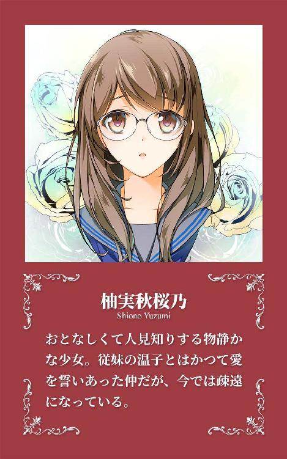
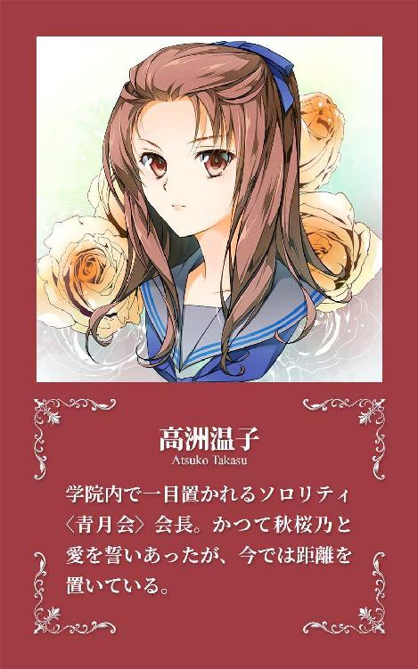
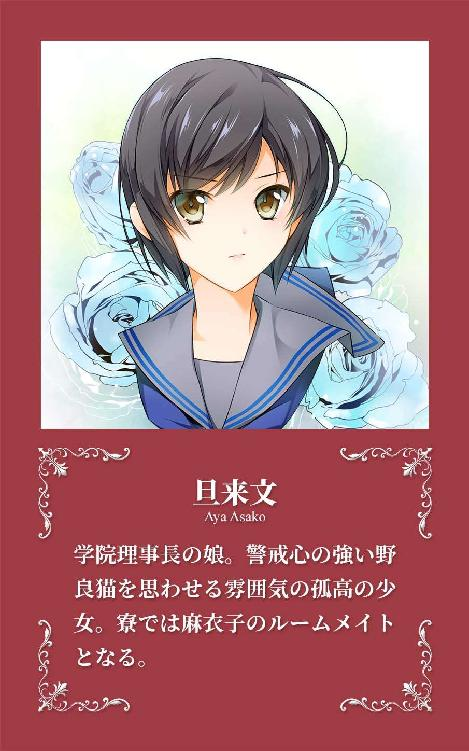
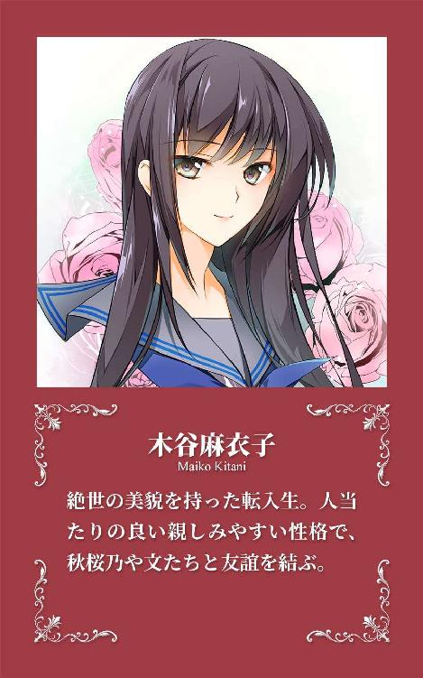

| ヨルノカナタ: 秘密の花園に還る ［ヨルノカナタ］ | |
| 野浦湘 | |
| Nora Shoin (2018) | |




私立橘生館女学院高等部に通う柚実秋桜乃はかつて同い年の従妹、高洲温子と秘密の愛を誓いあった仲だったが、ふとしたことを切っ掛けに疎遠になっていた。
そんな中、秋桜乃のクラスにひとりの少女が転入してくる。「木谷麻衣子」と名乗るその絶世の美少女に、次第に心惹かれていく秋桜乃。
しかし麻衣子の転入を機に、二〇年前に端を発した『因縁』が蠢き始める。彼女を中心にして始まった物語はやがて、秋桜乃の運命をも大きく揺るがすことになる......。
──野浦湘による百合／ガールズラブ三部作「ヨルノトバリ」に続く、同じ世界観を持ちながら登場人物を一新して送る新シリーズ「ヨルノカナタ」、ここに開幕。
「良いときも悪いときも」
「富めるときも貧しきときも」
「喜びのときも悲しみのときも」
「健やかなるときも病めるときも」
交互に交わす台詞。一旦停める。
互いの目を見つめ、タイミングを合わせ、声をそろえ。
「「死がふたりを分かつまで、愛し慈しみ、貞節を守ることをここに誓います」」
宣誓のユニゾン。つないだ両の手のひら、お互いの体温を感じ取る。
そしてふたり、タイミングを計ったのように瞳を閉じながら、誓いのキスをする。
中等部の最後の制服姿、従姉妹同士でのキス。
初めてではないが、これまでで最も真剣なくちづけ。
くちびるを重ね合わせた時間はどれだけか──それはふたりにもわからなかったが、やがて示し合わせたかのようにふたつのくちびるは離れていく。
遊戯。ふたりだけの秘密の戯れ。
しかし、そこで交わされた『想い』はふたりにとっては紛れもなく〈本物〉だった。遊びなどでは決してなかった。
たとえつたなくとも、倫理的に間違っていても、他の人には明かせなくとも──
白い闇の中から浮かび上がるような感覚──意識が次第にはっきりしてくる。
（......あ......れ......）
セーラー服姿の少女──柚実秋桜乃は何度か目をしばたたかせ、周囲の様子と自分の置かれた状況を確認する。
輪郭のおぼろげな、見慣れない天井と見憶えのない部屋。天井の白いＬＥＤ照明は点灯しているが、明るい窓の外からは陽光も差し込んでいる。床に落ちた影の長さから、まだ陽の高い時間帯と無意識に判断する。
......そうやってようやく、夢──眠り──から覚醒したことを悟る。
改めてあたりを見回す。
秋桜乃は普段しているはずの眼鏡を掛けていないことにすぐに気が付いたが、裸眼による焦点の合わない映像からでも、今いるのが記憶にない部屋であることは理解できた。
しかし、部屋には確かに見憶えはないものの、〈ここ〉がどこであるかは容易に想像がつく。
保健室──ベッドの感じと周囲を取り巻くパーティション用途のカーテン、なにより部屋の中を漂う独特の匂いから、保健室に間違いないと推察。
具体的には橘生館女学院高等部の保健室──そう判断する。
（でも......）
秋桜乃は上半身を起こしながら、記憶をたどろうとする。身体から毛布がずれ落ち、自身の制服が目に入る。見慣れてはいるが着慣れてはいない、おろしたてのダークグレーのセーラー服。
「......え......っと......」
夢の余韻がいまだ色濃く残る中、ようやく記憶が戻ってくる。だが、記憶にある最後の現実と今の状況が、どうしても結びつかない。
左手首の腕時計を見ると、午前一一時を少し回ったところだった。その事実に秋桜乃は片手で頭を抱え、思わずためいきをこぼす。
橘生館女学院高等部の二〇一四年度入学式、そのはずだった。幼等部から橘生館に通う秋桜乃からすると、中等部から高等部への進学は受験もないため決して人生の大きなイベントではなかったが、それでもひとつの区切りであった。
だが腕時計の三種の針は、自分が朝九時から予定されていたその行事をすっぽかしたことを示している。
しかし、そんなことになった理由が、どうしてもわからなかった。
入ったばかりの寮から知りあったばかりのルームメイトとともに高等部の校舎まで登校し、今後一年間過ごすはずの教室で新しい担任に諸注意を受け、そして入学式を行う講堂へ移動するところまでは記憶があった。
だが、その先がどうしても思い出せない。気が付いたらこのベッドの中だった。
（......あつこちゃん......）
唐突に訪れた不安の影に、秋桜乃は我知らず、自分の大切な従妹の名前を口の中でつぶやく。先ほどまで見ていた夢の中の相手を。秘密の恋人の名前を。すがるような想いで。
──と。
「......柚実さん？」
「あ、はいっ」
唐突に掛けられた声に、秋桜乃は慌てて返事をする。
するとレースのカーテンを開いて、妙齢の女性が覗き込んできた。見たことのない女性──白衣姿から養護教諭と判断──は気遣うように秋桜乃に話しかける。
「ああ、起きたのね。もう大丈夫？ ──あ、これ、お返しするわね」
「あ、はい......どうも......」
そう答えて手渡されたものを見る。生徒手帳と眼鏡だった。生徒手帳はおそらく氏名や所属を確認するために見たのだと判断。
それらを受け取りながら、秋桜乃は養護教諭と思しき女性にたずねる。
「あ、あの、私......どうしたんですか......？」
「おぼえてない──のかしら？ あなた、旧校舎の前で倒れていたらしいんだけど......」
「旧校舎......ですか......？」
やはり、わからなかった。
旧校舎──四年前に使われなくなった古い校舎。特に閉鎖されているわけではないが、どの部屋も本来の用途ではすでに使用されていない建物。小等部在籍の頃、高等部で開催された文化祭などで何度か足を踏み入れたことがあるので、所在や形状は把握しているが、なぜ自分がその前に倒れていたのか、秋桜乃には理解できなかった。教室から講堂までの経路からはどう考えても外れているからだ。
さらに言えば、仮にそこで倒れていたとして、すぐに発見されたことにも違和感を覚えた。各種教室のある現在の校舎、入学式が行われる講堂、高等部のほとんどの生徒が入る寮、さらには来賓たちが通る校門──それぞれを結んだどの経路からも、旧校舎は外れている。
人通りの滅多にない旧校舎付近で倒れていたのも理解しがたい話だが、そんな場所をたまたま、入学式の日に誰かがタイミング良く通りかかったというのもずいぶんと都合のいい話に聞こえたのだ。
「ああ、詳しいことは彼女に聞いて。彼女があなたを見つけて、ここまで運んできてくれたんだから」
「......？」
養護教諭の顔が背後を向く。秋桜乃はその視線の先を追う。
──養護教諭のすぐ後ろ、制服姿の少女がいた。静かに微笑んでいるようだったが、秋桜乃も今は視力の弱い裸眼のため、詳しい容姿までは判別できない。
「え、あ、あのっ......」
咄嗟のことに声にならない秋桜乃に対し、その少女はにっこりと微笑むように見えた。
まだ名前も知らない養護教諭は秋桜乃の様子をしばらくうかがっていたが、やがて安堵したかのようにうなずいた。
「......どうやら大丈夫そうね、でも落ち着くまではしばらく休んでていいから。担任には連絡してあるし。一応入学式諸々の学校行事はもう終わってるから、充分休んだと思ったら帰っていいわよ。カバンも持ってきてあるし。──それじゃ、あとよろしくね」
「はい、わかりました」
養護教諭の最後の言葉は秋桜乃ではなく、背後の少女に向けてのものだった。少女はうなずきと言葉で了承の意を示した。
やがて養護教諭はそのまま保健室から出ていった。ドアの開閉音が残される。
白く薄いレースのカーテンでパーティションを区切られたベッドのエリア、秋桜乃は見知らぬ少女とともに残される。ふたりきりだった。
「あ、あの、どうも、ありがとう、ございます......」
改めて自分を助けてくれた、その名前も知らない少女に礼を言った。少女はゆっくりかぶりを振った。
「いえ、礼には及びませんよ、柚実秋桜乃さん。私は礼を言われるようなことなど、なにひとつしていませんから」
「あ、はい、どうも......」
そう返事しながら、秋桜乃は眼鏡を改めて掛け、少女を見て、思わず言葉を失った。
（......うわぁ......）
言葉を失うほどに、息を呑むほどに、とても美しい少女だった。長い髪はつややかで、黒い絹糸のように真っ直ぐ。瞳は明るめのブラウンで、表情も明るい。清楚で可憐で、見るからに優しそう──そんな少女だった。
制服のデザインは秋桜乃と同じだが、スカーフの色は緑の秋桜乃と異なり、青だった。つまり三年生──ふたつ年上の最上級生であることを示している。
「......あ、あの、申し訳ありませんが、お名前を......」
「名前？ 私は......」
上級生の少女がそう言いかけたとき、唐突に電子音が鳴る。秋桜乃にとって聞き憶えのない音色──上級生の少女のスマートフォンだった。
「失礼、ごめんなさいね」
首をすくめながら彼女はその電話の着信を受け取り、会話を始めた。
「はい、カンノですけど......ああ、ヒラリ？ うん、うん......。──ああ、ごめん、そうだったわね。──ええ、わかったわ。すぐに行くから。──うん、うん。──はい、それじゃ、はい」
端から聞いていた秋桜乃には会話の詳細は不明だったが、電話の相手と待ち合わせしている程度のことはうかがえた。
少女は通話を終えると、秋桜乃に向き直る。
「ごめんなさい。もう少しあなたで遊びたかったんだけど、時間切れみたい」
「？ はぁ......」
一瞬、聞き間違いをしたような気がしたが、気のせいだろうと秋桜乃は自身を納得させた。少女は申し訳なさそうな微笑みを浮かべる。
それから。
「だから、今日はここまで」
そう言って少女──電話ではカンノと名乗っていた──は、ゆっくりと両手を開き、手のひらを合わせ打った。
パンッと軽い音がひとつ鳴ると、秋桜乃は一瞬にして意識を失った。
（......あれ......？）
不意に我に返る。秋桜乃は左右をキョロキョロと見回した。
保健室のベッドの上、上半身を起こしていた。自分がなにをしているのか、それを思い出そうとして──ようやく思い出した。
入学式前に旧校舎の近くで倒れ、保健室に運ばれ、学校行事があらかた終わったあとにようやく目覚めたという養護教諭の説明を。
改めて考えても、どうして自分がそんな旧校舎の近くにいたのか、誰が助けてくれたのかがさっぱりわからなかったが、秋桜乃はとりあえずベッドから出てレースカーテンを開け、保健室内を確認する。
──誰もいない。
「......」
少し考えたが、秋桜乃は、充分休んだら帰っていいという養護教諭の言葉を思い出すと、事務机に置かれた付箋紙の一枚に謝辞と帰宅する旨を名前とともに書き残した。
「ん......」
不意に秋桜乃は左の首筋にかゆみを感じ、無意識に左手で掻く。
しかしその指先は、ふさがりかけたふたつの小さな傷痕に気が付くことはなかった。
秋桜乃は今まで使っていたベッドをひと通り整えたあと、机の上にあった自身のスクールバッグを持って保健室をあとにした。
二度三度と繰り返したキス。それでも相手はなお、奈津美──菅野奈津美のくちびるをついばむように求める。
奈津美も相手に応えはするが、どこかその態度はおざなりだった。視線は相手にではなく、その肩のずっと先、遠くに見える保健室の窓の向こう、室内、今まさに部屋を出ようとする少女、柚実秋桜乃を見ている。
だが秋桜乃は何事もなく保健室を出ていく。部屋の外、並木道の木蔭から見つめる少女の存在に気が付くことなく。
「おねえさまぁ......」
奈津美に掛けられる、甘く切ない吐息混じりの声。拗ねるような、ねだるような、甘えるような、せがむような──そんな響きが込められている。
奈津美は視線を戻すと、自分にしなだれかかる相手の瞳をじっと見つめ、深く激しくくちびるを重ねた。相手も恍惚とした表情で受け入れる。合わさったふたりのくちびるの中、互いの舌と舌がゆっくりと、しかし執拗に、艶めかしく絡みあう。
──やがて、静かに離れていく。ふたりのくちびるの間を細く光る糸が結ぶが、それはすぐに切れて消える。
「本当に甘えんぼうさんなんだから、平莉は......」
「だってぇ......」
からかうような奈津美の声に、赤いスカーフの少女──鹿沢平莉はまたキスをせがむ。
しかし奈津美はそれには応えず、彼女の前にひざまずき、膝丈のスカートをまくり上げる。
「持ってなさい、平莉」
「......はい......」
平莉は奈津美の命令に従い、自分のスカートの裾を持つ。
......白くつややかな腿、そして淡いピンクのショーツが露わになる。
平莉は恥じらう表情を見せるが、それでもスカートの裾を持ったまま耐える。
その様子に満足げな笑みを見せ、奈津美は開いた口を平莉の腿にゆっくりと近付けていく。
......やがて奈津美のくちびると平莉の腿の重なった箇所から、紅い血が細い糸を引くように垂れていった。
土曜昼下がりの校舎内はあまりに静かで、遠くから時折響く部活動の声もどことなく現実感に欠けていた。
そんな中、柚実秋桜乃はゆっくりと微睡みの中からその身を起こす。
（......あ......れ......）
まだ半分眠っている意識であたりを見渡す──図書室の中だった。誰もいない。少なくとも、目の届く範囲には誰も。
（寝て......た、のかな......）
左手首の腕時計は午後三時過ぎを示している。日付は五月一四日。高等部に上がってから三度目、二〇一六年の春。最後に意識があったときから一時間は経っていないが、しかし三〇分は過ぎている。
秋桜乃は眠気を払うように首を軽く左右に振った。しかし眠気は晴れない。爽快な気分にはほど遠い。
（あれ......？）
いや、眠気ではなかった。疲労感、倦怠感──何ヶ月ごとかにある、秋桜乃にとってはある意味恒例ともいえる〈症状〉だった。
身体が重い。頭が重い──しかし、それほど辛いわけではないことを確認する。
次第にはっきりしてきた頭で記憶をたどる。
午前のみで終わった授業のあと、昼食を済ませてから、今日出された宿題を片付けるために図書室にやって来た──それは間違いない。宿題が出たときのいつもの行動だった。
ノートやプリントを見返してみると、宿題は八割方は終わっているようだった。書いた記憶のある自筆の解答が並んでいる。
不思議な感覚だった。宿題をやっていたときには、少なくとも眠気を感じていた覚えはなかった。しかし気が付いてみると眠っていた──いや、眠りから目が覚めていた。
特に眠かったわけでもないのにいつの間に眠っていて、そしていつの間に目を覚まし、そのあとは身体がだるい──秋桜乃にとっては高等部に入ってから悩まされるようになった謎の〈発作〉だった。
「また、ですか......」
思わず小さくひとりごつ。
前回起こったのは二ヶ月前か三ヶ月前か......とにかく、ペースとしてもいつもとそう大きく変わりはなかった。症状の重さも、前回より少し重めではあるが、それでも経験の範囲内だった。そういった意味ではいつも通りの〈発作〉だった。
改めて時計を見る。ほとんど無意識の行動だったが、文字盤の長針と短針が示す時刻は先ほどとそう大差はない。
秋桜乃は半ば意識して小さくためいきをついた。通常の宿題は学校にいるうちに終わらせることをモットーと常習にしている秋桜乃だったが、今はもうそんな気分にはなれなかった。
（続きは寮に帰って少し休んでからかな......）
無理する気力も必要性もなかったので、秋桜乃はノートや教科書、プリントをまとめると、そっと静かに椅子を引いて立ち上がり、音を立てずに戻す。
退室際、何気なく振り返って室内を見回すが、やはり入口受付の司書の女性を除けば誰もいない。
秋桜乃はたまたま目が合った司書に軽く会釈すると、図書室をあとにした。
図書室を出てほどなく、人気のない廊下を歩いていると、秋桜乃は階段へと差し掛かる曲がり角に人の気配を感じ、念のためそこで一旦歩みを止めた。対して向こう側は秋桜乃の気配に気が付くことなくその姿を現す。
初老の女性教師──秋桜乃の担任でもある三年の学年主任が姿を見せる。そちらもすぐに教え子に気が付いたようだった。
「ああ、柚実さん、ごきげんよう。──これから帰宅ですか？」
「こんにちは、薩摩先生。──はい、これから帰るところです。失礼します......」
そう言って会釈しながら担任のそばを通りすぎようとした秋桜乃だったが、相手のなにか言いたげな視線に気付いて歩みを停めた。
少しのためらいを見せたあと、担任は口を開く。
「柚実さん......、いま少し、時間ありますか？」
「？ あ、はい。今は特に用事もありませんが......」
「すみません、柚実さん。少しお願いがあるのですが......」
「はい、なんでしょう......？」
なんだろうかと不安を感じながらも秋桜乃は相手の返答を待つ。担任は答える。
「現在、来週から本校に通うことになる転入生へのオリエンテーションを行っています。それでこれから校内の案内をしなければならないのですが、それを柚実さんにお願いしたいと思いまして......」
「転入生、ですか......？」
唐突な話に思わず聞き返してしまう。人見知りのため、見ず知らずの人間相手の応対をするなど、秋桜乃にとっては正直気の乗らない話だった。
そんな生徒の心情に気が付かない担任教師は説明を続ける。
「はい、保護者の方に対する諸々の説明も残っているのですが、他の先生方も手の空いている方はおられなくて......。どうでしょう？ちょうど柚実さんと同じＢ組に転入することになっているのですが......」
「......わかりました......」
気が進まないが断る理由もすぐには思い付かず、そう返答した。
その後秋桜乃は、担任とともに職員室となりの第一応接室へ。
応接室の前、担任がノックして扉を開ける。中にいたのはふたり──転入生本人と、その保護者。
おそらくはあつらえたばかりの真新しい制服姿のその少女はおもむろに立ち上がり、先生に紹介されたばかりの秋桜乃に対し、珠玉の微笑みを見せた。
「初めまして、木谷麻衣子です。よろしくお願いします」
「あ、柚実秋桜乃......です......。こちらこそ、よろしくお願いします......」
茫然とした表情を浮かべていることを自覚しながらも、秋桜乃は『木谷麻衣子』と名乗った少女を見つめた。
とてもとても──少なくとも秋桜乃がこれまでに見たことがないほどに、美しい少女だった。
「──あ、こちらから先は、音楽室や美術室などの特別教室のエリアです......。中も、見ていきますか......？」
「いいえ、結構です。今回はおおまかな配置がわかればいいかなと思いますし。手短に済ませましょう。──ね？」
緊張。困惑。元来の人見知りの激しい性格のため、秋桜乃にとっては声も手も震えてしまう。そんな彼女の様子がやはり見て取れるのか、先ほど紹介されたばかりの転入生は柔和でおだやかな表情で気遣うが、秋桜乃にはそれさえも緊張の原因となる。
相手に余計な気遣いを強いてしまった──そんな思いで。
木谷麻衣子。保護者を名乗る彼女の叔父──『越生丈二』と名乗った──とともに紹介されたその少女は、この上なく美しい少女だった。
身長は一七〇はないだろうが、それでも女性としては高めであり、現に秋桜乃よりも頭半分は高かった。さらに細身ながらバランスの取れた見事なプロポーションをしている。髪は腰まで届くクセのないストレートで、まるで漆黒のシルクのよう。対して瞳は淡いブラウンで、本人の明るい性格を表しているようだった。
とにかく息を呑むような──息が止まるような──、今まで見たことがないほどに綺麗な少女だった。
そんな絶世の美少女だったが、人見知りのため緊張している秋桜乃に話しかける表情はあくまでもおだやかで優しかった。それでいて時折ジョークも交えるユーモア精神まで見せる。
しかしながらそれを受け入れるだけの心の余裕は、あいにくと今の秋桜乃にはなかった。
もっとも麻衣子は、それでも秋桜乃との会話を諦めようとはしなかったのだが。
──麻衣子は不意に窓の外、グラウンド向こうの並木越しに垣間見える古い建物を指差した。
「あの......あちらに見えるのは？」
秋桜乃は指の先ですぐになんのことかを察する。
「あ、あちらは旧校舎です......。現在では使われていません......」
「確かに年代物に見えますけど......そんなに古いって感じはしませんね。いつから使われていないのでしょうか？」
少しばかり考え込むような仕草を見せる秋桜乃。答えをどうにか引っ張り出してくる。
「確か......六年か七年か......そのくらいだったと思いますけど......」
その答えを聞くと、麻衣子は窓を開けた。初夏を思わせる気温の中、春の心地よい風が廊下に入り込んでくる。いい風だった。窓を開けても洋風木造建築の旧校舎の様子に変化などないが、いい風はそれだけで充分に価値があるものだった。
麻衣子は額に掛かる髪を指先で払いながら、風に語りかけるように口を開く。
「そうですか......そういえばこの校舎も、確かに新しくはあるのですが、去年今年で建てられた感じでもなさそうですよね。でもそれでしたら、なんでまだ残されているのでしょうか？こちらの校舎が問題なく使えているのでしたら、取り壊しになっても良さそうなものですけど......」
「あ、そもそもは新校舎の完成とともに取り壊されるはずだったんですが、歴史的にもそれなりの価値があって、教職員や理事の中にも無視できない数の反対派がいる......って話を聞いたことがあります。それで今でも取り壊されないって......」
「敷地には余裕があるから、無理になくす必要もなし──といったところでしょうか？」
そう話しながら、麻衣子は窓の外に見える周囲を見回してみる。秋桜乃もつられてその視線の先を追う。
窓の外に見える景色はゆとりのあるもので、校舎やグラウンドも充分に大きく広いものだったが、敷地はそれでもなお余裕があった。
秋桜乃は答える。
「そう、らしいんですが......でも今の基準からするとやっぱり地震にはそんなに強くなくて、それをそのままにしておくのも問題、みたいです......」
「で、わざわざ耐震工事をしてまで飾り物にしておくほどでもない──ですか......」
「はい......」
秋桜乃がそう答えた瞬間、少しばかり強い風が廊下に吹き込む。
「あっ......」
思わず瞳を閉じる秋桜乃。そんな彼女に、麻衣子は優しく声を掛ける。
「大丈夫ですか？」
「だ、大丈夫、です......ちょっとびっくりしただけですから......」
「そう......あら？」
「はい？」
「あの......すみません。頭、ちょっと下げてもらえますか？」
「あ、は、はい......」
「そうそう......ああ、そこまで下げなくていいですから......」
いきなりなんのことかわからず、深く頭を下げるが、下げすぎたのだろうが、麻衣子は優しく制止する。左手を秋桜乃のほうに伸ばすと、指先を彼女の頭頂部の髪に触れさせた。
──しばしの後、ゆっくりと離す。
「あ、あの......？」
なんなのかわからない──そう言いたそうな顔の秋桜乃に対し、麻衣子は指先に摘んだ白い花弁を見せる。秋桜乃には名前のわからない花だった。
「はい。風で飛んできたみたいですね。──大丈夫、もう取れましたから」
そう答え、その手を窓の外に出す。ちょうど風が吹き、指から放たれた花弁は風に舞ってどこかへと飛んで消えていく。
「あ......」
麻衣子は反対の右手で、秋桜乃の髪を優しく払うように撫でる。慈しむように、愛おしむように。
「髪──秋桜乃さんの髪、やわらかくて素敵ですね......」
静かにそっと、そうつぶやく。
「えっ......」
思わぬ台詞に言葉もなく止まる秋桜乃。しかし、転入生の手はゆっくりと離れていった。
麻衣子は表情を改める。
「さて──案内はもう少し、ですよね？」
「あ、はい、そう、です......」
「それでは、さっさと済ませてしまいましょうか」
「......は、はい......」
心臓の鼓動が高鳴るのを感じながら、秋桜乃は答える。久方ぶりの感覚だった。先ほどまでは気が進まない案内役だったが、その役目がもうすぐ終わってしまうと考えると、それが名残惜しいように感じてしまっている自分自身に気が付く。
──脳裏によぎる従妹の影に、思わずかぶりを振る。
そんな秋桜乃に対し、麻衣子は静かに微笑んだ。
「せっかくお近付きになれたのですから、先生に任された仕事なんかではなくて自由に秋桜乃さんとおしゃべりしたいと思ったのですけど......ダメ、でしょうか？」
優しい声。本当に優しい。それがとても嬉しく感じた。
「あ、はい......」
秋桜乃はその言葉に素直に甘えることにした。
「そう......それでは、残りの案内、よろしくお願いしますね」
「は、はい......」
そう答えて案内を再開。
しかし。
（......！）
秋桜乃は不意に心臓を右手で押さえる。心臓がひとつ大きく鼓動を打つ。目の前が暗くなり、周囲の音が遠のいていく。力の抜ける感じが足元から全身へと這い上がってくる。
（こんなときに......こんなときに......！）
例の〈発作〉に伴う、貧血というか立ちくらみだった。毎回起こるわけではなく、起こったとしてもせいぜいよろめくのが大部分だったが、今回のはかなり症状が重かった。
耳に届く音が遠くなり、目の前が暗くなる。無重力状態で漂うような感覚を覚えるが、それに反するように膝が折れ、地面に倒れ込む。膝をつき、右手で自分を支える。これ以上倒れないように。
脳に酸素が充分に送られていないから意識を失う──以前聞いたことを咄嗟に思い出す。だから酸素を取り込もうと速いペースの深呼吸を繰り返そうとするが、これまでに成功例のないことがこの場でいきなりできるわけもない。
しかし、何度も繰り返す。
「......秋桜乃......さん!?」
麻衣子が秋桜乃のただならぬ様子に気が付いて、慌てて声を掛ける。肩に手を掛ける。
だがそれと同時に支えの役目を担っていた右手も力が尽きたのか、力なく床を滑る。彼女自身も倒れ込む。
「──秋桜乃さん！」
慌てた麻衣子の叫び声を聞いたような──そんな黒い感覚の中、秋桜乃は自身の意識が沈み込んでいくのが自分でも理解できた。
（ごめん......な......さい......）
薄れゆく意識の中、秋桜乃は自分がこれから麻衣子に掛けるであろう迷惑のことを心の中で懸命に詫びた。声に出そうにも、もはや声にすらならなかった。
陽射しは季節外れの暑さをはらんでいる。まだ五月の半ば。ほんのつい一ヶ月前までは桜が乱れ咲いていたのだが、今ではそのこと自体が嘘のような、まるでひと足早い夏を思わせる陽気だった。
雲がまばらに散る青空の下、人気のない墓地の中、制服姿の少女──旦来文は墓前に花を添えた。
そして黙祷──ただひたすらに、安らかな眠りであることを祈る。
──やがて。
「先輩。私、とうとう先輩の上級生になりました」
かつて憧れたひとつ年上の先輩に、文は静かにそっと語りかけた。
二年前の今日、文が橘生館女学院の中等部から高等部に進学してまもなく、死体として発見された先輩。文が中等部在籍時から憧れ、密かに慕い続けていた先輩の突然の死──状況から死因は屋上からの転落死と推察された。
つまりは飛び降り自殺──大部分の生徒たちはそう判断したが、仲の良かった文にしてみればそんな噂など信じられるはずもなかった。死体として発見される数日前にも電話で話をしたが、自殺をするような雰囲気などどこにもなかったからだ。
ただ......。
「......」
確かに自殺をするような雰囲気ではなかったが、今までとは違う様子だったのもまた事実だった。
妙に陽気で浮かれているような、言ってしまえば躁にも近い状態だったのだ。そのときは違和感を覚えた程度だったが、結果としてその数日後に先輩は死体になってしまった。
どこで『選択』を間違えたのだろう──当時の文を襲ったのはそんな想いだった。二年を経た今でも時々、そんな後悔に押しつぶされそうになる。
もしかしてあの最後の電話で、自分が適切な会話をしていれば先輩は死ぬことはなかったのではないか──他殺にしても、信じたくはないが万が一自殺にしても、そんな事態はもしかしたら防ぎ得たのではないかと。
しかし結局、それも過ぎた話でしかない。先輩は死に、二年が経った。それだけが間違いようのない真実だった。
しばらく言葉もなく墓石を見つめる文だったが、やがて我に返ったかのように首を左右に振る。今日ここに来たのは自分の懺悔ではなく、先輩の死を悼むため──それを思い出して。
「すみません、先輩。安らかに、眠ってください」
墓碑銘に刻まれた『鹿沢平莉』という名前をもう一度目でたどり、再度一礼してから、文はその場をあとにした。
放課後。図書室から西日の差す廊下へと出る。人の気配は遠い。
──が。
不意に三名ほどの集団が通りかかるのを見かける。
青のスカーフがふたり、緑のスカーフがひとり──三年生ふたりと一年生ひとり。
そのうちの一年生は、よく見知った仲だった。
（......あつこ......ちゃん......）
無意識にそうつぶやこうとしたが実際には言葉にはならず、口の中で消えていく。
だが想いだけは届いたのか、その一年生は歩みを停め、振り返った。
間違いようのない、最愛の従妹の姿がそこにはあった。
しかし感情の乏しい無機質な視線が、どこか刺さるように感じてしまう。
......すると。
「──どうしたの、高洲？」
先を歩く三年生のひとりが立ち止まった後輩に気が付き、振り向いてたずねるが、そのさらに向こうに佇む一年生の姿を見て、どういうことかを察する。
「......ああ、ユズミの......。──知り合いなの、高洲？」
その言葉とは関係なしに反射的に会釈。
と同時に、トクン、と、心臓の鼓動が一瞬大きくなる。かすかな期待と大きな不安。
しかし。
「......いえ、別に......」
興味なさそうに無表情にそう言い放ち、訊かれた一年生──高洲温子は踵を返す。先輩たちを置いて先に進む。
ふたりの三年生は軽く首をすくめると、少しばかり見下すようなまなざしを一瞬だけ見せてから、後輩のあとに続いた。
遠ざかる三つの背中を見つめながら、握ったこぶしに思わず力が入る。
（......あつこ......ちゃん......）
ほんの一ヶ月かその程度だった。
たったそれだけで、互いの行く道は分かたれてしまった。
あのときに交わした愛の契り──それがいともあっけなく、儚く壊れてしまったことに胸を痛めてしまう。
......しばらく悲しみと悔しさを噛みしめるだけだったが、やがて諦観とともにかぶりを振った。
もう、終わってしまったのだから──その想いで。
心が充分に落ち着いたことを確認してから、人の気配の絶えた廊下を歩き始める。寮へと帰るために。
昇降口へと続く階段の前まで来て、ふと歩みを停める。
自分が下りようとする階段の反対側、階上の踊り場の直前に人影を見たのだ。
今いるのは四階。この校舎の最上階。
そこからさらに『上』というのは必然的に屋上しかない。
こんな時間になんで屋上に？──そう疑問に感じた瞬間。
「......？」
その階上の人影が振り向いた。同じ制服だが、スカーフの色は赤──上級生の二年生ということがすぐにわかり、慌てて大きく会釈。
対するその二年生は最初少し戸惑った表情だったものの、すぐに上級生らしい笑みで軽く頭を下げてから前に向き直り、再び階段を上がり始める。
それを見届けてから、再び歩き始める。階段を下りようとする。
......と。
「──、────......」
階上から聞こえてきた声に思わず顔を上げた。
その声は......。
──眠りの底からゆっくりと這い上がる。虚ろな心で視界に入った『もの』がなにか考える。
見憶えのある天井──保健室だった。
秋桜乃はなぜここに自分がいるのか、それを思い出そうとする。目覚める直前までなにか夢を見ていたような気がするが、それはすでに消え失せている。胸にはまだ不安感が残ってはいたが、根拠のないそれはいつものように薄く消えていく。
（......また......あの夢......）
憶えてはいないが、ほぼ直感する。
秋桜乃はゆるくかぶりを振って雑念を払うと、傍らのふたつの人影に気が付く。どちらも先ほど紹介されたばかりの......そう、名前は確か......。
「......あっ......麻衣子......さん......？」
「ああ、秋桜乃さん、もう大丈夫ですか？ まだ休んでいたほうが......」
麻衣子のとなりでは三〇代半ばの男性──彼女の叔父の越生丈二も、心配そうに秋桜乃の様子をうかがっている。
幼等部から橘生館女学院に通う秋桜乃にしてみると、肉親や親戚以外の男性は縁遠いものであり、自然と身体が緊張を覚えてしまう。
それを面に出さないよう、秋桜乃は麻衣子にたずねる。
「......ええ......そうしますけど......いま、何時ですか？」
どのくらい眠っていたんだろう──そんな思いで壁の時計を見るが、ぼやけて時刻が読み取れない。眼鏡が外されているようだった。今まで寝かされていたのだから、当たり前といえば当たり前だったのだが。
すると麻衣子が秋桜乃の眼鏡を手に取って弦を開き、そのまま持ち主の耳にゆっくりと掛ける。
「はい、そのまま......はい、ＯＫです」
「あ、ありがとう......ございます......」
他人に眼鏡を掛けられるという滅多にない経験に思わず羞恥を覚える。かなりの照れを感じる。
麻衣子は壁時計を見ながら答えた。
「もう少しで四時半ですけど......なにか予定があるのですか？」
「えっ......いえ、特にはないのですが......」
寮に戻って少し休んだあと、残りの宿題を片付ける──それくらいしか予定はなかったので、特に困ることはない。しかも、その『少し休む』をある意味前倒しで実施してしまったようなものだ。
「そうですか......。──それより秋桜乃さんの荷物はどちらでしょうか？」
「えっと......自分のクラス、ですけど......」
「三年Ｂ組ですか？ それでは、取ってきますね」
「でも......悪いです......」
秋桜乃は遠慮する。なにからなにまで世話になっている自分を嫌悪しながら首を左右に振る。
しかし、麻衣子はそんな彼女を優しく否定する。
「いいんですよ、このくらい。それと、もし体調がすぐれないようでしたら叔父が病院まで送ってくれるそうです」
その言葉に丈二はうなずく。
「掛かりつけの病院があるのでしたらそこまでお送りしますが......お身体、本当に大丈夫ですか？」
「あ、だ、大丈夫ですけど......そんな、なにからなにまで......」
丈二の申し出をやはり遠慮するが、麻衣子はそれでも譲らなかった。
「いえ、お気になさらずに。大事に至ってしまっては元も子もありませんから。──で、お加減は......本当に大丈夫ですか？」
「あ、はい。いつものことなんで、平気です」
「いつもの、こと......？」
訝しむような麻衣子の声。『いつものこと』は少し言いすぎだったかと考え、秋桜乃はすまなそうな曖昧な笑みを浮かべた。
「あ、いえ......そんな大したことではないんで......すみません......」
麻衣子はしばらく考え込んでいるようだったが、やがてふっと相好を崩した。
「......わかりました。──先生、それでは秋桜乃さんの荷物、取ってきます」
「ああ、よろしくね、木谷さん」
秋桜乃は今の今まで気が付かなかったが、養護教諭がこの保健室内にいたようだった。その養護教諭の返事もカーテン越しの秋桜乃たちのやり取りを把握しているような声色だった。
「それでは、少々待っててくださいね、秋桜乃さん」
「......はい......」
そんな麻衣子を、秋桜乃は笑顔で見送った。パーティションに残された秋桜乃と丈二だったが、丈二は「それでは」と言い残して席を立った。養護教諭のところへと戻り、そこで会話する。
「......」
気を遣わせてしまった──そんな小さな後悔を胸に覚えながら、秋桜乃は天井を見上げた。
すぐに麻衣子は戻ってきた。秋桜乃のスクールバッグを持って。
秋桜乃は半身を起こす。先ほどよりもずいぶん楽になっていた。例の〈発作〉のあとはいつも身体の倦怠感が強く残るが、今回はなぜかそれほどひどくはない。〈発作〉後に意識を失うまでに至ること自体稀だが、そんな重症さとは無縁のような状態だった。
「もう大丈夫、柚実さん？」
「あ、はい。かなり楽になりました」
養護教諭の問いに笑顔で秋桜乃は答える。普段しがちな作りものではない、自然で無理のない笑顔で。
養護教諭は秋桜乃の顔をじっと見ていたが、その表情と顔色に嘘がないことを悟ったようだった。
「どうやら大丈夫そうね。──それじゃ木谷さん、あとよろしくね」
「はい、承りました」
そう答える麻衣子。秋桜乃はベッドから降りて靴を履き、つま先で床を二度三度軽く叩く。左右ともに──ＯＫ。問題なし。
「それでは、どうもありがとうございました」
「はい。無理して保健室の常連にならないようにね」
「は、はい......」
思わず苦笑い。秋桜乃にしてみれば、すでに『保健室の常連』である自覚がそれなりにあったからだ。
「では、失礼します」
麻衣子は養護教諭にそう声を掛けた。秋桜乃と丈二も礼をしながら同様にし、三人で保健室をあとにした。ドアをゆっくりと閉める。
「それでは、私はこれで。──柚実さんもお大事に」
「あっ、はい。どうもありがとうございました」
丈二のその言葉に秋桜乃は深々と頭を下げた。
丈二はもう一度「それでは」と言い残し、来訪者用の通用口へと踵を返した。この場所からは職員室とは反対の方向の。
その姿が廊下の曲がり角に消えるのを見届けると。
「それでは、行きましょうか」
麻衣子はとなりの秋桜乃に向かって声を掛け、歩き出す。秋桜乃もそれに続く。
ふたりで並んで歩き始めはしたが、主導権を握っていたのは麻衣子のほうだった。
「申し訳ありません。私の荷物が職員室にあるので、そちらに寄らせていただいてもよろしいでしょうか？それと、先生にも秋桜乃さんが無事であったことを伝えたいですし」
「あ、はい......」
秋桜乃はやや照れながらも、そう答えた。
職員室では担任がひとりでデスクワークをしていた。「失礼します」の声とともに入ってきた麻衣子とそのあとに続く秋桜乃の姿を認めると、担任は仕事の手を止める。
「あら、柚実さん。お身体はもう大丈夫なの？」
「はい。どうも御心配をお掛けしました」
「そう......無理しないようにね。──木谷さんもお疲れ様でした」
「いえ、私は自分にできることをしただけですので」
（......？）
担任と麻衣子の会話がよくわからなかったので秋桜乃は首を小さく傾げたが、それに気付いた担任が優しく微笑む。
「ああ、柚実さん。木谷さんがね、倒れた柚実さんを抱えて保健室に飛び込んできたんですって。なんて言ったかしら......そうそう、『お姫様抱っこ』ってやつで」
「そう......なんですか？」
秋桜乃は目を見開いて麻衣子を見る。対する麻衣子は少し困ったような笑みを浮かべて軽く肩をすくめる。
「気にしないでください。さっきも言いましたけど、私は自分にできることをしただけですので......」
「で、でも......あ、ありがとうございます......」
慌てて改めて礼をする。自分が気を失った場所と保健室の位置関係を頭に思い浮かべる──階段二階分の高低差と水平方向で数十メートルの距離。それを人ひとり抱えて運ぶというのは、非力な秋桜乃にとっては正直想像のできない大仕事だった。
秋桜乃は改めて麻衣子を見る。
背は確かに高めであるが、体格は決して立派と言えるほどではない。冬服のため表に出た身体の部分は少ないが、たとえば膝丈のスカートから出るタイツのふくらはぎも見事な脚線美を描いてはいるものの、どちらかといえば細いほうだった。服を着たシルエットも平均的な女子高校生と比べればスリムなほうだろう。顔や首筋、袖から出ている手もやはり細い。
そんな華奢な彼女が、ひとりの女の子を抱えて運べるようには秋桜乃には思えなかった。
にもかかわらず、そんな信じがたい苦労と手間を掛けさせてしまった──さすがに恐縮するしかなかった。
「本当に、ありがとうございます......」
重ねて礼を言う秋桜乃。自分の不甲斐なさで会ったばかりの人間に迷惑を掛けたことを詫びる。麻衣子はまた困ったように肩をすくめた。
「いいんですよ、本当に......」
そう答えると、話を強引に打ち切るかのように麻衣子は担任に向き直った。
「それでは、今日はこの辺で寮のほうに行こうと思います」
「ああ、そうでしたね。──今日入寮でしたっけ？」
「そうです。手続きは大部分済ませていますが、今日はまず寮監棟へ顔を出すようにと言われています」
おそらく入寮に際しての細かい諸注意の伝達があるのだろう──傍らで聞いていた秋桜乃はそう理解した。
「わかりました。──柚実さん、寮への案内、お願いできますか？」
「あ、はい。わかりました」
反射的にそう返事をする。その様子に担任は微笑んだ。
「それではまた来週。──良い週末を」
「はい。──それでは、失礼します」
秋桜乃と麻衣子はそう返事をした。麻衣子は担任の机のそばに置かれていた自分のスクールバッグとライトブラウンのキャリーバッグを手に取った。
職員室の入口で改めて辞去の挨拶を残し、ふたりそろって退室。
扉を閉め、ふたりで少し歩いてから、秋桜乃は麻衣子に声を掛けた。
「あ、あの、麻衣子さん......。本当に──本当にどうも、ありがとうございました......」
「......」
立ち止まり、腰を深く曲げ、秋桜乃は改めて礼を述べた。そんな彼女に対し、同じく立ち止まった麻衣子は少々複雑な笑みを浮かべる。
麻衣子は少し考え込む素振りを見せてから、静かに口を開いた。
「......私としてはそう何度も礼を言われるのもどうかと思うのですが、もし秋桜乃さんが今回の件を気にされているのであれば、私は秋桜乃さんに恩を着せて私の言うことをなんでもひとつ、聞いてもらいたいと思います。──それでも、構いませんか？」
「あ、はい。構いません......」
思わぬ麻衣子の返しに一瞬身構える秋桜乃だったが、それでも反射的に受け入れる言葉を返した。どんなことを要求されても構わない──そんな覚悟を持って。覚悟で以て。
麻衣子が一歩踏み出し、秋桜乃との距離を一気に詰める。思わずあとずさりしそうになる秋桜乃だったが、そこを耐える。
手を伸ばせばすぐに触れ合えるほどの距離──麻衣子の伸ばした手が実際に秋桜乃の頬に触れる。指先が優しく頬を撫で下り、人差し指はやがて顎の先へとたどりつく。
──秋桜乃の顎に添えられる、麻衣子の親指。
麻衣子はさらに秋桜乃と距離を詰める。背の高い麻衣子が秋桜乃の顎を上に向けるような仕草。
それは、麻衣子が少し前かがみにでもなればキスできるほどの距離だった。
そんな状況になり、そんな状況に気が付いてもなお、秋桜乃は動かなかった。いや、動けなかった。ただひたすら、じっと麻衣子の瞳を見続けるだけだった。
清楚なはずの麻衣子の瞳に、妖しい光が宿る。蠱惑的なまなざし。
「目を......目を閉じてください......」
囁きのような静かな麻衣子のその声に、秋桜乃は言葉ではなく態度で応えた。ゆっくりとまぶたを下ろす。
昼下がりの放課後、陽の射す廊下、瞳を閉じた淡いオレンジの闇の中、秋桜乃は麻衣子の行動を待つ。どんな行動か──敢えて考えず、流れに身を任せるように待つ。
そうして感じる、麻衣子の近付く気配。
しかしそれは直前で進路を変え、秋桜乃の左側にそれる。
すると。
「今回の件は、もう気にしないでください。──それが、お願いです」
秋桜乃の耳のすぐそばで、麻衣子はそう囁いた。
「......え？」
思わず目を開ける秋桜乃。その目の前にいたのは、いたずらっぽく微笑む麻衣子だった。さらに相好を崩す。
思わぬ展開にしばらく茫然とする秋桜乃だったが、すぐに笑みに頬をゆるめる。
「......はい......」
短いその返事に、麻衣子は優しく微笑んだ。
「それでは、寮への案内、よろしくお願いしますね」
「......はいっ」
先ほどよりもはっきりした声で、秋桜乃は返事をした。麻衣子はその声に笑顔で応える。
ほどなくしてふたり、再び歩き出す。
玄関を抜けて、しかし正規の校門へ向かわず、校舎を迂回するように反対方向──付属寮へ向かう。ふたり並んで歩く。
そんな中、不意に麻衣子は出たばかりの校舎を振り返った。充分に傾いた太陽は校舎のちょうど上に掛かって見える。明るい陽光が校舎とともに作り出す濃くて深い陰──極端なコントラストの中、『なにか』を見つけ出そうとするかのように目を細めている。
「？ 麻衣子、さん......？」
真剣な横顔を見せる麻衣子に、秋桜乃はおそるおそるたずねる。その視線の先を追ってはみるが、やはり校舎の上から射す太陽の光がまぶしい。そのため、陰になった校舎の中になにかを見つけ出すなど、到底困難な状態であった。
「......いいえ、どうも気のせいだったようです。──行きましょう、秋桜乃さん」
そう答えると、麻衣子は再び歩き出した。秋桜乃は首を傾げながらも、彼女に従った。
校舎の中、三階の廊下、壁際から注意深く外を見下ろしていた人影は静かに微笑んだ。
外を歩いていたふたりの少女。そのうちのひとりと目が合ったが、その少女は大した反応も見せず視線を元に戻し、校舎から立ち去っていく。
予想通りの反応だった。たとえあの場で気が付いたとしても、まさか馬鹿正直に反応するなんてこと、あるわけがない──そんなことは〈彼女〉にも理解できていた。
〈彼女〉はじっと、窓の外の少女たちの背中を見つめる。
「──このときを、もう何年も待ってましたよ、麻衣子さん......」
微笑みながら、小さくそうつぶやいた。
「......少し、立ち入ったことをお聞きしてもよろしいでしょうか？」
「あっ、はい、なんでしょう......？」
校舎をあとにしてからすぐ、麻衣子は秋桜乃に声を掛けた。秋桜乃は少し警戒するような表情で応える。
麻衣子は言葉を選ぶような、慎重な表情でゆっくりと口を開いた。
「保健室で秋桜乃さんがおっしゃっていましたが、ああいう......気を失って倒れるのって『いつものこと』なんですか？」
「それは......」
口ごもりながら秋桜乃は歩みを止める。麻衣子もそれに倣う。すぐにふたりは陽射しを避けるため、並木の木蔭に入った。
しばしの無言。躊躇の表情。今日会ったばかりの人に、どこまで踏み込んで話していいのか──そんなことを悩む秋桜乃の顔。
しかし。
秋桜乃は麻衣子の表情を見る。真摯な、真剣な面持ちだった。今日会ったばかりの人に、どこまで踏み込んで聞いていいのか──そんなことを考えていることが、秋桜乃にも見て取れた。
......それを見て、秋桜乃は心を決めた。静かに口を開く。
「自分でもよくわからなくて......お医者さんで調べてもらっても詳しいことはわからなかったんですが、私、どうも妙な〈発作〉を持っているらしくて......」
「〈発作〉──ですか？」
麻衣子の復唱に秋桜乃はうなずく。
「小さい頃は全然そんなことはなくて、どうも高校生になってからなんですが、なんでもない状態から不意に意識を失うことが時々あるんです。だいたい二～三ヶ月の一回くらいの頻度なんですが......」
「では、今日のもそれだったんですか？」
「あっ、いえ......あのときのはその〈発作〉とは別で......いえ、全く無関係ってわけでもないんですが......」
「どういうことでしょうか？」
「......さっきの校舎案内の前、私は図書室にいたんですが、そこでこの〈発作〉が起こったんです」
「......」
「図書室の中で、ほかにはほとんど誰もいなくて、それで気が付いたら意識を失っていて......いえ、気が付いたから目を覚ましたんですけど......」
「大丈夫、だったんですか？」
「ええ、普段でしたら意識を失って、少ししたら目を覚ますのが大部分なので大事には至らないのですが、そうして意識を失った直後って、妙に倦怠感というか疲労感が激しいんです、私の場合。病院で検査してもらったときの話だと、そういった〈発作〉のあと、私はかなりの貧血状態になっているみたいなんです。正確には血液そのものが少なくなっているらしいんですが......。──あっ、貧血っていうのは......」
「血液中のヘモグロビン濃度が低下した状態──でしたっけ？」
「......え、ええ、そうです。だから本来の意味での貧血は、血液が少ない状態ではなく......そうですね、血液が薄くなった状態を言うそうですが、私の場合、血液自体は成分も濃度も問題がないらしくて、あくまで量が少なくなっているだけのようでして......」
秋桜乃にとって自身のこの〈発作〉を他人に説明するとき、まず面倒なのが貧血についての定義だった。『貧血＝血が少ない』と単純に思っている人が存外に多く、そこでの説明に手間取ることが多い。だから自然とこの件に関しては他人に説明することが億劫になっていたのだが、麻衣子はそのあたりについては適切に理解しているようだった。そこがありがたかった。
しかし──麻衣子は疑問を挟む。
「でも、そうして血が少なくなるのって、なにか身体に病気があるからではないんですか？その辺も検査されたのですか？」
「え、ええ、検査も何度かしたんですが、やはりわからなくて......」
「わからない、ですか？」
「ええ、特に異常はないんですよ、身体のほうには。骨髄とか脾臓とか、そういった造血系の組織は特に念入りに調べてもらったんですが、やはり異常はなくて......」
「では......」
「あ、あと......生理との関係も疑ってみたんですが、結果としてそれも特に問題はありませんでした。〈発作〉の起こったときと私の生理周期にも特に関連はありませんでしたし、私の場合、生理の症状もそんなに重いわけではないですし......」
自らの生理について語る恥ずかしさに頬が赤くなる感覚を覚えながら、秋桜乃は説明を続ける。
「話を元に戻しますけど、校舎の案内をしていたときにそんな血が少ない状態だったので、そこで運悪くひどい立ちくらみを起こしてしまった──というのが、あのときの状況です。申し訳ありません、本当に御迷惑をお掛けして......」
「......私は秋桜乃さんに、『この件に関してはもう気にしないでくれ』って、そうお願いしたはずですけど？」
「......はい」
弱い笑顔で、秋桜乃は返事をした。
麻衣子は表情を改める。真剣な面持ちに。
「でも、本当に大丈夫なんですか？ もしかしたら全く未知の病気という可能性もあるのでは？」
秋桜乃はかぶりを振る。
「セカンドオピニオンどころか、それこそサードやフォースまで、色んな病院で調べてもらったんですが、結果はどこも同じです。時々原因不明で急に血が少なくなることを除けば、私は至って健康体であると、どこの病院でも言われました」
「しかし、その唯一の例外が原因不明というのが......」
「あ、個人的にはそちらはもうそれほど気にしてはいないんですが、困っているといえば、『周囲の人にあまり理解されない』というところです。『原因不明だが血が少なくなっている』って診断結果が出るまでは、たちの悪い仮病だと思われることが多かったですから......」
「......そうなんですか？」
「この〈発作〉、なぜか私がひとりのときにしか起きないんですよ。たとえば授業中にいきなり気を失うとかだったらまわりの人も心配してくれるんでしょうが、ひとりでいるときにしか〈発作〉が起きなくて、そのあとで他の人たちがいるところで立ちくらみで倒れても......」
「......」
「私も他の人の立場だったら、『都合のいいときだけ仮病を使って』って、やっぱりそんな感情を抱くと思いますよ......？」
さみしげな、それでいて自嘲的な秋桜乃の微笑み。
そんな秋桜乃に対し、麻衣子は素直に頭を下げた。
「申し訳ありません、どうも無神経なことをお聞きしてしまったようで......。本当に、申し訳ありませんでした」
「あっ、いえ、そんな......。気にしないでください、これくらいのことで......」
「しかし......」
麻衣子の真摯な顔に、秋桜乃は当惑する。しかしその直後、明るい表情となって麻衣子に話しかけた。
「......もし、この件で麻衣子さんが気にされているのでしたら、私は麻衣子さんに恩を着せてお願いをひとつ聞いてもらいたいと思います。『この件についてはもう気にしない』──そうお願いしたいのですが、よろしいでしょうか？」
優しさと善意から出た意趣返しだった。先ほどとは立場を入れ替えた、秋桜乃から麻衣子への。
「あ......」
麻衣子はすぐにその意図を汲み取る。
「......はい、わかりました......」
ふたりで顔を見合わせ、どちらからともなく小さく笑いあった。
ひとしきり笑い終えると、麻衣子は秋桜乃に声を掛けた。この話はもうおしまい──そう告げるかのように。
「それでは、寮への案内、引き続きよろしくお願いできますか？」
「......はい」
秋桜乃は笑顔でそう答えた。
橘生館女学院高等部の付属寮は、高等部の校舎から徒歩およそ五分の場所にある。学校の敷地内の縁に沿うように歩き、途中交通量の少ない県道を渡り、寮の敷地へ。
寮までの道中、人の姿はそれほど多くはなかった。たまにすれ違う生徒たちには笑みと会釈で応える秋桜乃だったが、生徒たちは秋桜乃に同様の挨拶を返すものの、それ以上に見慣れない美しい少女──木谷麻衣子──のほうが気になるようだった。
だが麻衣子が生徒たちに笑顔で会釈すると、された側は慌ててうなずき返す。そんな様子の生徒たちを、麻衣子は優しそうな微笑みで見送った。
「いい学校ですね......」
「そう......ですか......？」
麻衣子のつぶやきに、思わず秋桜乃はそう返した。幼等部の頃から橘生館に通う秋桜乃からすれば、他の学校の様子など知る由もない。だから当然比較することもできず、そのため、この学校が客観的に見て『いい学校』かどうかは判断できないのだ。
ただ秋桜乃にしてみれば、人見知りで友達が大勢いるわけでもない状況ではあっても、他の学校に行きたいと考えるまでにこの橘生館で不愉快な思いをしたことが、二年前の個人的なあることを除いてほとんどない。
それはつまり、そのこと自体がこの学校が『いい学校』であることの証明なのだろうか──ふとそんなことを考える秋桜乃。
麻衣子は彼女のほうに顔を向けた。
「私が以前いたのは公立の共学校ですけど、この橘生館と比べればずいぶんとにぎやかというかやかましいというか......とにかくそんな感じでしたけどね」
「そうなんですか......？」
「ええ。そこに比べれば、ここの皆さんは本当に上品で礼儀正しいと思いますよ。──といっても、まだそんなに多くの生徒さんを見たわけではありませんけどね」
「そう......ですか......」
その言葉に、秋桜乃は麻衣子を見つめ返す。
昔はそれこそ〈お嬢様学校〉として近隣に名の知られた橘生館であるが、昨今の少子化に伴う生徒数の減少によって、四半世紀近く前から学業に重点を置くようになった。その結果、名家の出ではない、いわゆる中流家庭出身の生徒の比率も高くなってきた。
ただ、それでも生徒の出自によって派閥ができて対立するようなことは一部を除いてそう多くはなく、全般的には概ね自由で穏健な校風であると言える。そういった意味では、麻衣子の評価は妥当なものと秋桜乃には思えた。
ただ──。
「あ、でも......麻衣子さんも上品で優雅だと思うんですが......」
それは秋桜乃の本心だった。少なくとも自分自身を含め、橘生館の他の生徒と比較しても、麻衣子の所作は見事なものだった。意識して行っているかどうかまでは秋桜乃には見抜けなかったが、わざとらしいところはまるでなく、極めて自然でいながら、それでいて品のある振る舞いだった。
麻衣子は少し照れたような笑みを浮かべる。
「ありがとうございます。秋桜乃さんにそう言っていただけると、とても嬉しいです」
「あっ、いえ、そんな......」
ふたり、くすくすと笑みをこぼしながら歩みを進めると、やがて寮の正門へと至る。少し前からかすかに見えていた寮の建物も、その姿をはっきりとさせた。
「あっ、こちらが寮です。──まずは寮監棟、ですよね？」
「ええ、そうです。──どちらでしょうか？」
「あ、こちらです」
そう言って秋桜乃はある建物を指差した。
橘生館女学院高等部の付属寮は、上から見ると基本的に横長の長方形が三行二列に並んだ形となっている。その六つの棟が寮生の生活の場となる寮そのものだった。
そして棟の二列の間が幾分空いており、その中央部分に相当する場所にあるほぼ正方形の建物が食堂などのある厚生棟だった。寮監棟はその二階となっている。本来は独立した建物であった寮監棟だが、老朽化を理由に厚生棟に統合されたのだ。ただ、名前だけは旧来のものがそのまま残っている。
「こちらの厚生棟の......はい、あそこの階段から二階に上がった先が寮監棟です。──一緒に行きましょうか？」
「表札か表示、あるんですよね？」
「え、ええ、ありますけど......」
「でしたら大丈夫です。ここまで来たら迷子になることもないでしょうから......」
「そう、ですか......」
少し惜しむような、秋桜乃の声。麻衣子は微笑んで返す。
「案内、どうもありがとうございました。これからも色々とお世話になると思いますが、どうかよろしくお願いします」
「あ、いえ、こちらこそ......」
互いに礼を言いあう麻衣子と秋桜乃。
「それでは、また」
「......はい......」
最後にもう一度、礼をしてから麻衣子は厚生棟に向かって歩き、入口脇の階段を上っていく。秋桜乃はその姿が消えるまで見送った。
麻衣子の姿が消えると、秋桜乃は踵を返した。寮の自分の部屋に帰るために。
夕食まではまだ少し時間があった。そのため、寮の敷地内を行き交う寮生の姿もそうは多くない。
......が。
（あれ......？）
他の寮生とは少し振る舞いの異なるひとりの少女が秋桜乃の目に留まった。真っ直ぐ厚生棟へと向かってくる。夕食開始時刻にはまだ少し早く、したがって今の時点では厚生棟や寮監棟に用事のあるものなどそうはいないはずだった。
その少女は秋桜乃とすれ違いざま、軽く会釈をしてきた。秋桜乃は反射的に会釈で返す。
（旦来、さん......？）
旦来文。自分と同じ学年だが、名前以上のことは知らない、となりのＣ組の少女だった。ポジティブな意味で人形のように端正な容貌ながら、ネガティブな意味で人形のように感情に乏しい表情──そんな印象を抱かせる小柄な少女で、この学院の理事長の娘でもあった。
秋桜乃はすれ違ってからしばらく歩き、タイミングを見計らってから背後、厚生棟を振り返った。
──ちょうど文が厚生棟入口脇の階段を上っていくのが見えた。
（......なんなのかな......？）
秋桜乃は首を傾げたが、簡単に答えの出るわけでもないその疑問をすぐに頭から追いやると、寮の自分の棟へと歩き始めた。
「ただいま......」
「あ、おかえりー」
秋桜乃が自室ドアを開けながら帰宅の挨拶をすると、ルームメイト──根府川瑠美のけだるい返事が返ってきた。電子書籍端末を片手にベッドに寝転んでいる。
「遅かったねー。なんかあったのー？」
「あ、うん。別に大したことじゃないけど......」
秋桜乃は曖昧な言葉を返す。
人見知りの激しい秋桜乃であるが、今年同室者になった瑠美は明るく気さくで、それでいて馴れ馴れしくはなく、他人との適切な距離感を保つことから、思いのほか仲良くなれた相手だった。
そんな瑠美は秋桜乃の言葉に電子書籍端末を傍らに置き、勢いよく起き上がる。
「そうそう、転入生の話、聞いたー？ なんか今日から寮にも入るって話なんだけど？なんか中途半端な時期に来るよねー。五月連休終わったばかりだっていうのにー」
「あ、うん。──実はその人に学校の案内、してた......」
「え、ウソ？ マジ？ どんな子？」
「どんなって......」
秋桜乃はスカーフをほどきながら、転入生──木谷麻衣子のことをひと言で表すべく考え......。
「とても素敵な女性──かな？」
息を呑むほどに美しく、上品で、人当たりが良くて、優しくて、およそ欠点の見当たらない完璧さ──秋桜乃は頭に思い浮かんだいくつもの評価を端的に簡潔にまとめた言葉で返した。曖昧かつ陳腐なほどにありふれた言葉だったが、少なくとも間違ってはいないことだけは自信が持てた。
対して瑠美は不敵な笑みを浮かべる。
「フーン......ゆずみんがそこまで言うとはー。──大丈夫？今のでずいぶんハードル上がったよ？」
「ハードルって......」
上を脱いでスカートのホックを外しながら、秋桜乃は苦笑する。
瑠美は自身もかなり可愛らしい容姿をしているが、それでいて女性アイドルやグラビアアイドルのファンを公言する、可愛い女の子やきれいな女性には目がないという一面を持っていたのだ。
秋桜乃はスカートを脱いで空を仰ぎながらつぶやく。
「寮は......青風か蒼風か、どっちなのかな？」
「え？ 聞いてないのー？ 一緒にいたのにー？」
「うん......」
橘生館女学院高等部の付属寮は六棟あり、各学年二棟ずつから成っている。一年生用は緑央寮と翠央寮、二年生用は赤陽寮、紅陽寮、三年生用は青風寮、蒼風寮である。秋桜乃と瑠美は蒼風寮だった。麻衣子が三年に転入してくるとなれば必然的に青風寮か蒼風寮かになるが......。
「......あ......」
秋桜乃は不意に、先ほど厚生棟の前ですれ違った旦来文のことを思い出した。寮生会のメンバーでもない文があのとき寮監棟に向かっていったのは確かに不自然なのだが、転入生の『同室者』として呼ばれたのであれば納得ができる。文は寮生の数的理由から本来二人用の部屋をひとりで使っていたはずだったからだ。
そしてその文は蒼風寮ではなかった。その程度のことは秋桜乃も知っていた。
「多分だけど......、麻衣子さん──うん、その転入生だけど、青風寮じゃないかな？」
「そうなん？」
瑠美の問いに、秋桜乃は今の考えを披露した。瑠美はその説明にうなずく。
「なるほどなるほど......。ま、確かに、昼からずっと寮にこもっていた私も、調子がいいようだけど、その説に同意するねっ」
「？ ......どうして？」
「いや私、さっきまでずっと武部......って、一階の玄関すぐそばの子の部屋にいたんよ。でもその割には今日はいつも通りだったし。──ほら、入寮するならそれなりに引っ越し作業とかでドタバタするんじゃないかなって。でも特にそういう雰囲気感じなかったってことは、蒼風には新しい人、来ないんじゃないかなって」
「......なるほど......」
どこまで信じていいのかわからない仮説だが、理に適っているといえばその通りだった。
瑠美は静かに立ち上がり、秋桜乃がいるのとは反対方向の壁をじっと見つめる。
「......謎は全て解けたっ。ホシはあの中にいるっ！」
芝居がかった仕草で青風寮のある方向を力強く指差した。
対して秋桜乃は。
「......ははは......」
力なく愛想笑いするだけだった。
その後まもなく聞いた他の寮生の話によると、秋桜乃と瑠美の推理通り、麻衣子が入ったのは青風寮で、旦来文と同室とのことだった。
午後六時半過ぎ。いつも通り秋桜乃と瑠美が夕食開始時間から少し間を置いて──ある程度混雑が緩和される時間帯を見計らって──食堂に赴いてみると、普段とは明らかに様相の異なる人だかりを見かけた。
「あれがもしかしてウワサの転入生？」
「......だと、思うけど......」
瑠美の問いに秋桜乃は答えるが、少なくともふたりのいるところから見えるのは周囲を取り巻く寮生たちだけだった。
あの中心にいるのが麻衣子だろうか──秋桜乃は考え、そう判断する。
（挨拶......したかったんだけどな......）
かなり分厚い人の壁を見て、秋桜乃は断念した。『ウワサの転入生』をまだ見ておらず、興味津々だった瑠美も突撃を敢行するものの、あえなく敗退と相成ったようだった。
「むむむ......ゆずみんがガチぼれしたってウワサのスーパーレディ、ぜひとも拝みたかったんだけど......」
「ガチぼれって......」
半ば呆れるようなつぶやき。少なくとも秋桜乃自身は『とても素敵な女性』くらいしか言っていないはずなのに、瑠美の中ではだんだんハードルが上がっているようだった。
というか、秋桜乃には瑠美が勝手に上げているようにしか見えなかったのだが。
ためいきをついた秋桜乃だったが、すぐに気を取り直して瑠美に向き直る。
「......とにかく、夕食、済ませましょう」
「はぁい」
気の抜けた瑠美の返事。ふたりは同じ内容の定食を厨房から受け取ると、適当な空きスペースを探した。
いつもとそう変わらない時間帯だったが、今日に限っては転入生が人だかりを集めたせいか、その一帯以外はむしろ人は少なめだった。空席はすぐに見つかる。転入生を取り巻く集団を遠目に見られる位置。テーブルの端、向かい合うように席に着く。
「ふいー。──んじゃ、いただきまーす」
「いただきます......」
ふたりで夕食を食べ始める。会話は転入生についての話題が主だったが、新しい情報があるわけでもないので、特に話が弾むほどでもなかった。
......すると。
「となり、空いてます？」
不意に掛けられた声に、秋桜乃と瑠美は顔を上げた。そこにいたのはふたり──須田千香子と立花喜代美。どちらも秋桜乃のクラスメイトだった。声を掛けてきたのは千香子のほうだった。
「あ、はい、空いてます。どうぞ......」
そう答えながら、秋桜乃は改めてさりげなく周囲を見回す。食堂内の空席は割と目立つことから、このふたりがわざわざ相席を求めたのはなにかしらの用件があるため──秋桜乃はそう判断した。
瑠美のとなりに濃紺の作務衣姿の千香子が、秋桜乃のとなりには可憐なイメージの部屋着姿の喜代美がそれぞれ腰を下ろす。
シャギーの入ったショートヘアで凛々しい印象が強い千香子は、自ら進んでリーダーシップを発揮するタイプではないが、なにかと周囲に頼られることの多い、クラス内外でも特に人気と人望の高い生徒だった。
対して喜代美は、ゆるやかにウェーブした髪をハーフアップにした可愛らしい感じのお嬢様風の見た目で、実際にも大手不動産会社社長の御令嬢という身分。
出自も容姿も格好も、性格すら対照的なふたりだったが、少なくとも同学年の間では特に仲の良いコンビとして知られていた。
「あっ、おふたりは青風寮でしたよね？ どうです、転入生の様子は？」
「どうって......見ての通り、大した人気よ」
人だかりの集団に意味ありげな視線を送りながら、千香子は秋桜乃の質問に答えた。その返答に瑠美が反応する。
「ってことはおふたりさん、その転入生の御尊顔は拝観済み？」
「ええ。私と千香子さん、転入生の方とは同じ階ですから。先ほどフロアリーダーから紹介されましたので」
柔和で上品な笑みを浮かべる喜代美は言葉を付け足す。
「本当に、おきれいな方でしたよ」
「えっ、ホント？」
「ああ、本当に。少なくとも私が男だったら放っておかないね、間違いなく」
「あら？ 千香子さんは以前、私にもそんなことをおっしゃったはずですけど？」
「あれ？ そうだっけ？」
「そうですよ。お忘れですか？」
後半、千香子と喜代美のやり取りとなる。そんなふたりを見て、ちょうど食事を終えた瑠美は合掌し、小さく「ごちそうさまでした」とつぶやいた。
（どっちの意味で言ってるのかしら......？）
ほとんど時を同じくして食べ終えた秋桜乃は心の中でそう苦笑しながら、千香子のほうを向いた。
「それで麻衣子さん──転入生ですけど、旦来さんと同じ部屋、なんですよね？」
「ええ。今のところ三年生で一人部屋って旦来さんだけですからね」
「旦来さんにとっても良かったのではないでしょうか？親の力で一人部屋にしているって嫌な噂もありましたし......」
「え？ あやちゃんそんなウワサあったの？」
秋桜乃、千香子、喜代美は三年Ｂ組で、瑠美と文は三年Ｃ組。別のクラス。秋桜乃は詳しくは把握していないが、これまでの瑠美との付き合いから、瑠美が文とはそれなりに親交があることはなんとなく察していた。
喜代美は肩をすくめる。
「たかだか寮の部屋をひとりで使いたいって理由で、周囲の反感買いながら理事長の力なんて使わないと思うのですが......。旦来さんも一年や二年のときにはちゃんと二人部屋でしたし」
「あー......あやちゃんあんな性格だからなー。それで誤解されてるのかもなー」
「性格？」
「無口で無表情で一匹狼みたいなところがあって、基本的に他人とか自分のウワサ話にも無関心だから。んで、ウワサする人には『反論できないから黙ってるんだ』って受け取られやすいタイプ」
「そりゃまた難儀な話だね」
千香子のためいき混じりのコメントに、瑠美は肩をすくめた。
「ま、そんなウワサする輩は、反論したらしたで『図星だから否定するんだ』って言うんだけどね。どないせーっちゅうねん」
「......ははは......」
秋桜乃の力のない台詞に、千香子は向き直った。
「それで、柚実さん。彼女──木谷麻衣子さんのこと、他になにか情報ない？」
「情報......ですか？」
「うん。──柚実さん、今日彼女に学校を案内したって聞いて。だから、なんかそこで聞いた話なんかあるなら披露してもらいたいって思ったんだけど......どう？」
「どう......って言われましても......」
そう言われても、秋桜乃にはすぐには思い付かなかった。途中で秋桜乃が倒れたことによって校舎の案内が中断し、そのあとは保健室で少し会話して、それから寮まで一緒に歩いたくらいだ。確かに会話はしたが、そんなに長時間話したわけでもない。
秋桜乃は逆に千香子に質問を振る。
「あの......どうしてそんなことを......？」
「え？ いや、だって、あの人絶対に只者じゃないから」
「？」
秋桜乃にはよくわからなかった。確かに麻衣子は類稀な美貌の持ち主かもしれないが、少なくとも現時点ではそのくらいしか他の人との違いを見出だせない。しかしそれが理由で「只者ではない」と断言するのもどうかと思ったのだ。
すると喜代美が補足を加えた。
「千香子さん、木谷さんのこと、武道の達人だっておっしゃるんですよ」
「......武道の、達人？」
秋桜乃と瑠美は、思わぬ言葉に思わず聞き返した。
千香子が喜代美のあとを継いで説明する。
「なんていうのかな、木谷さんの歩き方とかもそうなんだけど......普段の所作っていうのも見た目は確かに品があってきれいなんだけど、それだけじゃないのよ。軸に芯が入っていてブレがないし、隙もない。それでいて威圧するものをまるで感じさせないっていうか......」
「......」
思いもしなかったことが千香子の口からすらすらと出てくる。秋桜乃と瑠美は声もなく聴き入る。
（そういえば須田さんって、お父さんが古流武術の師範って言ってましたっけ......）
聞いたことのない、少し難しい名前の流派のことを思い出す秋桜乃。千香子自身も相当な腕前の持ち主と噂には聞いたことがあるが、その腕前を披露するような機会は普段の女子高生活ではあるはずもなく、今の今まで特に気になることもなかったのだ。
「そう、なんですか......？」
「うん。まだ直接話したことはないけど、本当、かなりの腕前じゃないかな？正直、あれくらいの体幹持ってる人なんて私は武道の師範クラスくらいでしか見たことないし......」
「そう、ですか......」
相応の強さを持つ者だからこそ理解できるものがあるということだろうか──そう捉えることにした。
話の思いがけない展開に、秋桜乃は小首を傾げ、考え──そして思い出したことをポツポツと話し出した。
「......チラッと聞いた話なんですけど、以前は公立の共学校にいたって言ってました......」
「どこのですか？」
「いえ、そこまでは......。そこの生徒に比べると、橘生館の生徒たちは上品で礼儀正しいとは言っていましたけど......」
「いやぁ、照れますにゃー」
「......」「......」「......」
瑠美のボケを一同はスルーした。
「それから......そうですね、実は結構力持ち、みたいです......」
「力持ちって？ 腕相撲でもしたの？」
「女子高への転校初日に腕相撲するって、どんなシチュエーションですか......」
瑠美のボケに今度は喜代美がさらりとツッコミを入れた。
秋桜乃はその流れがなかったかのように無視して話を続ける。
「校舎を案内しているときに私、立ちくらみで意識を失ったんですが......そのときに麻衣子さん、私を保健室まで運んでくれたみたいなんです......」
「運ぶ？ 柚実さんを？」
「ってか大丈夫、ゆずみん？ 倒れたって......」
「あ、うん、ちょっと気を失っただけだから。いつものことだから......」
「いえ、ちょっと気を失うことが『いつものこと』になっている時点で、それはすでに大丈夫ではない気がするのですが......」
「あ......確かにそうかもしれないですね......」
喜代美のもっともなツッコミに秋桜乃は思わず納得したが、それ以上の言及は避けて話を戻した。
「私は気を失っていたので知らなかったのですが、あとで担任の先生がそんなことをおっしゃっていまして。いえ、先生のほうも養護の先生から聞いたみたいなニュアンスでしたけど......」
「柚実さん、倒れたって、どこでです？」
「特別教室のある三階の......確か第二美術室の近くだったと思いますが......」
「そこから一階の保健室まで？ 柚実さんを？」
「え、ええ、そうらしいです、けど......」
真顔で矢継ぎ早に訊く千香子に対し、秋桜乃は少しばかりたじろぎつつ答える。それを聞くと、千香子はさらに表情を硬くする。
「気を失った女の子ひとり、あれだけの距離を階段も二階分下りて運ぶって。しかも木谷さんのあの体格で......。いや、普通に無理だと思うけど？」
「その転入生、どんな体格なの？」
「そうですね......身長は千香子さんと同じくらいですが、千香子さんよりは明らかに細いですね」
「ちょっと喜代美。その言い方は少し悪意を感じるんだけど？」
「あら、客観的かつ端的、わかりやすい表現を心がけた結果ですが」
「あのね......」
「あ、いや、でも、須田さんも別に太ってるわけでもガタイがいいわけでもないよねっ？」
慌ててフォローに入る瑠美に対し、喜代美も同調する。
「そうですよ。木谷さんの体型はモデルとしてなら見事ですが、普通の女子高校生として見るなら細すぎです。私は千香子さんくらいの体型のほうが健康的だと思いますし、ずっと好みですよ。──体型以外も、ですけど」
「あ......、ど、どうも......」
最後の台詞をさらりと言ってのけた喜代美に対し、千香子は照れたような恥ずかしそうな顔でうつむく。瑠美はそんなふたりの様子に、聞こえないような小さな声で「ごちそうさまです」とつぶやいた。その声は秋桜乃にしか届かなかったが、彼女は気が付かないふりをした。
話を戻す。
「......確かに麻衣子さん、そんなにがっしりした身体付きってわけではないですけど......でも先生もお姫様抱っこで運んできたって確かに言ってましたし......」
「お姫様抱っこ!?」
三人が一様に驚いた声を上げた。
「くぅー、ゆずみんのお姫様抱っこバージンは謎の転校生のものになってしまったのかー。先越されたー」
「あ、あの、お姫様抱っこバージンって......」
「いや、そんなことより、本当にお姫様抱っこって......いやいや、それでもあんな細い身体で女の子ひとり運べるの？」
「たとえば千香子さんは、私が同じように気を失って倒れたら、お姫様抱っこで運んでくれますか？」
「ハァ？ 喜代美、いきなりなにを......」
「答えてください」
やや語気の強まった喜代美の言葉に千香子は押し黙ったが、少し考えた末に、慎重に口を開いた。
「私だったらしない」
「......」
見るからに顔をしかめる喜代美だったが、千香子は前言を翻したりはしなかった。
「でも、理由はちゃんとある。──まず初めに、倒れた理由が不明で、動かしたら危険かもしれないからって状況は除外しておく。それが大前提として」
向かいの喜代美の顔をじっと見つめる。喜代美も真摯な表情で見つめ返した。
千香子は続ける。
「第一に体力的な問題。私だって平均的な女子高校生からすればそれなり以上に体力には自信があるけど、寝室で女の子を抱きかかえてベッドに運ぶならまだしも、二階分下りて柚実さんが倒れた場所から保健室まで運ぶなんてのは自信がない。しかも意識のない女の子なんて。休み休みならまだしもね」
「......」
「第二に危険性。最大のネックは階段。女の子ひとり両手に抱きかかえた状態なんて、まず足元が見えないよ？そんなんで女の子抱えて階段下りるなんてリスクが大きすぎる。踏み外したりしたらそれこそ大怪我。運ばれるほうも、運ぶほうも」
「......確かにそうですよね......」
「だからもし喜代美が同じような状況で気を失って倒れたら、私ならまず全速力で保健室、それから職員室に向かって、養護教諭と人手を呼ぶ。それでみんなで運ぶか、または救急車呼ぶかするね。──もっとも、そこまで行ったならその後の判断は養護の先生が下すでしょうけど」
「......」
「少なくともこれが、私にとって最善と考える策だけど......それでも喜代美は不満？」
「......仕方ありませんね。合格とします」
「って、なんで上から目線なのよ......」
千香子は呆れたようにつぶやいた。秋桜乃はその台詞に気が付かないように、ゆっくりと口を開く。
「......でも、麻衣子さんはやった......そうなんですよね？」
「まぁ、先生の話を信じるなら、ですけど。って、その話を聞いたのも秋桜乃さんだけなんですけどね」
「......そう、ですよね......」
そう言いながら、秋桜乃は担任との会話を思い出す──しかしやはり、これまでの認識を改めるような記憶ではなかった。
「じゃあさ、途中までは......そう、肩を貸す感じで運んで、保健室の前になったらお姫様抱っこにしたとか？」
「なんのためにそんな面倒を？」
瑠美の案を千香子は一蹴した。瑠美は視線を泳がせたあと、苦し紛れな答えを口にする。
「......お姫様抱っこしたアピール──とか？」
「......」
一同、ためいきをこぼした。
千香子は呆れた顔を取り繕おうともせず、話を続けた。
「まず肩を貸すようにして運ぶって話だけど、気を失った女の子ひとり運ぶ手間としてはやっぱり大仕事だと思うけどね、お姫様抱っこよりはマシだとしても。おんぶにしてもさ」
瑠美にそう答えてから、千香子は秋桜乃に向き直った。
「私が思うに、柚実さんが倒れたことで木谷さんが動転して『助けを呼びに行く』って考えが思い付かなくて自分でどうにかしようとして、実際にお姫様抱っこにしろ肩貸すにしろ、階段まで運んだ時点でなにかしら気付くと思うのよね、『ここを安全に下りるのは困難だ』って。──そうでしょう？」
「......」
秋桜乃は想像してみた。
──確かに気を失った人間とともに階段を下りるのは危険が大きそうだった。そこで立ち止まってどうやって下りるか考えるとしたら、そこで我に返って人を助けに呼ぶという選択肢が思い浮かぶ可能性のほうが高いように思える。
千香子は肩をすくめながら苦笑する。
「だから、とてもじゃないけど信じられなくて。──いや、この話で嘘があった場合、嘘を言ってるのが先生方ってなるんだけど、別に先生方にだってそんな嘘を言うメリットなんてあるわけないし」
（確かに......）
秋桜乃にとっても千香子の言葉には納得できるものがあった。しかし......。
秋桜乃は改めて先生からこの話を聞いたときの光景を思い出す。そのときの麻衣子の言葉を......。
──そして、ゆっくりと語り出した。
「......先生からこの話を聞いたとき......私、麻衣子さんに何度もお礼を言ったんですが......」
「......それで？」
千香子にうながされ、秋桜乃はそれに従った。
「麻衣子さん......自分にできることをしただけだから気にしなくていいって......そんなことを言ってました......」
「......」
「......」
「......自分にできること、ですか......」
「......あっ、いえ、確かにそんなことをおっしゃっていたと思ったのですが......すみません......」
少なくとも千香子たち三人にとってはあまり参考になるような言葉ではなかったようだった──三人の様子からそう判断し、秋桜乃は詫びた。
「いや、まぁ疑問は尽きないけど、これ以上は考えても無駄っぽいかね。木谷さんが女の子ひとりをなんの苦もなく軽々お姫様抱っこできるって言うんなら一発で解決する問題なんだけど」
「......いや、さすがにそれは......」
千香子の最後の言葉に秋桜乃を含めた三人が一様に否定的な思いを抱き、代表するかのように秋桜乃が力のないツッコミを入れた。
......すると。
「あぁれぇ？」
「？ どうしたの......？」
瑠美が少し間の抜けた声を上げたので、秋桜乃が聞き返した。しかし瑠美の返事を待つことなく、秋桜乃は彼女の視線を追い、どういうことかを理解した。
転入生を中心とした人だかりが、いつの間にか消えていたのだ。
「あちゃー......ゆずみんをお姫様抱っこしてメロメロのトリコにしたウワサのスーパーパーフェクトレディ、またしても見る機会を逃してしまったか......」
「......あの......なんでそんな無闇やたらにハードル上げるの......？」
半ば以上呆れつつ、それでも秋桜乃はツッコミを入れた。
「いやでもさ、確かに木谷さん、ものすごい美人だったけどね」
「......まあ、それは確かに認めますが......」
千香子と喜代美の言葉。喜代美はどことなく不服そうだったが。
やがて。
あれだけの会話をしていたにもかかわらず、いつの間にか食事を終えていた千香子と喜代美は立ち上がった。
「──それじゃ、私らはそろそろ行きますけど、柚実さんたちは？」
「あ、ええ、私たちも」「ういー」
千香子にそう答えると、秋桜乃と瑠美も立ち上がった。結果として四人そろって食器返却口に食器を返しに行く。
四人で厨房内に「ごちそうさま」と大きく声を掛けると、自然と秋桜乃と瑠美、千香子と喜代美の二ペアに別れた。
「それじゃ」
「あ、はい、それでは」
片手を上げて別れを告げる千香子に対し、同様の仕草で応える秋桜乃と瑠美。喜代美は小さく手を振った。まず千香子と喜代美が食堂をあとにし、秋桜乃と瑠美がそれを見送る形となる。
そうしてふたり、残される。
「──んで、ゆずみんはどうする？ 部屋戻る？」
「......うーん......部屋戻ったらお風呂に行きたいところだけど......」
瑠美にそう答えたところで、急にスマートフォンの電子音が短く鳴る。着信音から自分宛てのメールと判断した秋桜乃は、左手の簡単な仕草で瑠美に断りを入れると、そのメールを確認した。
「......」
「？ どうしたの？」
「あ、ううん、なんでも。──ちょっと明日、朝から実家に戻るね」
「なにがあったん？」
「あ、うん、そんな大したことじゃないんだけど......親戚が来てるから顔出せって、ただそれだけ」
「だったら今から帰ればいいんじゃない？ ゆずみんち、近いんでしょ？」
「外泊申請も出してないのに？ さすがにそれは......」
「あ、そうかー」
橘生館女学院付属寮の場合、原則的に外泊が許可されるのは休日前日のみである。しかもその場合、さらに前日までに寮監宛への外泊申請が必要となる。今日は外泊可能日であるが、今日の分の外泊申請は前日夜で締め切られている。なのでこれから勝手に寮から出て行けば無断外出となる。発覚した場合の罰則は重い。ふたつ離れた千葉県出身の瑠美の場合、長期休暇以外での帰省は滅多にしないため、通常の外泊申請とはほとんど縁がなく、規則関係に疎かったのだ。
秋桜乃はメールに明朝帰宅する旨を返信した。液晶画面の送信ボタンを押しながら顔を上げる。
「なので明日は朝から実家に帰るけど......目覚ましとか鳴らしても大丈夫？」
「何時頃？」
「七時くらいのつもりだけど......」
「ゲッ、それって学校行く日と変わらないじゃないかー。──って、まぁそのくらいだったら大丈夫。それで起こされても二度寝する自信はあるし！」
「ありがとう......」
秋桜乃がそう返事をすると、先ほどと同じ着信音が鳴った。秋桜乃が確認する──了承した旨の母親からの返信だった。秋桜乃はスマートフォンをしまった。
それからふたり、どちらからともなく歩き出す。寮の自分たちの部屋に向かって。
「で、るみちゃんはどうするの......？」
「んー？ これからー？ それとも明日ー？」
「......どちらも、だけど......」
「とりあえずこれからは風呂に入って、あとは適当にゴロゴロしたいにゃー。明日は......やっぱりウワサの転校生を拝みたいなぁ......」
寮の規則上、夜八時の点呼以降は寮の敷地外へは元より棟外への外出も禁じられている。そのため、他の棟に用事がある場合は八時までに済ませなければならない。また、入浴時間も原則的に八時までとなっている。今のこの時間からでは、入浴してから他の棟に行くというのはかなり厳しい──そう判断した上での瑠美の返事だった。
「そう......」
そう答えながら、秋桜乃は結局今日に限っては瑠美とほぼ同じ行動を取らざるを得ないことを理解した。
（会いたかったんだけどな、麻衣子さんに......）
小さくためいきをつきながら、秋桜乃は瑠美とともに厚生棟をあとにした。
翌日、秋桜乃は目覚まし時計が鳴る前に目を覚まし、瑠美を起こすことなく静かに外出の準備をし、実家へと帰っていった。
用件を済ませ、寮に戻ってきたのは夜八時の点呼の少し前だった。
「ただいま......」
「あ、おかえりー」
秋桜乃が自室ドアを開けながら声を掛けると、いつも通り瑠美が気だるい返事を返してきた。珍しく机に向かっている。やや行儀の悪い姿勢で、教科書とノートを開いていた。
「......珍しいね。宿題？」
「うん、数学ー。──そっちはどうだったー？」
「んー......そんな特に変わったことは......。親戚に挨拶して、会食して、甥っ子や姪っ子たちと遊んでって......そんな感じで......」
「そっかー......」
「......それで、麻衣子さん──転入生のほうはどうしたの......？」
「あ、見た見たー。なかなかのルックスだったかなー。──で、ちょっと済まないけど、ここの問題、教えてくれるー？」
「？ あ、ええ、うん......」
割とミーハーで可愛い女の子全般が大好きな瑠美の、思った以上に淡白な反応に少し違和感を覚えながら、秋桜乃は瑠美の手こずっていた問題を覗き込む。つい昨日同じ問題を解いたばかりの秋桜乃は簡単なアドバイスをした。するとすぐに相手はその問題を解くことができた。
「ありがとー！」
「ああ、うん......」
そう返事をしながら秋桜乃は部屋着へと着替える。
「......で、麻衣子さんは今日はなにを......？」
「んー？ なんかひとりで寮とか学校の敷地内を歩き回ってたみたいだけど......」
「ひとりで、ですか......？」
そう答えながらも少し首を傾げる秋桜乃。昨日の夜の状態から考えて、興味津々だったギャラリーがその翌日でぱったりいなくなるとは、さすがに信じがたかったのだ。
「......昨日は結構まわりに人だかりができていたと思ったんだけど......」
「あれー？ そうだっけー？」
「......？」
どことなく反応がおかしい。昨日はあれだけ関心を持っていたにもかかわらず、もうすっかり興味を失っている──瑠美のそんな態度に、秋桜乃はどうしても違和感を禁じ得なかった。
しかし。
「......」
これ以上聞くのもどうかと思い、秋桜乃はこの話題にはそれ以上触れはしなかった。
その瞬間、点呼の開始を告げる寮内放送が流れてきた。
秋桜乃にとって朝教室に入るのは今でも少しばかり緊張する行為だった。新しいクラスになってまだ一ヶ月少し、同級生たちになじめていない──そう思ってしまうために。
「おはようございます......」
教室後ろの入口から入り、いつもよりは少し大きな──しかしそれでも小さな──声で朝の挨拶。何人かは挨拶を返してくる。
「ごきげんよう、柚実さん」
「あ、おはようございます」
挨拶を返してくれたものに対してお辞儀で応え、窓側から二列目、前から二番目の自分の席に着席する。
教室内を見渡す。いつも通りの朝の光景。いくつかのグループの歓談する様が見える。
予鈴前だが、教室内のクラスメイトはすでにあらかたそろっているようだった。元々全寮制のこの学校では自宅から通学しているものは特例によるものだけで、全校でも片手で数えられるほどしかいない。そしてこのクラスの生徒は全員寮生だった。平日の寮は予鈴の二〇分前には施錠される。よって必然的に遅刻するものなど滅多にいない。
やがて予鈴が鳴る。みんな自分の席へ、人によっては自分の教室へと戻っていく。
その後しばらくしてから、担任──薩摩教諭が来る。先生が教室に入ると同時に週番の号令。起立、礼、着席。
「はい、おはようございます」
担任はクラスを見渡し、出欠状況を確認する。
「遅刻欠席はなし......でいいのよね？」
「はい、先生」
担任の問いに週番が答える。窓際から三列目の最後尾には先週までは存在しなかった無人の机があるが、それは今日のためにわざわざ用意されたものだった。
出欠確認後、いつもなら連絡事項の伝達などがあるが、今日は少し違っていた。
「はい、それでは今日は転入生を紹介します。おとといには寮に入ったので知っている人も多いと思いますが......木谷さん、入ってください」
「はい」
ドアの向こうからの澄んだ声。入って来たのは事前に知らされていた通り、木谷麻衣子だった。入ってくるとき、それとなくクラスを見渡した麻衣子は秋桜乃の姿を見つけ、目元と口元の笑みだけで挨拶を送ってきた。秋桜乃は小さくうなずいてそれに応える。
先生の言った通り、ひと足早く寮に入っていた麻衣子はクラスの大半とはすでに顔見知りなのか、秋桜乃が感じるクラスメイトの反応は『未知の転入生』に対するものにしてはかなり控えめだった。
麻衣子はクラスメイトの視線を気にすることなく黒板にチョークで自分の名前を書く。よほど書き慣れているのか、バランスの整った端正な『木谷麻衣子』の字がそこに現れる。相当に達者だった。
彼女はクラスのみんなに向き直る。
「福岡の博多植井高校から転校してきました、木谷麻衣子です。本当は始業式には間に合う予定でしたが、都合により遅れてしまいました。結果として中途半端な時期での転入となりましたが、仲良くしてくださると嬉しいです。どうかよろしくお願いします」
胸を張った淀みのない挨拶と礼。クラスからはまばらな歓迎の拍手が上がる。
「それでは木谷さんは、窓際から三列目の一番後ろの席にお願いします。──視力が悪くて黒板が見えにくいとか、そういうことはありますか？」
「いいえ、問題ありません」
「では、席に着いてください」
「はい」
先生に指示されるまま、麻衣子は自分の席へと向かう。途中、またも秋桜乃と目が合った。それとなく微笑みかける。秋桜乃はうなずきの笑みで返した。
転入生の紹介のあとは、いつも通りのホームルーム。細々とした諸注意や軽い連絡事項等。
秋桜乃は先生の話を聞いてはいたが、その内容は正直心に留まらなかった。
──ほどなくして、ホームルームは終わった。
最初に感じたのは違和感だったが、それが〈なに〉によるものなのか、秋桜乃にはしばらくわからなかった。しかし昼休みを迎える頃にようやく、その理由に思い当たる。
本来あるはずの『違和感』がない──それが違和感の正体だった。転入初日にもかかわらず、麻衣子があまりにもクラスになじみすぎているように見えたのだ。
確かにおととい夕方には入寮し、以降は寮にいたはずなので、今日初めて顔を合わせる生徒は少ないのかもしれない。だがなんというか、これだけの美貌の転入生が転入初日にほとんど注目されていないのが、正直ありえないように思えたのだ。
授業の間の短い休み時間でそれとなく観察していると、麻衣子に話しかけるクラスメイトは何人かいたが、その話題もどうやら転校前の話を聞くようなものではなかった。簡単な世間話や単なる確認だけのようだった。
見る限り、クラスのみんなも麻衣子を意図して無視しているわけではなかった。彼女の存在を単になじみのものとして扱っているだけのようだった。
当たり前すぎて、もはや特別の存在とは思えないように。
麻衣子はというと、こちらも──それこそ始業式からクラスの一員として在席していたかのような振る舞いでいた。
確かに一ヶ月もすれば当たり前になっていたかもしれない光景だったが、この転校初日のひとコマとしては違和感を覚えずにはいられなかった。
（なんなんだろう、いったい......）
秋桜乃の疑念。自分が麻衣子と別れたおととい夕方から今朝に掛けて、彼女が他の寮生たちといったいどう接していたのか、それがとても気になった。
昼休みになると麻衣子が秋桜乃の元にやって来た。
「秋桜乃さん、秋桜乃さんはお昼、どうされます？」
「あ、学食で食べますけど......」
原則的に全ての生徒が寮生である橘生館では、昼食に弁当を持参する習慣はほとんど見られない。秋桜乃も例外ではなかった。
「それでは、学食に案内していただけませんか？実は場所もうろおぼえでして......」
「あ、はい、わかりました」
そう答え、ふたりで学食に向かう。教室を出る間際、何気なく振り返った教室内には、麻衣子と秋桜乃に対し興味を払っているものは──少なくとも秋桜乃には──見えなかった。
秋桜乃にとっては他人から『存在を意識されない』のは珍しいことではなかったが、これだけ綺麗な転入生が初日から気にも留められないのはやはり不思議であった。
かといって本人に聞くにはためらわれる話題でもある。疑問は消えなかったが、考えてもすぐに結果が出るものでもないので、秋桜乃はその考えをしばらく保留することにした。
教室を出て廊下の曲がり角に差し掛かったとき、秋桜乃は行き交う女子生徒たちの中、ひとり佇む少女の視線に気が付く。麻衣子も気が付いたようで、その少女の前で立ち止まった。
旦来文──寮での麻衣子のルームメイトとなったはずの少女だった。小柄でショートカット。どことなく警戒心の強い野良猫のような、そんなイメージが強い。
「文さん、こんにちは。──秋桜乃さん、こちらは寮で同じ部屋になった旦来文さんです」
「あ、柚実秋桜乃です。よろしくお願いします......」
「旦来文。よろしく」
見た目通りのクールでシンプルな挨拶だった。
文は抑揚に欠けた声で続ける。
「木谷さん、昼食は？」
「学食でとろうと思いまして、秋桜乃さんに案内してもらっているところですが......」
「そう。じゃ」
そのまま立ち去ろうとする。案内しようと思ったが、すでに別人がその役目を負っていたので断念した──そんな感じだったが、麻衣子は文を引き止めた。
「文さんも一緒にどうですか？ 御迷惑でなければ、ですが......」
少しの間。そして。
「......わかった」
表情が淡々としたまま変わらなかったのでどう考えた末に同意したのかは秋桜乃にはわからなかったが、正直あまり乗り気ではないように感じた。
もっとも、表情自体が先ほどからほとんど変わっていないので、もしかするといつもこのような態度なのかもしれない──とも考える。
いずれにしても、秋桜乃は少しばかり苦手意識を感じるのだった。
昼食の様子はというと、ある程度秋桜乃の予想した通りの展開となった。
秋桜乃自身、自分が人見知りで話下手であることは承知していたが、旦来文も無表情で口数が少ないようで、話はなかなか弾まない。麻衣子は温和で柔和なイメージと裏腹に物怖じしないタイプであったが、ふたりのそんな性格をすぐに察したようだった。ゆっくりと無理せず、何気ない話題を振って会話する──そんな形に落ち着いた。
話の切れ目で、秋桜乃はなんとか自分から話してみようと努力し、それで気になっていたことを思い切って訊いてみた。
「あ、麻衣子さんはその......実家、どちらなんでしょうか......？」
「福岡です」
朝の挨拶からある程度予想した通りの回答。そうなるとなぜ福岡から神奈川まで来たのかが気になる。しかし、さすがにこれ以上聞くのは秋桜乃には厳しかった。早々に手詰まりになったことを察する。先の展望も考えずに話題を振ったことを後悔する。
が。
「実は......ありていに言うと、お家騒動に巻き込まれまして......それでひとり、こちらに転校してくることになったんです」
少々困ったような顔で麻衣子が答えた。やはりデリケートな問題だったようだ。秋桜乃は慌てて頭を下げる。
「す、すみません。なんか変なこと、聞いてしまったみたいで......」
「いいんですよ、どうせいつかは知られることですし。そんなに気にしないでください」
秋桜乃に気を遣う麻衣子。
「正直、私自身はそれほど気にしていないのですが、やはり身内の恥みたいな問題ですので、あまり大っぴらに言うには憚られることかなと......。本当、気にしないでくださいね」
「あ、はい......」
それでもやはり気おくれしてしまうが、麻衣子はそんな秋桜乃に優しく微笑みかける。
「端的に言うと、急に転校を命じられたときにはどうしたものかと思いましたが、結果的には良かったと思いますよ。──秋桜乃さんや文さんと、こうして知り合うことができましたから」
「......あ、どうも、です......」
「......」
思い切り照れるような台詞を臆面もなく言ってのける麻衣子に、秋桜乃はなんとか礼の言葉を絞り出し、文は無言で視線を外す。しかし秋桜乃が見る限り、文もかなり照れているようだった。
──秋桜乃は少しばかり、文に対して親近感を覚え始めていた。
帰りのホームルームが終わって皆が帰り仕度を始める中、不意に校内放送が入った。
『三年Ｂ組の木谷麻衣子さん、三年Ｂ組の木谷麻衣子さん、至急第二応接室までお越しください』
職員と思われるその声は全く同じ台詞をもう一度繰り返してから切れた。
麻衣子はスクールバッグを持って秋桜乃の元に歩み寄る。
「なんなんでしょうね、いったい」
「さあ......」
怪訝そうな表情の麻衣子に対し、秋桜乃も首を傾げる。
「校内放送での呼び出しって、うちの学校だと珍しいはずなんですが......」
橘生館では伝統的に、生徒を校内放送で呼び出す慣習はない。教職員もしくは生徒による伝言という手段がほとんどだった。少なくともこういった形で生徒を呼び出すことは、今年高等部三年生になった秋桜乃の記憶にもない。
「でも、職員室ではなく、第二応接室......でしたっけ？それでしたら来客かなにかだと思いますけど......」
橘生館女学院高等部の校内には応接室がふたつあるが、第一よりも第二のほうが内装やインテリアも立派で、主にＶＩＰ用という噂を秋桜乃は聞いたことがあった。
麻衣子は小首を傾げながら答える。
「まあ、行かないといけないのですけど......秋桜乃さん、案内していただけますか？」
「あ、はい......」
そう答える秋桜乃。
彼女自身は第二応接室に入ったことはないが、職員室に隣接するその場所は承知していた。なので本来ならその事実を麻衣子に伝えるだけでも済んだはずだが、秋桜乃は敢えて案内することにした。
歩きながら、ふと人の気配──というより密やかな話し声──に気が付き、さりげなく横を向いて窓ガラスに映る背後を確認する。
──何人かのクラスメイトが少し距離を置いてついてきているのが見えた。行き先が偶然同じかもしれないが、ここは呼び出しを受けた生徒に興味を抱いてついてきたと考えるのが自然だった。すぐにクラスになじんだ転入生ではあるが、やはり第二応接室への呼び出しには興味を惹かれたようだった。
「あ、第二応接室は職員室のとなり......ええっと、麻衣子さんが土曜日に説明を受けていた第一とは反対側のとなりにあるんですが......」
そう言いながら秋桜乃は麻衣子のほうを自然に振り返る。
──間違いなかった。四名か五名ほどのクラスメイトが秋桜乃たちについてきている。その中には須田千香子や立花喜代美の姿も認められた。
対して麻衣子はというと、そのことに気が付いているのかは、少なくともその表情からはうかがえなかった。
「そうなんですか......。すみません、わざわざ手間を取らせてしまって......」
「あ、いえ、いいんですよ、これくらい」
慌てて両手を小さく振る秋桜乃。そんな彼女を見て、麻衣子はくすりと小さな笑みをこぼす。
「？」
「いえ、秋桜乃さん、なんか仕草がかわいいなって......」
「あっ......」
途端に顔が赤くなる。それを隠すように前に向き直る。
「すみません......」
「そんな、謝ることではないですよ。──謝るとしたら私のほうですよ。私はただ......秋桜乃さんがとてもかわいいなって、そう思っただけですので......」
こんなに綺麗な人に、一点の曇りもない笑みで「かわいい」と言われた──そのことが、秋桜乃にとっては妙に面映ゆかった。
──やがて、第二応接室の前に到着。
「あ、カバン、持ってますよ」
「いいんですか？ ──それでは、どうかお願いします」
帰り支度そのままで来た麻衣子は、秋桜乃の厚意に甘えてスクールバッグを差し出した。秋桜乃はそれを受け取る。
「あまり遅くなるようでしたら先に帰ってくださいね」
「あ、でも......」
麻衣子の言葉に、秋桜乃は受け取ったばかりのスクールバッグに視線を落とす。麻衣子は少し考え込むが、すぐに方針を決めた。
「カバンは、お手数ですが教室に戻しておいていただけますか？」
「あ、はい......」
秋桜乃は建前上そう答える。ただ内心は、少しくらいならずっと待つつもりだった。
麻衣子は第二応接室に入っていく。その姿を見届けてから、秋桜乃は自分のスクールバッグを床に下ろし、麻衣子のそれを胸に抱いた。
すると、背後から声を掛けられる。
「柚実さん」
「あ、はい......」
振り返るとそこにいたのは須田千香子だった。普段は割とおおらかに構えていて他人の秘密を詮索するタイプには見えなかったので、呼び出しを受けた生徒のあとを付けてきたのが秋桜乃には意外でもあった。
千香子はたずねる。
「木谷さん、誰からの呼び出しからだったの？」
その問いに秋桜乃は首を左右に振る。
「あっ、本人も心当たりはないようでしたけど......」
「うーん......第二応接室に呼び出しなんて滅多にないからねえ......」
そう誰ともなしにつぶやく千香子。秋桜乃は第二応接室に注意を向けるが、中で交わされているであろう会話の声はさすがに洩れてはこない。
秋桜乃は千香子に向き直った。
「あ、須田さんは......麻衣子さんのこと、やっぱり気になるんですか？」
おととい話した武道の達人云々の件を持ち出す秋桜乃。
「うーん......やっぱり気になるのかなぁ......」
対して千香子は小首を傾げた。
そのとき、秋桜乃はふと背後に人の気配を感じた。
と同時に、声を掛けられる。
「あの......木谷さん、福岡から来られたとのことですけど、『福岡の木谷』ってもしかして......」
振り返るとそこにいたのは立花喜代美だった。彼女には『福岡の木谷』に心当たりがあるようだった。
しかし、喜代美の台詞は途中で止まった。第二応接室のドアが開いたからだ。
応接室から麻衣子とその叔父の越生丈二、さらに秋桜乃には見憶えのない老紳士が出てくる。老紳士は七〇代か八〇代かといった細身の風貌だが、背筋は伸びていて『老いている』印象は薄い。元気そうに見えて、それでいて落ち着いた雰囲気の老人だった。
「ああ、秋桜乃さん。どうもお待たせしました。──おじい様、こちらクラスメイトの柚実秋桜乃さんです」
麻衣子が秋桜乃を老紳士に紹介する。秋桜乃は老紳士に対し礼をする。
「あ、柚実秋桜乃です。どうかよろしくお願いします......」
「祖父の木谷隆三です。孫と仲良くしてくださっているようで、どうもありがとうございます」
おだやかな──それでいて深みと威厳のある微笑みで頭を下げる。秋桜乃は慌てて頭を下げ返した。
「今日はおじい様、こちらの近くで用事があって、そのついでにこの学校に寄られたそうです」
そう簡単に説明する麻衣子。その言葉を継いで、木谷隆三は続ける。
「校長とは旧知の仲でしてね。世間話のつもりで立ち寄ったんですが、気を利かせてくれて、孫を呼び出してくれたんですよ」
孫である麻衣子に向ける隆三の視線はあくまで優しい。
......すると。
「お久しぶりです、木谷様」
秋桜乃の後ろから声が掛かる。立花喜代美だった。うやうやしく頭を下げながら隆三の前に歩み出る。
隆三は優美な仕草で現れた少女に一瞬首を傾げたが、そう苦労することもなくすぐに思い出す。
「君は......立花君のところのお嬢さん、だったかな？」
「おぼえていてくださって光栄です。立花喜代美です」
「新年会のときにはお世話になった。梓さん......お母さんによく似てきれいな子だったので君のことは印象に残っていたよ。お父さんとお母さんにもよろしく伝えておいてくれるかな」
「はい、伝えておきます」
「しかし、孫の転校先が立花君のお嬢さんの通う学校とは、大した偶然もあったもんだ」
「しかも同じクラスです。これから仲良くなれればと思っています」
「そうか......よろしく頼むよ」
微笑んで頭を下げる。そのとき、それまで無言だった丈二が腕時計の時刻を確認しながら隆三に話しかけてきた。
「会長、そろそろお時間です」
「ん、そうか。──それでは、今日はこれで失礼するよ。夕方から都内で会議の予定が入っていてね」
「そうですか......御無理をなさらぬよう、御自愛くださいね」
「孫に会う以上に大切な用事などないと言いたいところだがね、そう我儘も言えんのが辛いところだよ。──それでは、元気でな」
「はい、おじい様も」
そう会話を交わし、ふたりの紳士は連れ立って通用口へと歩いていった。
そのふたりの姿が曲がり角に消えると、喜代美がそっとつぶやいた。
「もしかしたらと思いましたが、やはり木谷さん、キタニファーマの関係者だったのですね」
「キタニファーマ......？」
その名前は秋桜乃にも──というか、おそらく誰にでもある程度は聞きおぼえがあるものだった。
国内では五本の指に入る製薬会社、キタニファーマ株式会社。大衆薬製造からはかなり以前に手を引き、現在は医家向けの医薬品を主力にしているため一般に対する認知度はそれほどでもないが、最近ではアメリカやヨーロッパでも躍進を続ける業界の雄だった。
また、同じ規模の同業他社では同族経営をしているところはないが、キタニファーマに関しては創業から四代、直系の一族から社長や会長を輩出しているのが特徴として挙げられる。
しかし──麻衣子は曖昧に微笑む。
「確かにキタニファーマの会長は私の祖父ですが......まぁ、色々とありまして......」
秋桜乃は昼休みに話したお家騒動云々といった話を思い出す。先ほどのやり取りを見る限りでは祖父との関係に遠慮もぎこちなさもなかったが、だとすれば祖父以外との親族との折り合いがうまくいっていないのだろう。傍系か妾腹か──どちらにしても昨日今日会ったばかりの人に説明するには確かにデリケートな問題には違いない。
喜代美はお家騒動の件は聞いていないようだが、麻衣子の表情から色々と察したようで、それ以上深く追及しようとはしなかった。
「まあ、とにかくこれからもよろしくお願いしますね、木谷さん」
「こちらこそ──立花さん」
曖昧な表情のまま、そう答えた。
放課後。
特に寄り道することもなく寮に戻った旦来文は、自室の扉に手を掛けて──思わずその手を止めた。
「......？」
違和感。扉の向こうに人の気配を感じたのだ。
おとといからルームメイトが増えたため、学校から戻ってきた寮の部屋に人の気配があってもおかしくはない。そのはずだったが......文にとってはどうも様子がおかしいように思えた。
まず部屋の明かりが消えている。まだ外は明るいが、しかし陽は傾き、部屋の中はそろそろ電気を点けるべき頃合いだった。事実、たとえば両どなりの部屋の照明は廊下から見ても点灯しているのが見て取れる。
それともう一点。これはちょうど今、気が付いた──いや、思い出したことだった。
文は授業終了後、寄り道せずにそのまま寮に戻ってきた。その帰り道、ちょうど前を通りかかった三年Ｂ組の教室、中ほどの列の最後尾にルームメイト──木谷麻衣子の姿を見つけた。
一緒に帰ろうか......と、そう考えた文だったが、そのとき校内放送で麻衣子が呼び出しを受けたため、遠慮して声を掛けずにそのまま立ち去った。
だからそのまま直接寮に戻った自分よりも先に麻衣子が戻ってきているわけがない──そう判断したのだ。
（気のせい？）
ふとそんな考えが頭をよぎる。気のせいならそれに越したことはない──そう考えて。
すると。
「！」
出し抜けに扉が内側から開かれた。
「──あら？」
「......麻衣子さん？」
そこにいたのは、自分の新しいルームメイトの制服姿だった。
（いつ追い抜かれたんだろう？）
そんな疑問が脳裏を掠めるが、考えても仕方のないことだった。麻衣子が部屋の中にいたのは紛れもない事実。その事実の前に余計なことを考えても意味はない──文はそう割り切った。
文の目の前の美しい少女は──どことなく妖しい目をしていた。やがて整ったそのくちびるをゆっくりと開く。
「驚きました。部屋の前に人の気配がして、でも入ってくる様子もないので、不審者かと思いました。──って、この女子寮の中で不審者はないですよね」
そう言って、くすくすと小さな笑いを洩らす。
「......」
彼女は戸惑う文を部屋に招き入れると、後ろ手に扉をゆっくりと閉じた。そして反対の手で文の身体をそっと抱き寄せる。文は肩に感じる彼女の手をじっと見つめ、それから視線を顔に移す。
「あの、麻衣子さん？」
肩に回した手の意図が読めず、思わず文はそうたずねる。しかし相手はそれに答えようとはしなかった。妖しい微笑みを浮かべるだけだった。
「......文さん？ 文さんっ？」
「ん......」
朦朧とした意識の上から掛けられる声に、文はゆっくりと目を開けた。覚醒はまだ浅い──状況がつかめない。
「......麻衣子さん？」
自分を起こしたルームメイトの姿を見て、文は反射的にそうつぶやく。未だはっきりしない頭で周囲を見回す。照明の灯る自分の部屋の中、窓から差し込む西日──夕方であることを確認し、ベッドの上で上半身を起こす。
「あの......大丈夫ですか？」
「うん、大丈夫」
「お疲れ......なんですか？」
「ん......そんなことはないと思うけど。どうも帰ってきたら寝ちゃったみたい」
「そうですか......。いえ、疲れているのならそのまま休ませておくべきかとも思ったのですが、そのままだと制服がシワになると思いましたので。──それに夕食もありますし......」
「ああ、うん。ありがとう、麻衣子さん」
そう答えながら文は立ち上がるが、立ち上がった瞬間、不意によろめいた。麻衣子が慌ててその身体を両手で支え、なんとか事なきを得る。
「大丈夫、ですか？」
「ああ、うん、大丈夫。......ちょっと立ちくらみ、しただけだから。──ありがとう、もう大丈夫だから」
「そう、ですか......」
そう答えながら、麻衣子は心配そうな表情のまま麻衣子の両腕からそっと自分の手を離した。そのまま倒れてしまわないことを確認すると、ようやく安心した表情となる。
文は疲れを払うかのように首を左右に振った。
「ごめん、心配と迷惑かけて」
「いえ、それは構わないのですが......」
そう言って、少しの間を置いてから麻衣子はたずねる。
「......あの、文さん、失礼なことをおうかがいするかもしれませんが、こういうことって、多いんですか？」
「？ こういうことって？」
「いえ、不意に寝てしまうとか、よく立ちくらみするとか......」
「ううん、そんなことない。今日はたまたま。たまたまだから」
「そう、ですか......ならよろしいのですが......」
麻衣子はさらになにかを言いたそうだったが、文はこれでこの話は終わりと判断したようで、それ以上はなにも言わなかった。麻衣子に背を向ける形で、制服を脱いで着替えを始める。
麻衣子はそんな文の首筋にふさがりかけたふたつの傷跡を見たが、結局なにも言うことはなかった。
「......あ、そう言えば先日、須田さんがおっしゃっていたんですけど......」
「須田さんって......須田千香子さん、でしょうか？」
翌日、学食での昼休み。秋桜乃、麻衣子、文の三人での昼食。みんな食事を終え、なんとはなしに話をしていた。
話題の切れ目に、秋桜乃は土曜の夕方に千香子から聞いたことを思い出して話題を振る。
「あ、その須田さんです。その須田さんが、麻衣子さんは武道の経験があるんじゃないかっておっしゃっていたんですけど......そう、なんですか？」
「......須田さんがそんなことを？」
「あ、はい......」
「そう、須田さんが、ですか......」
得心したような表情で麻衣子はそうつぶやく。秋桜乃は小さな声で『やっぱり』みたいな台詞を聞いたような気がしたが、はっきりとは断言できなかった。
麻衣子は答える。
「護身術として、子供の頃から親戚に習っていまして。あまり披露する機会もないのですが......須田さんはどうしてわかったのでしょうか？」
「あ、なんか歩き方がどうとか......。軸にブレがないとか、そんな感じのことをおっしゃっていましたけど......」
「そうですか......。でも、その須田さんも結構な腕前だと思いますけどね。どんな武術かまではわかりませんが......」
「あ、そうなんですか？」
そう言うと、秋桜乃は須田千香子が古流武術の師範を父に持ち、彼女も子供の頃から習っていることを麻衣子に説明する。
「古流武術......。確かに空手や柔道とは違うかなと感じてはいたんですが、古流武術ですか......」
「あ、そんなことまで、わかるんですか？」
「......って、そんなふうに言っていると、なんか達人っぽく見られる気がしますよね？」
そういって麻衣子はやわらかく微笑む。ジョークなのだろうか、それともジョークのふりをしてごまかそうとしているのか──その笑みからは秋桜乃には読み取ることができなかった。
麻衣子は続ける。
「でも、基本はかなり押さえていると思いますよ。須田さんの年齢であの物腰はそうそうないですから」
「そう......なんですか？」
「はい」
確認しながら、秋桜乃は小さな違和感を覚える。『須田さんの年齢で』といった、まるで年長者目線のような表現に。
しかし、それもその場の空気にすぐに流れてしまう。麻衣子は秋桜乃から視線を外し、どことはなしに遠くを見つめる。
「須田さんとは寮で少し話をしたくらいなので詳しい人となりはまだよくわからないのですが、そんな話を振ってくるとなると、少し困ってしまいますね......」
「どうして？」
それまで黙っていた文の、率直な疑問。その問いに麻衣子は首をすくめた。
「いえ、『お手合わせ願いたい』とか、そんなことを言われそうで......」
「あ、そうなんですか？」
「まあ、流派にもよりますが、古流武術は他流試合を認めていないものも多いそうなので、あまり心配することもないと思いますが」
「そう......ですか......」
視線を戻し、少しばかり沈黙する麻衣子だっが、すぐにゆっくりと口を開いた。
「護身術なんてものは、自分と自分の大切な人を守ることができる──それだけで充分なんですよ。というか、私の習った護身術の場合、その究極の理想は『戦わないこと』、でしたから」
「戦わないこと......ですか？」
「そうです。護身術として確かに身を護る術は大事かもしれませんが、そもそも戦わざるを得ないような状況に陥らないこと、それが大事だということです。そのためには常日頃から相対する者への礼節を忘れてはならない、そうすれば自然と争い事は避けられる──と......」
「......」
「......って、それはそれで極端な理想主義なんですけどね」
そう苦笑する麻衣子。
「結局そう簡単にはいかないからこそ、護身術は廃れることなく受け継がれてきたと、私の師匠も言っていました。残念ながら私もそれには同意見です」
「......」
「話が脱線しましたが、須田さんとはそういった......ええ、拳を交えるといった少年マンガ的な方法ではなく、ごく普通に仲良くなりたいなとは思っています」
「そう......ですか......」
少年マンガなんて読まない秋桜乃からすると、そのあたりはどうにもよくわからない感覚ではあった。ただ、令嬢然とした佇まいの麻衣子が少年マンガを引きあいに出したのが妙にミスマッチに思えた。
秋桜乃が何気なく文を見ると、どうやら文も同じように感じたらしく、どことなく訝しむような表情を浮かべている。
──そんなことを考えていると、不意にあたりの空気が変わるのを秋桜乃は感じ取った。いつもと変わらない昼休みの食堂らしい喧騒が一瞬ざわついたかと思うと、その後は不自然に静まり返る。完全な沈黙とまでは行かないが、ヒソヒソと囁きあう声がそこかしこから聞こえてくる。
秋桜乃は麻衣子を見る。麻衣子は何事かと目で秋桜乃にたずねるが、彼女は首を左右に振った。心当たりなどなかった。それは文も同様だった。首を傾ぐ仕草を一瞬だけする。
が。
やがてその〈原因〉が三人の前に姿を現した。周囲が緊張で見守る中、ふたりの少女が秋桜乃たちの居るテーブルまで歩み寄り、立ち止まる。
後ろで結わえた肩までの髪に目鼻立ちのはっきりした気品のある少女と、その斜め後ろに立つセミロングの少女。怜悧で落ち着いた表情の前者に対し、後者は寡黙で厳しそうな印象を与える──そんな対照的なふたり。
前に立つ少女がまず秋桜乃のほうに目を向け、挨拶する。
「ごきげんよう、柚実さん。先日倒れたとお聞きしましたが──大丈夫のようですね。安心しました」
「ごきげんよう、高洲様。──お心遣い、痛み入ります」
秋桜乃は同学年の従妹──高洲温子にそう挨拶を返した。温子は眉を一瞬だけひそめたが、すぐに元の表情に戻り、文のほうを向いて同様の挨拶をする。
「旦来さんもごきげんよう」
「ごきげんよう、高洲様」
文の返事は簡素だった。
温子は、秋桜乃の対面に座る麻衣子のほうに向き直る。
「先日キタニファーマの御令嬢がこの学校に転入されたと聞き、ぜひ御挨拶にとおうかがいしたのですが......よろしければ紹介していただけますか？」
「あ、はい。──麻衣子さん、こちらは三年Ａ組の高洲温子様と神玲央那様です」
その言葉に麻衣子は席を立ち、うやうやしく挨拶をする。
「はじめまして、木谷麻衣子です。──先日、寮生会の方々と面談した際に一緒におられた方、ですよね？」
「はじめまして、高洲温子です。──ええ、よくおぼえていらっしゃいますね」
そう答えながら差し出された右手を、麻衣子は握手で応じた。
「神玲央那。よろしく」
温子の後ろにいた神玲央那も挨拶をし、差し出された麻衣子の右手を握り返した。握手を終えると温子は着席するよう無言の仕草でうながした。麻衣子は少しためらったが、結局はそれに従った。
「......それで、今日はどうされたんですが？」
秋桜乃にはほとんど答えの予想できた質問だが、敢えてしてみた。
温子は微笑んだまま答える。
「今日は木谷さんを青月会へとお誘いに上がりました」
果たして、秋桜乃の想像通りの答えだった。しかし周囲を遠巻きに見守る生徒たちは小さくどよめく。麻衣子はその回答を噛みしめるように黙り込むが、すぐに感じたらしい疑問を素直に口にした。
「申し訳ありませんが──その、『セイゲツカイ』とはなんなのでしょうか？」
その言葉に温子の脇の玲央那は口を開く。
「青月会というのは......」
しかし、そう話し出したところでチャイムが鳴った。予鈴のチャイムだった。水を差された形の玲央那は言葉を切る。温子は首をすくめた。
「どうやら少し間が悪かったようですね。──それではまた、別の機会におうかがいします。では、ごきげんよう」
出会いのときと同じ言葉でもって別れを告げる温子に対し、秋桜乃たち三人は同じ言葉を返して見送った。その後立ち上がると、それを合図としたかのようにこちらを遠巻きに伺っていた生徒たちは散り散りとなった。
秋桜乃と麻衣子は食べ終えた食器の載ったトレイを返却口へと運ぶと、食堂を出た。
教室への道中、麻衣子はとなりを歩く秋桜乃にたずねる。
「秋桜乃さん、『セイゲツカイ』とはなんなのでしょうか？」
先ほどのふたりに投げかけたのと同じ質問。
「あ、青月会っていうのはですね......」
秋桜乃は簡単に説明を始めた。
かつては近隣の地域から羨望のまなざしで見られていた〈お嬢様御用達学校〉である橘生館女学院。しかし少子化の影響が出始めた四半世紀近く前から学業方面に力を入れるようになり、その結果、名家の出ではない、ごく普通の家庭出身の生徒も多くなってきた。
ただ、学院のＯＧである父兄や教師陣の中には、そういった傾向に抵抗を感じるものも少なくはなかった。
そんな中、名家の子女たちを中心に自然発生的に結成された少人数のソロリティが〈青月会〉だった。
その活動目的として『歴史ある伝統の堅持』『学院内の風紀維持』を掲げる青月会は、校内においては名目上、単なる生徒による同好会のひとつでしかない。
しかし学院内におけるその影響力は実際のところかなり大きく、学校側から相当な自治権を託されている生徒会も青月会の意向を過剰に反映していると言われている。また、学院のＯＧを中心とした教職員たちの多くも青月会を支持している。
......そういったことを、秋桜乃は言葉に注意しながら──その場にはいない色々な勢力に配慮するように──解説する。文は途中口も挟むことなく黙っていただけで、自分の教室の前に着くと、ふたりに別れを告げてから教室へと入っていった。秋桜乃たちもそれを見送る。
そしてふたり、再び歩き出す。となりの自分たちの教室に戻る。秋桜乃が自分の席に着席すると、その傍らに立った麻衣子に対し、説明を再開させようとする。
「ただ......」
少しためらって表情を曇らせたその直後、本鈴のチャイムが鳴った。五時限目の授業開始の合図だった。
「すみません秋桜乃さん、続きはまた放課後にでもいいですか？」
「あ、はい、わかりました」
麻衣子はその返事に礼をすると、自分の席へと戻っていった。
彼女が自分の席に着くのと五時限目の数学の教師が教室に入ってくるのはほとんど同時だった。
五時限目と六時限目の授業を何事もなく終えると、教室内は帰宅や部活などですぐにクラスメイトは少なくなる。麻衣子はそんな状態になるのを待ってから、ようやく秋桜乃に声を掛けた。
「秋桜乃さん、先ほどの続きですけど......」
「あ、はい......」
しかし秋桜乃は少し悩んだ顔をして、少しだけ言葉を切った。
「麻衣子さん......屋上で、いいですか？」
「屋上......ですか？」
麻衣子は意外そうな表情を浮かべながらもうなずいた。
ふたりは帰り支度を終えると屋上へと向かう。施錠されていない屋上の入口を抜け、麻衣子と秋桜乃は四階建ての西校舎の屋上へと出た。屋上にはふたり以外、誰の姿もない。
「この学校は屋上、開放されているんですね......」
麻衣子は意外そうな顔でそうつぶやいた。秋桜乃はその言葉に力なく微笑む。
秋桜乃は転落防止用の柵の前で立ち止まると、入口に向き直った。麻衣子はその左横に立つ。
しばらくの沈黙の後、麻衣子は静かに話し出した。
「誰かに聞かれるとまずい話......なんですか？」
「......」
その問いに秋桜乃は、声もなく、しかし確かにうなずいた。
それから静かに口を開く。
「青月会ってさっきも言いましたけど、この学校の伝統とかを大事にしようと公言しています。だけど昔のお嬢様学校のほうが良かったってことを言っているようなものなので、いわゆる──普通の一般的な家庭出身の生徒たちからは正直あまり評判が良くないんです。また青月会にしても、そういう生徒たちには厳しく当たると言いますか......」
「......そう、なんですか？」
秋桜乃はコクリとうなずく。
「たとえば、ふたりの生徒がケンカしてそれが先生方にも問題として取り上げられて、ケンカ両成敗ということでふたりとも同じ罰則が与えられようとしたときに青月会が介入して、ひとりは反省文の提出のみ、しかしもう片方は停学と、極端に処分の内容が片寄ったことがあるんです。それが......」
「停学となったほうが一般家庭からの生徒──なんですね？」
「はい......」
肯定のうなずき。
「他にも、噂レベルなんですが......、たとえば同じ校則違反をしても家の格によってその処分の内容が極端に変わるとか、そういうことも聞いたことがあります。それから、割と好き勝手に校則を変えたりとか、そういうこともしているみたいです。──私がそういうのを知ったのは高等部に入ってしばらくしてからなんですが......」
「......」
「だから私としては、正直麻衣子さんには関わってほしくはないかなって思っていまして......」
「そう......ですか......」
「......さっき麻衣子さん、屋上が開放されていることに驚いていたみたいですけど、これも実は青月会のしたことなんです。少し前までは橘生館も他の学校と同じように、屋上は施錠されて出られないようになっていたんですよ。二年前には事故もありましたし。──でも今回はちょっとそれを利用させてもらいましたけどね」
「そう......なんですか......」
そう答えて考え込む麻衣子だったが、すぐになにかに気が付いたような顔になる。
「でも秋桜乃さんも、家柄的には青月会寄りではないんですか？それこそ話に聞いた感じでは、青月会のメンバーであってもおかしくないくらいに」
その言葉に秋桜乃は少し驚いたような顔をした。秋桜乃は自分の家のことを麻衣子に話したことはなかった──少なくともそう認識していたからだ。
その表情に、麻衣子は気が付いたかのように補足の説明をする。
「いえ、文さんから少しお聞きしまして。ユズミグループ一族の御令嬢ということを」
「ええ、まあ......。確かに、そうなのですが......」
秋桜乃にとっては特に隠すことでも自慢することでもなく、そのため今まで特に触れることもなかったが、自分が話したわけでもない事実を麻衣子が知っていることが、どことなく恥ずかしく思えた。
「......」
秋桜乃は一度強く目を閉じてから、ゆっくりと開いた。
「実は中等部の頃、高等部に上がったら私も青月会入りだっていうのは内々に聞いていたんです。ただ、私の場合......」
ためらいの間ののち、秋桜乃はおもむろに口を開いた。
「......二年くらい前のユズミグループの不祥事、ご存知ですか？」
麻衣子はうなずいた。ユズミグループの中核を担うユズミホールディングスの粉飾決算の発覚と、それに端を発して明らかになった幹部によるパワハラやセクハラといった数々の不祥事。当時もそれなりにニュースやワイドショーをにぎわした事件だった。
「......確かその件ではグループ内のトップ人事が目まぐるしく入れ替わった──そう記憶しています。それで現在の会長は秋桜乃さんのお父様、なんですよね？」
「ええ、そうです」
麻衣子の確認の問いを、秋桜乃は肯定する。
「あのときのユズミグループの代表は伯父──父の兄でした。祖父から代表を継いで二年、それまでの穏和で堅実な祖父のやり方から絵に描いたようなワンマン経営に変わったユズミは確かにさらなる躍進を遂げたのですが、結局はその不祥事のせいで世間からきついバッシングを受けるようになりまして......」
「でも、当時の代表更迭と素早い対処で、それほど業績は悪化しなかった──と聞いていますが......」
「ええ、確かにそうです。──でも、ユズミグループが不祥事を起こしたのは紛れもない事実です。確かに父が事態の収拾に尽力しましたが、大事なのは『問題を起こしたのがユズミグループだった』こと、なんです」
「つまり......」
「そういう〈血筋〉のものを入れるのはいかがなものか──ということで、結局私の青月会入りはなくなりまして......」
「そんな......それは別に秋桜乃さん自身に問題があるわけでもないですよね？」
「......確かにそうなんですが......でも、青月会も面子やら体裁やらは人一倍気にしますので......」
「......」
微妙な表情の麻衣子に、秋桜乃は一瞬虚ろな苦笑いをこぼす。が、すぐに表情を元に戻す。
「......当時私は高等部に進学したばかりで、同い年の従妹と一緒に青月会に入ることが目標でもあったんです。でも入学直後にその不祥事が発覚しまして......」
そこで言い淀む。そのときの秋桜乃の表情故に麻衣子は一瞬うつむきかけたが、そこでふと気になることに思い当たったかのように口を開く。
「──秋桜乃さんのイトコというのは、もしかして......」
同い年の従姉妹であれば、すなわち『同級生』ということになる──それまでの情報から推理した麻衣子の確認のような質問。
秋桜乃は複雑そうな笑みを浮かべて答える。
「......昼休みに食堂に来られたおふたり、おぼえていますか？」
「高洲温子さんと神玲央那さん──ですよね？」
秋桜乃はうなずく。
「それぞれ青月会の現在の会長と副会長──って、今はその二名しか在籍していないのですが、そのうち会長の高洲温子さんが私の従妹になります」
「そう......なんですか......」
「昔は仲が良くて、一緒に遊んだこともあったんですが......」
遠い目をする秋桜乃。柚実に嫁入りした母方の親戚ということで、ユズミグループの不祥事の影響を受けずに青月会入りを果たした従妹との記憶を改めて噛みしめる。
麻衣子もまた、言葉を失う。
グラウンドで部活をする生徒たちの遠い声を背に、しばらくふたり、黙り込む。
──やがて、秋桜乃がポツリと口を開く。
「おそらくあつこちゃ......高洲さんたちはまた青月会の勧誘にやってくると思いますけど......麻衣子さんはどうしますか？」
「お断りします」
即答だった。秋桜乃は目を丸くする。麻衣子は苦笑する。
「さっきの秋桜乃さんからのアドバイスもありますが、そもそも私の場合、家庭の事情もあるので、それを正直に話せばおそらく向こうからお断りしてくるかと。──でも」
屈託のない表情で、麻衣子はそう言った。屋上の出入口に向かって歩み出す。
そして、振り返りながら。
「せっかくなので、これから直接お断りしてきます」
「えっ......？」
「いえ、こんなことで何度も御足労願うのもどうかと思いますので。──それに断るならすぐのほうがよいと思いますから」
「そう......ですか......」
「それで秋桜乃さん、青月会のお部屋をお教えいただきたいのですが......よろしいでしょうか？お手数をお掛けして大変申し訳ないのですが......」
「あ、いえ、そんな......」
秋桜乃は慌てて首を左右に振った。
「──それでは、失礼します」
退室。木谷麻衣子の足音が遠のいて次第に小さくなり、遂には聞こえなくなる。
充分な距離になったと判断したところで、部屋に残されたふたりのうちのひとり、神玲央那は口を開いた。
「断られましたね。物の見事に」
対するもうひとり──高洲温子は気楽な態度で応じる。
「仕方ないでしょう。一族の大部分が存在すら知らない孫なんて、さすがに青月会に入れるわけにはいかないですし。──というか、彼女は本当に木谷隆三氏の孫娘なんですか？」
「昨日その木谷隆三氏が学院に見えられて、そこで彼女と会話したそうです」
「本物？」
「伝聞ですが、おそらく。その場にちょうど立花喜代美がいて、彼女もその木谷隆三氏と話をしたそうですから、本物で間違いないでしょう」
「立花喜代美って、あの不動産グループの？」
「はい」
「そう......」
何事かを考えるかのように温子は頬杖をつく。
校内に設けられた青月会の部屋。名目上は部より格下の同好会に過ぎない青月会だが、利用するその部屋は他の部活や委員会、生徒会のものよりも広く立派だった。内装や調度品も含めて。
「本物で間違いない木谷隆三氏と親しげに話す女子......というなら間違いなく本物の孫娘でしょうが、一族のほとんどに知られていないというのはなんでしょうね？」
「簡単に調べてみたのですが、少なくとも今の木谷の一族にはあの年頃の娘がいるような家庭は表向き存在しないようです」
「隠し子かなにか──なのか......」
そうつぶやきながら、温子は振り返る。整った顔立ちではあるが地味で印象の薄い、転入したばかりの三年生──そのそばにいたのが自分の従姉だったことを。
さらにはその転入生に向ける従姉の視線が、どことなく憧憬の念をはらんでいたことを。
──かつてその従姉を裏切ったのは自分自身であることを重々承知している温子は、胸が嫉妬でざわつくのを感じながらも邪念を払うよう首を振った。
......すると、玲央那は不意に表情を翳らせた。
「ただ、これは偶然発見したのですが、少し気になることもありまして」
「気になること？」
「木谷麻衣子を名乗る人物は昔、実際に木谷の一族にもいたそうです。しかもこの橘生館の生徒でもありました。二〇年も前の話ですが」
「？ なんです、それ？」
「学籍情報等はこちらになります。卒業アルバムのコピーも取りましたので、併せて御確認を」
そう言いながら、玲央那は数枚の紙を差し出した。コピーの資料。温子はそれを受け取り、まじまじと見つめる。読む。一九九二年四月に外部からの受験により高等部入学、一九九五年三月に卒業したとなっている少女の記録を。
「──これって本当ですか？」
「当時の木谷麻衣子は記録上、木谷隆三氏の娘となっていますから、真っ当に考えると、今の木谷麻衣子は昔のその女性の娘か、もしくは姪になるかと思います」
「姪、ねえ......。さすがに娘に自分と同じ名前を付ける親はいないと思いますが......」
となると、昔の木谷麻衣子の姉妹が生まれた娘に『麻衣子』の名前を付けたというのが一番ありえる話だろう──そんなことを温子が考えながら資料をめくろうとしたそのとき、スマートフォンが鳴った。電話の着信だった。
温子は慣れた仕草で通話状態にする。
「はい、高洲です......ああ、お姉様。どうもお疲れ様です」
温子は無意識のうちに居住まいを正す。緊張に手が震えるが、それを理性の力で抑える。
『ご苦労様です』
電話の向こうの声は、いつものように鈴のように澄んでいる。
『なにか変わったことはありませんか？』
「はい、あの......例の木谷麻衣子ですが、青月会入りは固辞されました」
『理由は？』
「自分は木谷の正式な一族ではないから......とのことです」
『ふーん......』
感心したような声。それに対し温子は、先ほど玲央那が話したことを伝えようとする。
「でも、その返答をもらう前に調べたのですが、実は二〇年近く前にも『木谷麻衣子』という生徒が橘生館にいたことがわかったんです」
『二〇年前？』
「はい、私もいま聞いたばかりなのですが......」
『それを調べたのは温子、あなた？』
遮るような、有無を言わさぬような、電話の声。温子は一瞬たじろぎ、正直に答える。
「いえ、玲央那です」
『そう、玲央那が......。──玲央那とも話がしたいわ。今そこにいる？』
「はい、います」
『一緒に話したいから準備させて』
「かしこまりました」
そう返事をすると、温子は玲央那にグループ通話をするよう伝えた。玲央那はうなずき、自分のスマートフォンを出す。アプリを呼び出し、グループ通話に参加する。
「はい、玲央那です」
『玲央那？ 二〇年前のことを調べたって聞いたけど、本当？』
「はい、木谷麻衣子のことを調べていたら、たまたま二〇年近く前にも同じ名前の生徒がいることがわかりまして......」
『そう......。調査資料は手元にあるの？』
「はい、ありますけど......」
『調査のことは他の誰かに話した？』
「いいえ、今さっき温子さんに話しただけです」
『わかりました』
そこで言葉が一旦切れる。回線はつながったまま。奇妙な沈黙の間。訝しむ温子と玲央那。
直後。
部屋のドアがノックもなしに突然開けられる。いきなりのことに目を瞠るふたり。
入口に立つ『少女』はその美しく整った表情を歪に歪ませて、両手を打ち合わせた。
「今すぐその調査結果を破棄し、二〇年前の木谷麻衣子のことは忘れなさい」
冷徹な〈主〉の声でそう告げた。
次の瞬間、温子は虚ろな瞳で玲央那に手渡されたコピーを返した。玲央那も虚ろな瞳でそれを受け取ると、部屋の隅に置いてある大型の業務用シュレッダーまで歩き、そこに差し入れた。シュレッダーは紙の束を小さな機械音とともに自動で裁断する。
「破棄しました」
抑揚の欠けた無機的な声で玲央那がそう報告すると、〈主〉は満足そうな笑みを浮かべて深くうなずき、部屋を出る。ドアを閉める。
しばらくの後。
『──わかったわ』
スマートフォンのスピーカーから聞こえてきた声に、温子と玲央那は我に返ったかのようにハッとなった。
電話の向こうの声は、何事もなかったかのように話を続ける。
『断った理由が正式な木谷の一族ではないというのなら、確かに彼女を青月会に入れる理由はないわね。──了解、彼女の勧誘は諦めましょう。それじゃ、他のことはいつも通りにお願い』
「かしこまりました」
温子と玲央那はそう返事をすると、相手が通話を終了するのを待ってからアプリを終了した。
玲央那は温子のほうに向き直る。
「......この程度の話なら、別に私まで参加する必要はないと思いますが......」
「いいんですよ。電話終わってから私が口頭で説明するよりは手間が掛からないのだし」
「しかし、結局今回も私はなにも発言しませんでしたし......」
「いいんですって、聞くだけでもこっちとしては手間は省けるんですから」
温子はつまらなそうに言い放つ。
そうしてふたりは仕事に戻った。木谷麻衣子とは関係のない、ごく普通の事務処理に。
麻衣子を青月会の部屋の前まで案内したあと、秋桜乃は今日出された宿題にひとり、図書室で取り組んでいた。
図書室の中は何名かの生徒がいたが、その誰もが独りでおとなしい。静かだった。
そんな雰囲気の中、秋桜乃は課題を粛々とこなす。
しかし持っていった宿題を全て終えると、見憶えがあるはずのプリントがないことに気が付く。少し考えた末、秋桜乃はそれを探すために教室に戻る。
教室にはもう誰もいなかった。無人だった。
秋桜乃は自分の机の中に手を入れてプリントを探すが、指先にはなにも触れない。かがみ込み、直接覗き込む。
......あった。奥でシワになっている。おそらく受け取った際に机の中に入れたものが、後の教科書等の出し入れで押し込まれたのだろう──そう判断した。
開いて確認すると、それは期待通りのプリントだった。シワを簡単に伸ばしてからクリアファイルに挟み、スクールバッグにしまう。
しかしそのとき、ふと無意識に窓の外を見て、意外な人物を見つけた。
「......麻衣子さん？」
制服姿の麻衣子だった。帰宅途中なら持っているはずのスクールバッグも見えない。手ぶらで歩いている。
秋桜乃は小首を傾げる。学校の敷地内とはいえ、いま麻衣子がいる場所が気になった。青月会での用件を済ませてそこから寮に戻るにしても、本来あるべき経路からは外れた場所。しかもなにも持っていないことから、帰宅途中にも見えない。
秋桜乃は窓の外の少女が歩いていく先を見る。
（......旧校舎......よね？）
すでに本来の用途では使われていない旧校舎しか見当たらない。それ以外の場所は秋桜乃には思い当たらなかった。建物としては旧校舎しかなく、またそこを抜けて他のところに行けるような道もないはずだった。
「迷ったのかな......？」
迷うにしても『どこ』を目指して迷ったのか──それも想像できない。
「......」
少し考えた末、秋桜乃は教室を出た。
右斜め後ろ、二階のある教室から感じていた気配が遠のくを感じ、さらに少し経ってから彼女は歩みを止めた。
そして先ほどまで感じていた視線の場所を振り返って見る。
──誰もいない。予想通りに、期待通りに。
彼女は口元に笑みを作ると、歩みを再開した。
先ほど麻衣子を見かけたところまで来た秋桜乃だったが、そこにはもう彼女の姿はなかった。あたりを見渡してもいない。見つからない。
となると......。
「......」
秋桜乃は旧校舎へと向かった。しかし旧校舎に向かう途中でもその前に着いたときも、やはり誰の姿もない。初めはかろうじて届いていた部活動の声や気配も、もはや感じられない。
外から旧校舎を眺めるが、やはり中の様子をうかがい知ることはできない。
秋桜乃は意を決して正面玄関の戸に手を掛ける。
──施錠はされていなかった。秋桜乃はためらいがちに周囲を見渡して誰もいないことを確認し、中へと入った。
「......」
旧校舎昇降口には人の気配はなかった。静まり返った空間の中、秋桜乃は足音を立てないよう、ゆっくりと忍び歩く。
外はまだ夕暮れには遠く、そのため明かりの灯されていない廊下も、ただ歩くだけなら不都合はなかった。少なくとも視界に入る範囲には誰もいない、それでいてどこか......張り詰めたような沈黙の空気が流れている。
秋桜乃は緊張を自覚しつつ、玄関脇の階段の前を素通りし、奥へと歩みを進める。
幼等部から橘生館に通う秋桜乃は、この高等部の旧校舎に足を踏み入れること自体は初めてではない。ここが校舎として使われなくなったのは六年前──秋桜乃が小等部五年から六年に上がる春であり、当然生徒として通うことはなかったが、文化祭等の催し物で何度か足を踏み入れたことはある。そのため、特に正面玄関から入ったばかりの付近には見憶えがあった。
しかし、全体の構造となると、さすがに自信はない。
（つい勢いで入っちゃったけど......）
少し後悔しながら、だが歩みは止めない。
やがて廊下の端、二階へと続く階段へと行き当たる。そこで立ち止まる。上がるべきか──そんなことを考えていたときだった。
階段の上から、足音が聞こえてきた。
遠くから聞こえてきた無警戒なそれは次第に下りてくる。ゆっくりとした、間違いようのない足音。一階と二階の間の踊り場を越えて──すると。
「──あら？」
「......あ、麻衣子さん？」
秋桜乃は降りてきた人影にそう声を掛ける。掛けられたほうは笑顔でたずねる。
「こんなところで、どうしたんですか？」
「あ、それは......」
それはこっちの台詞です──そう言いたくなったが、すんでのところで抑える。
「......麻衣子さんこそ、どうしたんですか、こんなところで？」
「ん？ ちょっと、ね。強いて言えば......気になったから探検しに来た──ってところでしょうか？」
「そう......なんですか？」
少し意外な気がした。秋桜乃が麻衣子と知りあってまだ日が浅いが、秋桜乃からして彼女はそんなことを積極的にするような性格には見えなかったのだ。
彼女は秋桜乃に手を伸ばす。
「ねえ......一緒にどうでしょうか？」
誘うような指の動き──たったそれだけなのに、秋桜乃は妙な......性的ともいえる艶めかしさを感じ取ってしまう。
「......はい......」
──我知らず、秋桜乃はそう返事していた。
ふたりで二階に上がり、並んで廊下を歩く。時折、教室を覗き込んだり、または実際に入ったりする。
ほとんどの教室は基本的にはよく整理されていた。机や椅子も整然と並んでおり、たとえば少し丁寧に掃除をすれば明日からでも授業に使えそうなほどに。
「......結構、きれいに片付けられているんですね......」
秋桜乃は素直にそうつぶやく。
「なんかこう......机とかが無理やり押し込まれているイメージがあったんですが......」
「さっき上の階も見ましたけど、そんなふうになってる教室もいくつかありましたよ。逆に机が半分くらいしかない部屋もありましたけど」
そう答えながら、彼女は適当に入った教室の中、適当にそばにあった机に座ろうとする。手のひらで軽く埃を払ってから着席。
「秋桜乃さんも座ったら？」
そう言って後ろの席を勧める。秋桜乃は少しためらったが、結局はその言葉に従う。同様に手のひらで埃を払い、席に着く。
そこで少しの沈黙。秋桜乃はついと目の前の少女から視線を外す。
「......あ、あの、麻衣子さん......私、どこか変......ですか......？」
自分をじっと見つめる美しい少女の視線に秋桜乃は思わずそうたずねる。相手の、背もたれに頬杖をつき静かに秋桜乃を見つめる瞳は、どこか妙に艶やかだった。
艶やかで艶めかしく、そして艶やかな──そんなまなざし。いつもとは違う、どこか扇情的な感じ。
ゆっくりと、口を開く。
「秋桜乃さん......やっぱり、とてもかわいいですね......」
そう言いながら微笑む。魅惑するような蠱惑するような、そんな笑みに、秋桜乃はトクンと自分の心臓の鼓動が速まるのを感じた。
「あ、あの、麻衣子さん......？」
静かに伸ばされる彼女の手に、秋桜乃は動けない。
そして頬にそっと触れた少し冷たい指先に、意図せずその場で身をこわばらせる。頬から顎先へと、静かになにかをなぞるような指先の感触──逃げられない。
指先はやがてゆっくりと上がり、くちびるにたどりつき、止まる。
時さえも止まったような空気──しかし。
不意に流れるような動きで彼女の手は秋桜乃の首へと流れ、掛かる。
自身のほうへと、引き寄せる。
「！」
目を見開いて思わず言葉を失う秋桜乃。
キス──自分のくちびるが相手のそれでふさがれていることに気付くには、少しばかり時間が掛かった。
（......え......えっ......？）
思わぬ展開。秋桜乃は二年ぶりに感じる他人のくちびるの感触に戸惑う。
しかし、それは決して不快なものではなかった。驚きはあったが、秋桜乃の『本能』はそれを拒絶することなく受け入れた。
美しい転入生のキスを、受け入れた。
驚き目を瞠り、事実と状況を理解し、だが相手の舌先が自身のくちびるを割り入ろうとするところでようやく従妹の顔を思い出し、我に返る。
「......」
──そっと、弱々しく、相手を傷つけないような配慮を込めた仕草で、両手で相手の身体を押しやった。
くちびるの簒奪者はその些細な抵抗には逆らわなかった。意味ありげな笑みを目元に残し、頬を染めた秋桜乃を優しく見つめる。ふっと微笑む。
「......意外ですね。不意を突いたと思ったのですが、それにしてはそんなに慌てる様子もありませんし。──もしかしてこういうの、実は慣れているのでしょうか？」
「......えっ......？」
そう話しかける妖しい瞳。その言葉に動揺する秋桜乃。脳裏に咄嗟によぎったのはやはり高洲温子──同い年の従妹、かつて愛を誓った元恋人の顔だった。
秋桜乃が自身と温子の関係を麻衣子に話したのは今日のこと──しかもそれも差し障りのない範囲でのことだった。
二年以上前の関係──ふたりだけの秘密の関係が知られるとは、想像すらしていなかった。
内心の動揺を隠しながら、秋桜乃は相手の言葉を待つ。
しかし。
「......まあ、構いませんか。女の子同士のキスなんて、こんな女子校だと別に珍しいものでもないですし。深い意味だってあるはずもないでしょうから。──ねえ？」
そう言いながら相手は身を乗り出し、秋桜乃の胸に自分の顔を埋める。身体に両手を回し、抱きしめる。
「あっ......」
「ふふふ......心臓の音、結構大きいですね。ペースも速い。──ええ、まるで早鐘のよう......」
そう言いながら自分の耳を秋桜乃の胸に押し付け、両手の力を込めて引き寄せる。閉じた両目は心音に集中するためのようであり、また秋桜乃の決して豊かではない胸の感触を堪能するかのようでもあった。
我知らず、秋桜乃は胸の中の少女に手のひらを載せる。そっと、静かに、その頭に。
──しかし。
「......？」
胸の中の少女が不意に緊張したかと思うと、ゆっくりと秋桜乃の胸から離れていく。警戒するように、慎重に。
顔を上げた相手の視線が自分とは全く無関係の方向を見ていることに秋桜乃は気が付いた。張り詰めた面持ちで。瞳と口元は真剣で、そこに笑みはない。
秋桜乃は彼女の視線の先、先ほど一緒に入ってきた入口付近を見る。
......そこには。
「ッ!?」
思わず息が止まりそうになった。教室の後ろの入口に、ひとりの女性が静かに立っていたのだ。
黒のスーツに黒のパンツスタイル。さらには腰まで届くプラチナブロンドに黒のサングラスという、女子だけの学校には似つかわしくない出で立ち。しかし、凛々しくといえば凛々しく見えた。
身長は高めだが、高すぎるほどでもない。サングラスのおかげでその眼が見えず、また濃い目のメイクをしていることもあり、どこの国の人間なのか、年齢すらも判別が困難だが、しかしその整った顔立ちから、素顔は相当な美人であることがうかがえる。
そんな、日本の女子高には明らかに不似合いな女性が、無表情にふたりを見ている。サングラスのため本当に見ているかは不明だったが、少なくともその様子からは『見ていない』と断言できる要素はなにひとつなかった。
......やがてその謎の女性は静かにあとずさる。秋桜乃たちから目を離さず警戒を解かず、ゆっくりと廊下の向かい側へと背中をつけた。
──次の瞬間。
（えっ!?）
いきなり廊下の窓を開け、すぐさま飛び出した。
あっという間に視界から消えたことで残されたふたりはあっけに取られるが、ひとりはすぐに我に返り、慌てて窓に駆け寄る。
「麻衣子さんっ!?」
危険が残されているであろうと言外に警告するが、秋桜乃が声を出したときには相手はすでに窓の向こうを見ていた。
しかし......。
「いないわ......」
ここは二階で、相手は二階から外に飛び降りた。それほど間を置いたわけでもないのに、気が付いたときにはすでに姿を消していた──。
「逃げたのか、それとも見逃されたのか──どっちなのでしょうか......」
そんなつぶやきに、秋桜乃は自分が非日常的な経験をしたのだと、ようやく思い知った。今になって心臓の鼓動が激しくなる。足が震えてくる。
「麻衣子さん......今の、なんだったんですか......？」
問われた相手は首を左右に振り、秋桜乃を抱き寄せる。
「わかりません。でも大丈夫です。秋桜乃さんは私が守りますから。どんなことをしてでも、私が絶対に秋桜乃さんを守りますから......」
そう言って、強く強く抱きしめた。
秋桜乃は虚を突かれた表情を一瞬浮かべたが。
「......麻衣子さん......」
茫然とした表情で、秋桜乃は彼女の胸の中でつぶやいた。いま一瞬のこの出来事はやはり現実感に欠けるものだったのだ。気持ちと感情の整理が追い付かない。
対して彼女は秋桜乃を優しく抱きしめる。優しく、強く。
──そんな中、秋桜乃は自分が安らぎを感じていることに気が付きつつあった。
スマートフォンを慣れた手つきで操作。高洲温子は写真フォルダーを開く。
その中に特別に作ったサブフォルダー内、たった一枚の画像を表示させた。
「......しおちゃん......」
中等部の卒業式、ふたり並んで撮った自撮り画像。撮影直後には転送により二枚存在したはずその画像は、二年を過ぎた今ではもうこの一枚しかないのかもしれない──そう考えただけで高洲温子の胸は激しく痛む。
そうなったのは自分のせいだと、痛いほど自覚しているが故に。
柚実秋桜乃を裏切ったのは紛れもなく自分自身──その事実に、温子は我知らず、いつものように涙を流す。
──従姉を守るためにはやむなかったとはいえ、その選択は今なお温子の心を責め苛んでいた。
スカートの中からスマートフォンを取り出し、アドレス帳の数少ない登録者の中から、最近登録したばかりの名前をタップ。電話を掛ける。
無味乾燥なコール音を六度聞いたところで、ようやく相手が出た。非通知でこそないが、向こうからすれば知らないはずの番号──出てくれただけでも良しとすべきと判断する。
『......はい？』
警戒心の強い声。自ら名乗りもしなかった。それでこそだ──思わず口元がゆるむ。
努めて明るく、挨拶をする。
「お久しぶりです、麻衣子さん。──こうしてお話しするのって、本当にお久しぶりですね」
『......奈津美、ね......』
「あら、つれない。ずいぶんと他人行儀ですね。私は麻衣子さんのこと、こんなにも恋い焦がれていましたのに」
『......』
「......本当に、つれないですね」
少しさみしげなその声に対し、電話の向こうの声は沈黙を守ったままだった。
しかし、出し抜けにその沈黙は破られる。
『どういうことなの、奈津美？』
「どういうことって......それこそどういう意味でしょうか？」
『旦来さんも柚実さんも関係ないはずでしょう？それなのに......どういうことなの？』
「関係ないはず、ですか......。驚きました。まるで普通の人間のように他人を心配するんですね。──ええ、私に対して平然とあんなことをした麻衣子さんの言葉とはとても思えません」
『......』
「まあいいです。あなたはすでに私の知っている──私が憧れ、恋心を抱いた麻衣子さんではないでしょうし、私だってもうあなたの知っている奈津美ではないですから。ええ、お互い様ですよ」
『......』
「ですから──気を付けてください。覚悟してください。私はあなたこと、全く許してなんかいませんから。あなたに復讐するためなら、それこそ根こそぎ踏みにじるつもりでいますから」
『奈津美......』
「......さようなら、麻衣子さん。本当に──本当に大好きで、愛していましたよ......」
そう言いながら、相手の返事を待たずに通話を切った。
──少しばかりの後悔。だがすぐに自分に今なおそんな感情が残されていることに気が付いて驚くが、それを意識的に憎悪で塗りつぶす。
もうすでに戻る道はなく、先に進むしかない。しかしその進んだ先に、輝かしい未来が待ち受けているわけでもない。あるのは暗い虚無のみ──それは嫌というほど理解していた。
自分がとうの昔におかしくなっていることくらい、充分に承知していた。自分自身を、居るべき世界を、さらに帰るべき場所すら失って、どうして正気でいられるというのか？
──そんなことを考えながら、夕暮れの空を見上げた。
「......こんな......こんなのって......」
自分の両手を見る。震えが止まらない手を。見た目にはなんら変わりない、いつも通りの手を。
目に見えぬ血で染まった、その罪深い両手を。
手どころか身体の震えも止まらない。あまりに激しい罪悪感に押しつぶされそうになる。
さらにそこへ、追い打ちをかけるものがいた。
「あーあ、やっちゃった」
そんな揶揄する言葉が投げかけられ、おそるおそるそちらを見ると、この場の〈主〉が不敵な笑みを浮かべていた。あからさまな蔑みの色を載せた表情だったが、しかしそれでもその類稀な美貌を損ねてはいない。氷のように酷薄で、ゾッとするほど美しかった。
その美しさに一瞬心を奪われるが、すぐに我に返る。
「......こんな......これは......私じゃ......」
「あなたがやったのよね？ あなたが、その両手で。私、ちゃんと見ていましたから」
「......でも、これは......」
「証拠に動画でも撮っておけば良かったですね。そうすれば動かぬ証拠になったでしょうから。──動画なのに『動かぬ証拠』というのも面白いですねぇ」
「......そんなッ......!!」
「あらあら、言い訳できると思ってるんだぁ？」
「......っ」
無抵抗のものをいたぶる嗜虐心を隠そうともしない、凄惨さすら感じさせる笑みで歩み寄るその相手に、思わず二歩三歩あとずさる。
しかし結局、逃れることはできない。
相手は恐怖に慄く瞳を抉るように覗き込みながら、嘲るようにくちびるを歪ませる。耳元でそっとつぶやく。
「......で、どうだった？ ────した気分は？」
「......ッ!!」
朝。秋桜乃はまどろみの中、寮内放送の起床の音楽に起こされた。いつもは放送の数分前には自然に目を覚ますのだが、今日は久しぶりに放送が入るまで深い眠りの底だった。
──否、深い悪夢の底だった。
最悪の気分とひどい寝汗に、秋桜乃はよろよろと半身を起こす。
向かい側のベッドの瑠美も、もぞもぞと身体を起こした。
「あふぅ......おはょぅござぃますぅ......」
「......おはようございます......」
寝ぼけながらも朝の挨拶をする瑠美にどうにか返事。
悪夢。高等部進学以降、時折見るようになった悪夢。
内容はいつも同じだった。詳細は判然としないが見えている情景はいつも一緒。開始と終了のタイミングが違う程度だった。
しかし、詳細は判然とはしないが、内容は明らかに気分の良いものではなかった。それは起床後に覚える強烈なまでの不安感が物語っていた。
それは今日も同じだった。
秋桜乃は改めてかぶりを振る。ある意味慣れているような定例の〈悪夢〉はひとまずさておき、昨日から抱えている懸念と気持ちの整理に取り掛かる。
旧校舎での麻衣子とのキスと、そこで見かけたプラチナブロンドの謎の女性──どちらも一日経った程度では消化しきれるものではなかった。
しかし。
（まずは......あの女の人のこと、注意しないといけないのかな......）
緊急性という点において、まずあの謎の女性が最優先事項だろう──秋桜乃はそう結論付けた。
（あれって......なんだったのかな......）
第一の疑問。しかし、いくら考えても答えは出ない。
（......でも......）
いくら考えても出ない〈答え〉。昨晩も結局それでなかなか眠れなかったのだ。秋桜乃は雑念を振り払うかのように頭を左右に振って、いつも通りに振る舞おうと決意を新たにした。
すると起床の音楽が終わり、点呼開始を告げる自動アナウンスが流れ始める。秋桜乃と瑠美はいつも通り寝間着のまま、点呼のために廊下へと出た。
いつも通りに振る舞ったつもりの秋桜乃だったが、しかしそれはうまくいっていなかった。瑠美から食事のときに、さらには登校中にも心配そうに声を掛けられたのだ。
だが瑠美は、ただ大丈夫としか言わない秋桜乃に対しては心配そうな顔をするものの、気を遣ってかそれ以上の言葉はなかった。
校舎の正面玄関を入り、そこでクラスの違う瑠美と別れ、秋桜乃は自分の下駄箱を開ける。
するとそこに、まるで予期しないものが入っていた。
「え......？」
白い封筒──手紙だった。ハガキよりひと回り大きいサイズ。白と言っても事務用品的なものではなく、シンプルながら品のある控えめなエンボス加工の施されたもの。裏返してみると封もされていない。さらには差出人はおろか、宛先すらも書かれていない。全くの無字だった。
秋桜乃はさりげなく周囲の様子に気を配り、その手紙をどうするか考える。
──が。
「秋桜乃さん」
唐突に声を掛けられたので振り向く。聞き憶えのあるその声に、慌てないように──不自然には見えないように。手にした手紙は死角になるようさりげなく隠しながら。
「あ、おはようございます、麻衣子さん」
笑顔を作りながらそう挨拶するが、対する相手──麻衣子は無表情だった。代わりに右手に持った薄いモノを顔の高さに掲げ、声もなく軽く一回振る。
それで秋桜乃は全てを理解した。そして自分が隠したつもりの手紙も、実際には隠し通せてはいなかったことを痛感する。
麻衣子が振ったのは封筒──秋桜乃のものと同じ意匠が施された、一見しただけでは全く見分けのつかない封筒だったのだ。
同じような封筒がふたつ、秋桜乃と麻衣子の元に──それはきっと偶然ではなく、実際にも偶然ではなかった。
予鈴までのわずかな時間だったが、ふたりは再び合流した瑠美とは適当な理由を付けて別れると、屋上──幸い誰もいなかった──に上がり、そこで手紙の中を検めた。内容はふたつとも全く一緒だった。それこそコピーしたのか、同じ原稿を二枚印刷しただけのようだった。
『昨日のことを口外しなければなにもしない
すぐに忘れることだ』
たったそれだけ。文面は日本語、ワープロソフトで印字されたであろう明朝体は実に無機的で素っ気ない。
「......なんなんでしょうね、いったい......」
茫然としながら秋桜乃はつぶやく。その問いに麻衣子は首を横に振る。
「わかりません。しかし......私たちが黙っている限り、向こうはなにもしてこないってことでしょうね。この手紙を信じるなら」
「そう......なんですか？」
「そもそも私たちふたりをどうこうするのでしたら、あの場でどうにかしていたと思いますよ。──もっとも、見逃されたのにはそれなりの理由があったのかもしれませんが」
「どういうこと、ですか......？」
「......たとえば、あの女はなにか目的があってあの場所にいて、偶然にも私たちが目撃者となってしまった。でも、その目的を果たしていない状態で私たちを始末すると警察沙汰にもなって大事になり、本来の目的が果たせなくなる。それを避けるため、敢えて見逃した──とかでしょうか？」
「そう......なんですか？」
麻衣子はまた首を振った。
「わかりません。そもそもあのとき、私たちが先にあの女を見つけたわけではなく、あの女のほうが先に私たちを見つけたのだと思いますし。──でも、もし仮にそうだとしても、私たちに見つからないようやりすごせば良かったはずなのにそれをしなかった。目撃者をいたずらに作るよりは、そちらのほうがどう考えても面倒は少ないと思うのですけど......」
そう言って少し考え込んでから、麻衣子は続ける。
「とにかく今は口外しないほうがいいと思います。──ただ、問題は......」
「問題......ですか？」
「このことを黙っておくことで、後々大きな事件が起こってしまう可能性もある──というところでしょうか？それこそ、学校のみんなを巻き込んでしまうような」
「......それは......」
秋桜乃は口ごもる。そんなことは断じて看過できることではない。できることではないのだが......。
逡巡する秋桜乃に対し、しかし麻衣子の答えは速やかで明瞭だった。
「私は黙っています。確かに他の人たちのことも考えねばなりませんが、私はそれ以上に、秋桜乃さんに害が及ぶことは避けたいのです」
「えっ......」
麻衣子はためらいのない力強い視線で秋桜乃を見つめ、繰り返す。
「秋桜乃さんに害が及ぶことだけは、絶対に避けたいと思います」
そう、断言した。
その言葉は秋桜乃に、昨日旧校舎で麻衣子にキスされたことを思い出させた。
──ちょうどそのとき、予鈴が鳴った。麻衣子は静かに相好を崩す。
「......教室、戻りましょうか？」
「......はい......」
そう答え、ふたりそろって屋上から屋内に戻る。階段を下りる。
しかし、数歩降りてから。
「あ、忘れていました」
「はい......？」
麻衣子は階段の途中で立ち止まり、斜め後ろの秋桜乃のほうを向く。
「おはようございます、秋桜乃さん」
そして軽く一礼。朝、秋桜乃に挨拶を返していなかったことを思い出したのだ。秋桜乃も今の言葉でようやくそのことを思い出した。
「あ、どうも、おはようございます......」
少し間の抜けたやり取りだった。
ふたり、どちらからともなく、小さく笑いあった。
秋桜乃の不安をよそに、彼女の学校生活は平穏に続いていった。幸いなことに。
いつも通りに寮から学校へと通い、いつも通りに授業を受ける。そこまでは高等部進学から二年、ほとんど変わることのない日常の繰り返しだった。
だが昼休みには新たに出来た友人、木谷麻衣子と旦来文、このふたりと昼食を取るようになっていた。これまでも寮のルームメイトである根府川瑠美とともに昼食を取ることはあったが、秋桜乃と違って友人の多い瑠美は同じクラスの生徒と一緒に昼休みを過ごすことが多いため、秋桜乃は独りのケースが圧倒的に多かったのだ。
そのため麻衣子と文というふたりの友人とともに新たな〈日常〉を過ごすことは、人付き合いの苦手な秋桜乃にしてみれば思いがけない、しかし間違いなく喜ばしい〈変化〉であった。
絶世の美貌を持ちながらもそれを鼻にも掛けず、人当たりの良い麻衣子。
無口で警戒心の強い野良猫を思わせる雰囲気でありながら、実は気難しいわけではなく人見知りが激しいだけの文。
どちらも、秋桜乃にとっては得がたい友人と思うようになっていた。
秋桜乃は旧校舎でのキスから警戒とわずかな期待の入り混じった複雑な感情でもって麻衣子と接していたが、相手は親しみやすさを前面に出しつつも『友人』や『親友』の範疇を越えるようなアプローチはしてこなかった。そこが秋桜乃にしてみれば拍子抜けしつつもほんの少し残念に思う部分でもあった。
そういう少々イレギュラーなことも確かにあったが、秋桜乃、麻衣子、文の三人の仲は概ね良好であった。秋桜乃と文がおとなしめの性格ということもあり、昼食時の会話も花が咲くと呼べるほどではなかったが、それでも親密な空気を徐々に醸成しつつあることは秋桜乃も肌で感じていた。
話の内容はいつも他愛のないものだった。数日経てば忘れてしまう、〈女子高校生の日常〉を形作るありきたりな毎日の出来事。それを中心にした益体もないやり取り。
しかしそれは、秋桜乃にとっては心地よいひとときであった。
それが日々繰り返されるうち、平穏な日々が続いていることもあり、秋桜乃はあのプラチナブロンドの女性への警戒心がかなり薄れていた。不安に思うことも減り、思い出すことも稀になっていた。
──だが。
五月二五日。水曜日。旧校舎の出来事から一週間後。
その昼休みのことだった。
「──そういえば変なウワサ、聞いたんだけど」
それまでの話がひと段落したところで、文がほのかだった笑みを不意に消し、表情を引きしめる。秋桜乃と麻衣子はそんな彼女の様子に無意識に居住まいを正す。
「変な噂、ですか？」
麻衣子の復唱に文はうなずく。
「最近学校の敷地内で、怪しい外国人がうろついてるって話──聞いたことない？」
「......！」
頭の片隅でわずかに覚悟していた言葉に秋桜乃は顔色の変化を極力抑えながら、麻衣子を横目でうかがう。
麻衣子は優美な眉を少しばかりひそめると、小首をゆっくりと傾げた。
「怪しい外国人......ですか？」
言外に初耳と言わんばかりの口調で訊き返す麻衣子。
秋桜乃にしてみれば麻衣子がしらを切っていることは明白だったが、少なくともその表情からその〈嘘〉を見抜くことは、この件について承知しているはずの秋桜乃にしても極めて困難だった。
したがって文も特に違和感を覚えることなく素直に話を続ける。
「うん。なんかサングラスでスーツ姿の女性だって」
「......サングラスを掛けているのに外国人だと、どうしてわかるのでしょうか？」
ごく自然に疑問を口にする麻衣子に、文は説明を補足する。
「なんか明るい金髪っぽい髪の色だったみたい。日本人が普通に髪を染めた感じではないって」
「......髪を染めたのではないにしても、たとえばウィッグなどで外国人を装うことは可能ですけど......」
「......」
「......そんな真似をしてまで学校の敷地内をうろつき回るのは、外国人かどうかを抜きにしても確かに怪しいですね」
自身の説明に逐一ツッコミを入れられて眉が八の字になりかけた文だったが、麻衣子の最後の言葉に安堵したかのように緊張を解いた。
麻衣子はたずねる。
「それでその怪しい女性ですが、そんなに頻繁に目撃されているのでしょうか？」
文は首を左右に振った。
「クラスの誰かが実際に見て、あと『ウワサを聞いたことがある』って人が何人かいるくらいだったかな。となりの席の子がそんなことを話してるのを横で聞いて。──秋桜乃さんや麻衣子さんはそんなウワサ、聞いたことない？」
「......私は......」
「そういえば私も、少し前に外国人らしき女性を見かけました」
「!?」
言い淀んで語尾が濁る秋桜乃の言葉に被せるように、麻衣子がそう言った。秋桜乃は慌ててとなりに座る転入生の横顔を見つめる。
しかし麻衣子はこともなげに話を続ける。
「先週くらいだったと思いますが、放課後、旧校舎のあるあたりを散策していたら、プラチナブロンドでスーツ姿の女性を見かけました。服装もしっかりしていてコソコソしている様子でもなかったので、私はてっきり学院の関係者だと思っていたのですが。いえ、この学校はヨーロッパのいくつかの学校と提携しているという話を転入時にうかがっていましたので、その関係のなにか──ええ、視察かなにかだと思って。ですのでそのときは特に気にも留めなかったのですが......」
「そう、なんだ......」
文が得心したかのようにうなずいた。麻衣子は自分を見つめる秋桜乃に対して彼女にしかわからない程度の笑みを口元に作る。秋桜乃はそれでもってどういうことかを理解した。その極めて自然な振る舞いに内心感心しながらも、表情に出すことは避けて文に向き直る。
文は麻衣子の『作り話』に疑いを持つことはなかった。少なくとも秋桜乃の目にはそう見えた。
秋桜乃にしてみれば親しみを感じつつある文に対して嘘をつくのは心苦しくもあったのだが、例の脅迫状のこともあり、正直に話す気にはとてもなれなかった。
そんな、不要のトラブルに巻き込む可能性のある告白など、できるはずもなかった。
──文はそういった秋桜乃の心情を知ることはなく、考え込む素振りをする。
そんなルームメイトに、麻衣子はたずねる。
「お話をうかがう限りでは、その謎の女性、私が考えたような学院関係者ではないのですよね？」
「だと思う。確かにウチの学校、海外からの視察も時々あるけど、普通そんなときはあらかじめアナウンスがあるし、母さんからもそんな話は聞いてないから。それに先生方の随伴もなしに単独行動ってのも不自然だろうし」
「そう......ですよね......」
秋桜乃は同意の台詞を口にする。麻衣子もうなずいた。
「今はまだ噂程度ですが、少なくとも学院関係者ではない謎の女性が出没しているのは確かなようですし、もしかしたらそのうち、学院側からもなにかアナウンスがあるかもしれませんね」
「......アナウンス、ですか......？」
訊き返す秋桜乃、訝しげな表情を見せる文に、麻衣子は首肯する。
「校内に不審者が出没しているなんて、良家の子女も多いこの学院では大きな問題でしょうから、警戒のアナウンスが出て然るべきだと思います。さすがに授業の中止などは現時点ではないでしょうが、放課後の部活停止などはあるのではないでしょうか？」
「......」「......そう......ですね......」
文と秋桜乃、それぞれなりの表情でその推測に同意した。
──そんな話をしているうちに、昼休みの終了を予告する午後の予鈴のチャイムが鳴った。
麻衣子の推測は間もなくその正しさが実証された。
翌日の放課後、緊急のホームルームが開催され、学院内に不審者が出没している旨のアナウンスがされたのだ。
学院側でも教職員によるパトロールを実施するが、しばらくの間、登下校はなるべく集団で行うよう指示された。不必要に敷地内、特に普段利用しないエリアを歩き回ることも自粛するよう通告された。さらには放課後の部活動の無期限停止も。
不審者の噂が上り始めたばかりでのいきなりの指示ということもあり、生徒の中には事の重要さを理解できずに反発の声を上げるものもいたが、学院側の指示が覆ることはなかった。
ホームルームが終了すると、クラスメイトたちはそれぞれ帰り支度を始める。
それまでのホームルームでの話のためか、互いに声を掛けあって一緒に帰ろうとするものが周囲に多く見て取れる。だが、元々秋桜乃のクラスでは全員が寮から通っていることもあり、以前から単独で登下校しているものはかなり少ない。
少し前まででいえば、秋桜乃も数少ないそのうちのひとりだったのだが。
しかし、今では──
「秋桜乃さん、一緒に帰りましょうか」
「あっ、はい......」
唐突に掛けられた声に反射的に返事する秋桜乃。相手は確認するまでもなく、木谷麻衣子だった。
麻衣子は教室後方の入口を見やる。秋桜乃もつられてそちらを見る。
そこにいたのは旦来文と根府川瑠美。麻衣子と秋桜乃のそれぞれのルームメイトだった。瑠美は手をパタパタと可愛らしく振っている。
違うクラスであるがルームメイト同士、二組。このような状況では一緒に帰宅するのはごくごく自然の流れだと、秋桜乃は理解する。
秋桜乃と麻衣子はどちらからともなく顔を見合わせ、安堵に相好を崩した。
話を切り出したのは麻衣子からだった。
「......別荘、ですか？」
「はい。私も行ったことはないのですが、熱海に木谷の家の別荘があるそうなんです。ですので今度の週末──というか、明日の放課後から泊まりで行きませんか？」
帰宅の途についてから間もなく、昇降口を出たところで、そんな話を振る麻衣子。
他の三人はその意図を図りかねるかのように互いの顔を見合ったが、すぐに文が質問を口にする。
「それってもしかして、例の不審者対応かなにか？」
その直截的な物言いに麻衣子は素直にうなずいた。
「ええ。学院内によくわからない人間がうろついているという話ですから、学院に通っている間はともかく、休みの日に寮にいるのは不安に感じてしまうのも致し方ないでしょう。ですから、いっそのこと外に出たほうが精神衛生上も良いのではと、そう考えた次第でして。──いかがでしょうか？保護者として私の叔父が同行することになるのですが......」
その問いに最初に答えたのは瑠美だった。しかしそれは申し訳なさそうな表情とともに発せられた。
「あー、ゴメンっ。私、実家に帰ってくるよう親に言われてさ」
「実家、ですか？」
「うん。妹に不審者のことでメッセ送ったらソレがいつのまにか親にまで回って、だったらこの週末は実家に帰ってこいって言われて。ホントごめんっ」
「そうですか......。それは残念ですね」
本当に済まなそうな顔をする瑠美に対し「気にしないでください」と言わんばかりの笑みで応えてから、麻衣子は秋桜乃と文に向き直る。
文がまず答える。
「私は予定とかないから大丈夫。柚実さんは？」
「あっ、私も予定的には大丈夫ですが......でも、本当にお邪魔してもよろしいんですか？」
秋桜乃の遠慮に麻衣子は優しく首を左右に振った。
「いえいえ。こちらこそ大したおもてなしはできないと思いますが、それでもよろしければ」
「そう、ですか......」
秋桜乃はやはり遠慮がちにそうつぶやく。口に出しこそしないが、文もどことなく似たような表情だった。
対して瑠美はボヤく。
「うー、いいなー。熱海いいなー」
拗ねたようにくちびるを尖らす。麻衣子は苦笑しながらも答える。
「まあ、ここからだと熱海もそう遠くはありませんので、また別の機会がありましたら。それとおみやげも買ってきますので、今回はそれでどうにかご勘弁を......」
「おみやげ？ 熱海の名物っていうとなんになるのかな？」
「名物ですか？ そうですね......」
瑠美の素朴な疑問に思案顔を作る麻衣子だったが、やがて困ったように小首を傾げる。
「......やはり熱海名物というと、温泉──とかですかね......？」
「......」
瑠美、秋桜乃、文の三人はその答えにキョトンとした表情となったが、すぐに互いに顔を見合わせ、吹き出すように破顔した。
ふくらみを帯びた半月が雲のない夜の闇に浮かんでいる。
高洲温子と神玲央那、ふたりの少女はあたりを見回し、周囲に誰もいないことを確認する。
もとより、こんな夜の旧校舎付近に人影を見ることなど、これまで記憶になかったのだが。
温子は旧校舎の扉を開け、中に入る。玲央那もそれに続く。
ふたりとも同じようなデザインの白いワンピース姿。用意した懐中電灯を点け、いつもの部屋へ、いつものように静かに歩いていく。
──すぐに到着。懐中電灯を消し、経年による劣化で建て付けの良くないドアをノック。ガラス越しの室内の様子は暗くうかがえないが、それでも明かりがないことは見て取れた。
「どうぞ」
澄んだ美しい声が入室を許可する。温子は玲央那のほうは一瞬見る。玲央那が無言でうなずくのを確認すると、温子はドアをゆっくりと引いた。
「失礼します......」
温子、玲央那の順に室内へと入る。玲央那は室内に身体を全て入れると、ドアをゆっくりと丁寧に閉めた。
そしてふたり、その場で立ち止まる。いつものようにその場で待つ。部屋の主の指示を待つ。
が。
（......あ......れ......？）
温子と玲央那は、すでに見慣れているはずの〈主〉の顔を見て違和感を覚えた。それは無言の動揺だったが、〈主〉は目ざとくそれに気が付く。
「どうしたの？ 私の顔になにか付いてる？」
その問いに、しかしふたりは答えない。
答えようが──説明のしようがなかったのだ。見慣れているはずの〈主〉の顔が、まるで......。
「......いえ、あの、その......」
軽い混乱に温子は言葉に詰まる。
「ふむ......」
そんな彼女に対し、部屋の主は静かに歩み寄る。手を伸ばせば触れられるほどの距離まで近付くと立ち止まり、伸ばした人差し指を温子の額の中央に当てると、しばらくそのままの状態で目を閉じた。温子は理解できないまま、その状況を受け入れる。
もとより、逆らえるはずもないのだから。
──やがて。
「フーン......そういうことか......」
納得したかのような口調。ゆっくりとまぶたを開けると、温子の額に当てた指を静かに下へと下ろす。鼻の頭を通り、くちびるへ。
......そこからゆっくりと、離れる。
「複数の暗示をいくつも重ねるとどうなるか──さすがに試したことはないし試すつもりもないけど、ここはひとまず、一旦全部キャンセルしましょうかね」
「......あの......？」
ひとりごつような謎の言葉に対し温子は戸惑うように口を開くが、部屋の主はそれには答えない。不意に両手を開いたかと思うと、軽くパンッと、手のひらを打ち合わせた。
「っ！」
その瞬間、温子と玲央那は一瞬身震いした。何度か目をしばたたかせ、〈主〉を見て、先ほどまでの違和感が消え失せていることに気が付く。目の前にいるのは、いつも通りの〈お姉様〉──目を引きつけてやまない、心を根こそぎ奪い去るような絶世の美少女。
しかもその顔は......。
「......え、あ、あの......」
不意によみがえった記憶に軽くパニックになり、戸惑うような声を上げる温子に対し、〈主〉は片手を上げて制する。
「気にすることはないわ。もう違和感も消えたんでしょう？」
「あ、いえ、それは......そうですが......」
「まあいいわ。というか、気にしないで。これは命令よ。詮索も一切不可。──というか、もし言うことを聞かなかった場合は相応の〈罰〉を与えるから、そのつもりで。念のためもう一度言うわ。詮索は一切不可よ」
「......はい......」
温子には意味がわからなかったし納得もできなかったが、背筋を伝う悪寒と冷たい汗には従うしかなかった。玲央那も同様だった。
その〈罰〉を身をもって知っている以上、『拒否』など到底不可能な話だったからだ。
対する〈主〉は温子と玲央那の返事と表情に満足したかのようにうなずくと、窓辺に戻ってふたりに向き直る。氷のように澄んで美しく、冷たい笑みを浮かべる。
「──で、まずは例の〈彼女〉のことを聞かせてもらおうかしら」
「はい......」
温子はそう答えて小さく深呼吸してから、居住まいを正して〈主〉に答える。
「木谷麻衣子......ですが、明日と明後日、外泊申請を提出しています」
「理由は？」
「旅行──とのことです」
「他に外泊申請を出している寮生は？」
「謎の不審者情報のせいか、普段の週末と比べると明らかに多いです。ですが、木谷麻衣子に関係のあるものは旦来文と柚実秋桜乃の二名です。どうやらこの三人で熱海にある木谷家の別荘に二泊三日で泊まりに行くそうでして......」
「フーン......温子、私の意図を汲んでちゃんと調べたんだぁ」
「......恐れ入ります。お姉様の指示があったときに念のため寮監にも手を回して、世間話を装って話を聞くように依頼しておきました」
「うんうん、感心感心。さすがは温子ね。そういう気配りのできる優秀な子は大好きよ」
嬉しそうにそう答える〈主〉だったが、その笑みには形容しがたい、どこか不安を覚えさせるものが滲み出ていた。
温子は緊張の高まりを感じつつも、素直に頭を下げる。
「......どうもありがとうございます、お姉様......」
そう言って、頭を上げながら。
「......それで次はどう致しましょうか、お姉様？」
そうたずねる温子。対して〈主〉は興味もなさそうに首を左右に振った。
「ひとまず放っておきましょう。さすがに学院の外に出られるとね。あとは彼女たちが寮に戻ってきてから。それまでは放置で構わないわ。──って、たったの二日三日だけどね」
「そう......ですか......」
温子は覇気に欠けた表情でそうつぶやいた。〈主〉はそんな彼女に対して意味ありげな視線を送りつつも、結局はなにも言わなかった。
そんな中、玲央那が恐縮そうに右手をおずおずと挙げた。
「......あの、よろしいでしょうか？」
「なにかしら？」
「さっきも話に出た謎の不審者ですが、これはいったい......？」
語尾を濁す玲央那に対し、〈主〉は目を細める。
「......それはつまり、その不審者とやらの正体が私だと、そう疑っているのかしら？」
「いっ、いえ、そういうわけではないのですが......。でも、もしかしたらお姉様でしたらなにか御存知なのかと思いまして......」
その玲央那の言葉に〈主〉は窓の外に視線を向けた。夜のとばりが下りた外に。
しばしの沈黙の間を置いてから、〈主〉は外を見たまま口を開く。
「......心当たりはなくはないけど、少なくともそんな気にすることはないと思うわ。単なるアリバイ作りでしょう」
「？ それはいったい......？」
意味のわからない言葉に訊き返す玲央那だったが、〈主〉は興味もなさそうに口をつぐんだままだった。
その姿を前に、玲央那も温子もそれ以上の質問はできなかった。
やがて。
「──さて」
そう言いながら〈主〉は視線を室内に戻し、上くちびるを舌先で艶めかしく舐めた。蠱惑的なまなざしを温子に向ける。
それはようやくいつも通りの〈本題〉に入ることを言外に告げる合図でもあった。
「今日はいい仕事をした温子から御褒美を授けましょうかね。──温子」
「はい......」
短いその〈命令〉に温子は簡潔に返事をした。いつものようにワンピースの肩紐を外すと、薄い衣装が舞うように床に落ちる。現れるのは生まれたままの姿。下着もなにもない。
足元のワンピースを跨ぎ、温子は〈主〉の元へと歩み寄る。
──途中脳裏に浮かんだ従姉の顔を、温子は罪悪感から無理やり頭から追い出した。
一手指すごとに考え込む。麻衣子の、普段からは考えられないような真剣な表情。口元を右手で覆い、盤面を凝視している。
思わぬ一面を発見──秋桜乃は目の前の光景に意外性を覚えずにはいられなかった。それは横から勝負を見守る文も同様のようだった。
しかしふたりのそんな様子は麻衣子には気付かれていないようだった。彼女の視線は先ほどからずっと、盤面から少しも外れていない。
将棋。素人同士の対局だから当然時間制限などはない。最初は双方そう違わない速さで指していたが、次第にペースに差が出るようになった。麻衣子のほうが長考が増えた。
しかし、この今回の手は特に長かった。
麻衣子は時が止まったかのような姿勢で盤面を眺めていたが、不意に顔を上げてから苦笑いしつつ頭を下げた。
「参りました」
「......え？ 投了、ですか......？」
少し意外な展開に、思わず秋桜乃は聞き返す。秋桜乃としては有利に進めている自覚と自信は確かにあったが、まだ王手を掛けるには至っていなかったのだ。もう少しで王手を掛けられる──そう読んではいたのだが。
麻衣子は膝を崩し、楽な姿勢を取った。髪をかき上げる。
「やはり強いですね、秋桜乃さん。いくつか手を読んでみたんですが、どの手を考えても結局負けしか見えなくて......投了しました。結局全敗です」
「さっきのオセロで微塵の容赦もなくやられたので、なんとか反撃できて私は本望です」
そう返した。互いの台詞で、ふたり笑みをこぼす。文もつられて淡い笑みを浮かべる。
五月下旬、ごく普通の土日を熱海の別荘で過ごす──この週末の始まりは金曜日の放課後、一時間半ほどのドライブから始まった。
相模湾を一望できる高台のその別荘に到着したのは夜の七時少し前。ちょうど夕食の準備が出来ようとする頃だった。
別荘は熱海市内に住んでいる立浪という老夫婦が維持管理を任されており、今回の宿泊中の食事も担当しているとのことだった。
築地の有名店で長年板前をしていたという立浪氏の料理を堪能すると、そこからは自由時間となった。しかしすでに陽も落ち、近所には似たような別荘しか存在しないともなれば、さすがに外へ出るわけにもいかない。麻衣子たちは自然と屋内で過ごすことになった。
立浪夫妻は食事のあとの片付けを済ませると市内の自宅へと帰っていった。麻衣子たちの滞在中は朝早くに来て夕食後に帰るとのことだった。
越生丈二は今回の小旅行では保護者的役割を担っていたが、本人曰く『信頼に基づく放任主義』を採用していた。仕事を持ち込んでいるということもあり、基本的には部屋にこもりきりで、なにかあったら呼んでくれとのスタンスだった。人見知りの激しい秋桜乃と文にしてみれば、そんな彼の態度は内心ありがたいものだった。
部屋はひとりにつきひと部屋が割り当てられた。
こういった小旅行でなら三人でひと部屋でもいいのに──秋桜乃はそう思ったが、それを意見として表明することはなく、そのまま受け入れた。
夜が明けて翌日、五月二八日、土曜日。
そもそも秋桜乃と文のふたりがインドア派ということもあり、三人の別荘生活は自然と屋内で行われることになった。
まずは麻衣子が応接室で各種ボードゲームに目を着けた。囲碁や将棋、オセロ、チェッカーなど。そしてそれで遊ぶことを提案したのだ。秋桜乃と文は了承した。
まずは三人がルールを熟知しているオセロから始まった。
結果としては白熱した戦いとなった。秋桜乃自身は実は幼い頃からこういったボードゲームに造詣が深く、またその実力もそれなりのものを自負していたのだが、その彼女からしても麻衣子と文は予想外の力量を有していた。
一対一の戦いを組み合わせを変えつつ一〇回近く行った結果、一番に勝ち越したのは麻衣子だった。次いで文。秋桜乃は文相手にはいい勝負をしたものの、麻衣子には全戦全敗だった。
その後、立浪夫妻の作ったサンドイッチを昼食としてひと息ついたあとに行われたのは将棋だった。ただし相応の自信を表明した秋桜乃と麻衣子に対し、文は駒の動かし方やルールを知っている程度ということで、戦いは遠慮して見学に回った。
そうやって始まった秋桜乃対麻衣子の棋戦。
最初は実力を探りあう形で始まったが、やがて互いの力量が把握できてくると、遠慮のない真剣勝負となった。
その結果、秋桜乃の全戦全勝となった。
結果的には全てにおいて勝利した秋桜乃だったが、麻衣子の実力の高さには正直感嘆していた。確かにオセロよりは将棋に自信を持っていた秋桜乃だったが、特に最後、あの段階で投了を判断した麻衣子の読みの深さには感心せずにはいられなかった。あの時点で秋桜乃自身は勝利を七割方確信していたが、逆に言えば『完全に』ではなかったのだから。
しかし麻衣子はその時点で逆転の可能性がないことを読み切ったらしい。
もし初めからその読みの深さを活かしきれていれば、あるいは──秋桜乃は素直にそう思わずにはいられなかった。
彼女がそのことを率直に口にすると、麻衣子は照れながら笑った。
「それは自分でも重々承知しているのですが、実践できていればもう少し善戦できたと思いますよ」
「そう......なんですか？」
「はい」
そう微笑んだ。
そのとき、クラシックな装いの壁掛け時計が鐘を三回鳴らした。午後三時の合図だった。
麻衣子は秋桜乃と文のほうを向く。
「次はどうされます？ 正直私としては秋桜乃さんにリベンジを果たすべく、将棋を続けたいところですが、それだと文さんが退屈でしょうし......」
「......そう、ですね......」
そう言いながら、秋桜乃は各種ボードゲームが保管されていた棚を見る。
すると。
「麻衣子さん、チェスはないの？」
文の質問に、麻衣子は秋桜乃が見ていた棚に視線を向ける。
「チェス、ですか？ ──あるならそこだと思うのですが、確かにないですね。チェッカーやバックギャモンがあるのにチェスがないのはどうかと思うのですが......」
そう答えながら、麻衣子は右手の人差し指で顎を軽くトントンと叩いている。考え込むときの癖のような仕草だった。
文は少しばかり眉をひそめる。わがままを言う自分を恥じるような、そんな表情だった。
「チェスなら少しおぼえがあるし、それができたらと思ったんだけど......」
「そうですね......」
そう反射的に返事する麻衣子だったが、すぐに立ち上がった。
「そこの棚の空き具合を見る限り、入りきらなくなったから別のところにしまったのだと思います。──探しましょう」
「......え......？」
「そんな、いちいち探すほどでも」
「いえいえ、せっかく文さんがやる気になられているのですから、ぜひとも探しましょう。ここにないのであれば、おそらく外の離れにあると思います。──お手伝い、お願いできますか？」
申し訳なさそうな表情で客人の少女たちをうかがう麻衣子に対し、秋桜乃と文は一瞬顔を見合わせたが、すぐにふたりとも了解の笑みを浮かべた。
倉庫代わりの離れの中は雑然としていた。いくつもの段ボール箱が積み重なり林立し、空気も埃っぽい。最近の天気の良さからか、冷房のない室内はやや蒸し暑くもある。
そんな、年頃の少女たちにとっては好ましくない環境の中、三人でチェスセットを探す。段ボール箱の山はそれなりに分類されているが、表に書かれた雑な内容物表記のせいもあって、そうはかどるものではなかった。
「どうもありがとうございます。手伝っていただいて......」
「いい。私から言い出したことだし」
「......ありがとうございます、文さん」
「......」
無言で恥ずかしそうな表情になる文。
しかし三人、すぐに捜索モードとなる。簡単に捜索範囲を相談して決めると、それぞれのエリアを探し始めた。三人は言葉もなく黙々と探し続ける。
──だが......。
「ふう......」
捜索開始からほどなく、秋桜乃は額の汗を拭いながらかがめていた腰を元に戻し、大きく伸びをした。手分けしているが、なかなか見つからない。まだまだ先は長い。
秋桜乃がふと文を見ると、彼女も手を休めているが、積み重なった段ボール箱をじっと見つめながら、なにかを考えこんでいるようだった。
「あっ、あの......どうか、したんですが......？」
そんな秋桜乃の言葉に対し、文は少しの沈黙の後。
「ちょっと考えてた。応接室にあったチェスセットを片付けるなら、どこにしまうのが一番適切かって」
そう答えた。
「そう......ですか......」
秋桜乃は曖昧にそう返す。似たようなことは秋桜乃も考えたが、普段の自分の家で住人の癖や考えを把握しているならともかく、そうでない場所では限界がある。だから早々に断念して地道に探す道を秋桜乃は選択したのだ。
しかし、文は諦めていなかったようだった。
ゆっくりと動いていた視線が上部の棚のあるところで留まった。感覚的には電車の網棚と同程度の高さにある棚。そこにも床と同様に段ボール箱が積み重なっている。そのうちのひとつ、積み重なった一番上の箱を文は見つめる。
「麻衣子さん」
文は奥で段ボール箱の中を検めていた麻衣子に声を掛けた。彼女はすぐに顔を上げる。
「はい、なんでしょう？」
文は棚の上に視線を向けた。
「あれ......うん、あの箱。ちょっと気になるんだけど」
「......あの、なにも書いてない段ボール箱、ですか？」
「うん。他の箱がだいたいなにが入っているのかは書いてあって、でもその中にはチェスセットらしきものはなさそうだったけど、だからあれが気になって」
「なるほど......」
一理あることを麻衣子はその表情で認めた。
「わかりました。あれを調べてみましょうか」
そう言って麻衣子は部屋の奥から脚立を取り出してきた。それを広げきっちり固定されていることを確認すると、足を掛けて上がる。
「あ、だったら言い出しっぺの私が」
文は慌てて自分が代わろうと申し出るが、麻衣子は受け入れなかった。
「この中では私が一番背が高いですからね。脚立があっても背が高いほうがやっぱりいいでしょうから」
「でも」
一七〇センチ近い麻衣子に対し、秋桜乃は頭半分は低く、文はさらに低い──合理的に考えて麻衣子の出した結論が一番正しいのだが、文はその正しさを理解しつつも、納得はしていないようだった。
「いいんですよ、このくらい」
「......」
麻衣子の文への礼。結果的に文は、渋々ながら麻衣子の厚意を受け入れた。
麻衣子は脚立の上にバランス良く危なげなく立ち、段ボール箱を開ける。するとすぐに、厚みのある黒いアタッシュケースのようなものを取り出した。チェスボックスだった。表面の中央には白い装飾過多なフォントの英文が二行に渡って表記されている。
「それだと思うのですが......秋桜乃さん、確認、お願いできますか？」
「あっ、はい......」
秋桜乃は麻衣子からそのチェスボックスを受け取る。麻衣子が片手で渡したそれは、秋桜乃の想像以上に重みを感じるものだった。
改めてそのチェスボックスを見る。表面を覆うわずかな埃。開閉部には鍵らしきものがあったが、実際にはロックは掛かっていなかった。開ける。
（うわぁ......）
心の中に洩れる感嘆。チェスボックス内には見るからに美しいチェスピースが整然と並べられていた。真鍮と思われる金属製の座に載った、精緻な彫刻の施された木製の本体。ローズウッドと黒檀でプレイヤー別に分けられたそれは明らかに年代物の風格を醸し出している。チェスピースの収容されたトレイをスライドすると、その下にはチェスボードもあった。
欠品も損傷もない、見事なチェスセットだった。
「......大丈夫です。問題、ないです......」
「思ったより早く見つかりましたね。──どうもありがとうございます、文さん」
「......」
文は照れたような顔をして視線を外した。
が。そのとき。
「っ！」
声にならないような声を上げ、文は急になにかを避けるように跳ね飛んだ。しかし跳んだ先で脚立にぶつかる。脚立が大きく揺れ、跨ぐようにして立っていた麻衣子もバランスを崩す。
「！ ごめんっ！」
反射的に謝る文。麻衣子は反射的に天井と床をつないで棚を支える柱をつかむ。
だが、脚立は音を立てて倒れる。支えを失った麻衣子は柱をつかんだ手によって一瞬空中で静止したものの、咄嗟に顔をしかめて大きな音を立てて床へと落ちた。
「麻衣子さん......！」
なにが突然起こったのか、理解しかねていた秋桜乃だったが、すぐに我に返って倒れている麻衣子に手を伸ばす。
「すみません......」
そう言いながら右手を差し出す麻衣子だったが、秋桜乃の手を取る前にその動きを止め、すぐに引っ込めた。
「......麻衣子、さん......？」
その動きに戸惑いを隠せない秋桜乃だったが、麻衣子の引っ込めた手から血がしたたり落ちるのを見て──その血が麻衣子のジーンズを赤く染めるのを見て──、慌ててその手を取った。麻衣子は一瞬だけ抵抗するような仕草を見せたが、最終的にはその手を秋桜乃に預けた。
右の手のひら、人差し指の付け根付近から手首のあたりまで、生命線を上書きするように大きな裂傷ができていた。浅くはない赤い傷口は血を吐き出し続けている。
麻衣子は左手でハンカチを取り出すと、それを傷口に当てて止血を試みる。だが見る見る間にハンカチが真紅に染まる。
「......麻衣子、さん......」
「いえ、私は大丈夫です。──それより文さん、大丈夫ですか？」
「......！ ああ、うん、大丈夫、だけど、それより麻衣子さんのほうは？」
その言葉に、麻衣子は視線を上に向ける。柱の、先ほど自分がつかんだあたりに。
「どうもあれに引っ掛けてしまったみたいですね......」
まるで他人事のようにそうつぶやいた。見ると確かにそのあたりに釘が出っ張っているのが見えた。
「あの......足元に急になにか黒い......虫みたいなのが動いて、それで驚いて......」
「......そうですか......」
慌てながらの文の説明で、麻衣子と秋桜乃は状況を理解した。虫かなにかを見て、それで驚いた拍子に脚立を倒してしまったのだと。
「でも、怪我がなくてなによりです」
「そんなっ、麻衣子さん、そんなに血が出てっ！」
「いえ、大丈夫です。見た目ほどには痛くはないですし。──でも、さすがにこのままでいけませんよね......」
「本当にごめんなさい」
文は素直に深々と頭を下げる。しかし麻衣子は立ち上がりながら優しく首を左右に振る。
「大丈夫ですよ。ちょっと運が悪かっただけですから」
手のひらを大きく切ってしまった右手と、出血を押さえる左手。両手がふさがった状態だったが、もしどちらかが空いていればその手で文の頭を撫でるような、そんな優しい瞳だった。
麻衣子は依然慌てた様子は見せず、離れの出口に向かって歩き出した。
「とりあえず探し物は見つかりました。さすがに今すぐチェスというわけにはいきませんが、それはまたの機会にしましょう。──申し訳ありませんが、そちらのチェスセット、お持ちになっていただけませんか？」
「あっ、じゃあ私が」
「お願いします、文さん」
率先して荷物持ちを引き受ける文に頭を下げる麻衣子。やはり怪我をしていることを一切うかがわせない口調だった。秋桜乃は呆然とふたりの背中を目で追っていたが、やがて我に返って慌ててあとを追う。
麻衣子は離れを出てからすぐに立ち止まると、秋桜乃に向き直った。
「申し訳ありません、秋桜乃さん。少し、お願いがあるのですが」
「......あっ、はい、なんでしょう......？」
「私のＧパン、右前のポケットに、この離れの鍵が入っています。それを出して、この離れの施錠、お願いできますか？」
「あ、はい、わかりました......」
両手がふさがった状態でのお願い。秋桜乃は麻衣子の背後を回り、後ろから右手を彼女のジーンズのポケットに入れた。
無抵抗な麻衣子のジーンズのポケットに、自分の手を──秋桜乃は不意に自分が緊張していることに気が付く。胸の鼓動がひと際高くなり、顔も耳まで赤くなるように錯覚してしまう。
身体の自由が利かない美少女に、衣類越しとはいえ触れることに言いようのない背徳感を覚える。
しかしそのふしだらな想いを理性で抑えこみ、秋桜乃は麻衣子のポケットを探る。
──するとすぐに指先が薄手の冷たい金属に触れる。
「あっ、あの、取りますね......」
そう断りを入れてから、秋桜乃は鍵を取り出した。
「あの、これでいいんですよね......」
「──ええ、そうです。どうもありがとうございます、秋桜乃さん」
麻衣子はそう返事をする。秋桜乃が離れの施錠を終えると、三人そろって本宅へと戻った。
その後、別荘の中が汚れるという理由から玄関で待つことを主張する麻衣子を置いて、秋桜乃と文は丈二を呼びに行った。話を聞くなり丈二は慌てて麻衣子の元に駆け寄った。
そして他人事のように受け答えをする麻衣子とは対照的に、何度も「大丈夫なのか？」と繰り返し確認した後、麻衣子を病院に連れて行く旨をみんなに告げた。
秋桜乃と文は付いていきたいと主張したが、それに対しては丈二も麻衣子も首を左右に振った。とにかく別荘で待っていてほしい──そう言って。
しかし麻衣子は、丈二にも反発した。
病院には行く。しかしわざわざ送ってもらう必要はない。さすがに救急車を呼ぶほどではないが、タクシーでも呼んでもらえればそれで事足りる──そう主張したのだ。
結果として丈二は折れた。病院へは麻衣子ひとりで行くことになった。
年頃の女の子ふたりを放っておいて、なにか問題でもあったらどうするの？──最終的にはその台詞で丈二を納得させたのだ。実際には別荘を維持管理している立浪夫妻がまだいるため、そこまで保護者役を残すことに神経質になる必要はなかったのだが。
とにかく麻衣子はひとり、タクシーで病院へと向かっていったのだった。
麻衣子が病院へ行ったあと、秋桜乃と文はしばらく応接室にいたが、特になにをするわけでもなかった。会話もなかった。文はいつも以上に寡黙であり、秋桜乃もまたいつも以上に無口だった。
そんな重い空気の中、文は不意に立ち上がった。
「ごめん、自分の部屋に戻る」
「......あっ、はい......」
そう言うと応接室をあとにした。扉の向こうの足音は次第に遠ざかり、遂には聞こえなくなる。
秋桜乃はひとり残される。
「......」
ひとりになっても空気の重さは大して変わらなかった。秋桜乃は何気なくスマートフォンを取り出そうとし──その手が止まる。
「......？」
指先に当たった慣れない金属の感触に首をひねり、不意に思い出した。離れの鍵だった。麻衣子に頼まれて施錠後、返却を忘れていたことに気が付く。
「......返さなきゃ......」
特に急ぐ必要はなかったが、なにかをすることで気分転換にでもなれば──そう考え、秋桜乃は重い腰を上げた。
秋桜乃はまず初めに丈二の部屋を訪れたが、そこには誰もいなかった。スマートフォンを取り出し、それで連絡を取ろうかとも考えたが、そこまでするほどではないと判断し、ポケットに再びしまう。クラスメイトの叔父がどこにいるかを考える。
──が、思い浮かばない。
所在なさげに別荘内を歩き回り、それでも見当たらなかったことから、外に出てみることにした。
玄関のまわりには誰もいない。ふとガレージのほうから物音が聞こえた気がしたので、秋桜乃はそちらに近付いてみた。
すると話し声が聞こえてきた。丈二の声だった。声の主はひとりだった。
（......電話中......なのかな？）
そう考え、足音を立てないよう慎重に声の方向に近付く。
秋桜乃がガレージの中をそっと覗くと、予想通り丈二は電話中だった。スマートフォンを右耳に当てて会話している背中が見える。
「......だから本当に大丈夫なのか？──いや、怪我じゃない。あの子たちにバレなかったかってことだよ」
（怪我じゃない？ あの子たち？ バレる？）
台詞の最初のほうで相手は麻衣子かと推理したが、途中から意味がわからなくなった。
バレる──なんのことか、想像もできなかった。
会話は続く。
「こっちは大丈夫。──ああ、今は外だ。さすがにな。──あの子たちは応接室だ。おまえの怪我、結構気にしているみたいだ。──ああ、わかってる。適当に時間つぶしてから包帯でも巻いてとっとと戻ってこい。木谷の家にも色々手を回してこの旅行に誘ったんだろ？──ああ、そうだな......。うん、うん......」
やはり電話の相手は麻衣子のようで、秋桜乃たちのことにも言及しているのだが、やはり話の内容に理解できないところがあった。
（......これって......）
聞いてはいけないものを聞いてしまった──詳しいことはわからないが、そんな考えが秋桜乃の脳裏をよぎる。いくつかの言葉から丈二たちが自分と文に対して害意を持っていないことはどことなく理解できたが、それもどこまで信用していいのか見当もつかない。さらに続きを聞きたかったが、同時に湧き上がってきた恐怖に、彼女はゆっくりとあとずさる。
（......こんなとき、ドラマなんかだと......）
悪い想像が思い浮かぶ。足音を立てて相手に自分の存在を知らしめてしまうことだけはなんとしても避けたかった。
──やがて無事に、なんとか玄関までたどりつく。
しかし秋桜乃は少し考えた末に、別荘の中に戻ることは敢えて選択しなかった。
勇気を振り絞り、声を出した。
「越生さん？ 越生さーん......？」
心臓の鼓動が激しくなる。緊張。後悔。それでもなお、秋桜乃は丈二を呼び続けた。
そして再び、ガレージに近付く。
「越生さーん......？ 越生さーん......？」
「......どうしたんです、柚実さん？」
何度目の声で丈二がガレージから顔を出した。スマートフォンを胸ポケットにしまうのがちらりと見えた。
「......あっ、越生さん。......あの、これ、なんですけど......」
緊張してうつむきながら、秋桜乃は例の離れの鍵を丈二に差し出した。
「あ、あの、離れの鍵です。お、お返しするの、忘れてまして......」
「ああ、わざわざどうもありがとうございます」
そう言って差し出された彼の手のひらに、鍵をそっと落とす。
「い、いえ......」
そう返事をしてから、頭を下げる。
「それでは、失礼しますっ......」
「ああ、どうも......」
最後に大きく礼をしながら、秋桜乃はその場から離れた。急ぎ足で玄関へと戻る。
（......ごまかせた、かな......？）
ああやってわざわざ顔を出せば、直前まで話を盗み聞きしていたとは思われないだろう──そう考えてのひと芝居だった。態度が怪しかったかもしれないが、元来人見知りでずっと女子校育ちの少女とすれば充分ごまかせるのではないかと考えたのだ。
少なくとも別れ際の丈二の顔には訝しむ感情は見えなかった──秋桜乃はそう判断し、そう信じようとした。
そうして秋桜乃は、自分の部屋に戻っていった。
結局、麻衣子が戻ってきたのは陽が沈んでからだった。
「どうも御迷惑と御心配をお掛けしました」
戻って来るなり、麻衣子は深々と頭を下げた。右手にきれいに巻かれた包帯はやはり痛々しく見える。
「あの......大丈夫、なんですか？ その......利き腕使えない、ですよね......？」
出会ってから過ごした一緒の時間を振り返り、秋桜乃は彼女がペンを使うのも箸を使うのも右手だったことを思い出す。
だが麻衣子は首を左右に振った。
「ああ、私一応、両利きなんです。ですからそこまで不便ではないと思う......」
「でも、やっぱり片手じゃ大変だと思う」
文が遮るように言う。
「だからなにか不便なことがあったらなんでも言って。手伝うから」
「どうもありがとうございます。──でも、そんなに気にされなくても......」
「ううん、やっぱり悪いのは私だから」
「......」
麻衣子自身はこの怪我についてはもう気にしておらず、さらに文にも気にしないようにと思っているらしかったが、同時に文の決意の固さも理解しているようだった。肩をすくめながらも、その厚意を受け入れた。
「わかりました。それでは素直に甘えることにします。よろしくお願いします、文さん」
そう言って再度、深く礼。
「それでは、私は叔父に話がありますので、少し失礼させていただきます」
「うん」「え、ええ......」
軽く左手を振りながら、麻衣子は応接室を出ていった。
夕食時。
麻衣子は宣言通り、左手でも巧みに箸を操ってみせた。その腕前は生まれついての左利きだと言われても信じられるほどであった。
夕食を終えると丈二はいつも通り自室に戻っていった。みんなはそれをいつも通りに見送る。秋桜乃も表面上はそのように振る舞った。
文は麻衣子に向き直る。
「麻衣子さん、風呂、入るでしょ？」
「え？ ええ、確かに入りたいのですが、この手では......」
「じゃ、一緒に入る。片手だと洗うのも不便だと思うから手伝う」
「それは......確かにありがたいのですが......」
となりでふたりの会話を聞き、秋桜乃はバスルームの様子を思い描く。昨日はひとりずつ利用したが、確かに共同浴場のような広さではないものの、それなりの余裕はあり、三人くらいまでなら問題なく入れそうな大きさではあった。
三人くらいまで、なら──。
（......）
......秋桜乃は思わず赤面し、ゆるくかぶりを振った。
すると麻衣子はそんな秋桜乃の考えを読んだかのように向き直る。
「それでは、せっかくですから三人で一緒に入りませんか？」
「......えっ......？」
「いえ、寮では文さんとも一緒にお風呂に入ったことはあるのですが、秋桜乃さんとはそういう経験がなかったなと思いまして。──ダメ、でしょうか？」
「あっ、いえ、そんな......」
類稀な美しい少女の、少し甘えるような上目遣い──同性の心さえもくすぐるような表情だった。
麻衣子の裸体への興味の反面、自身の裸身も晒さなければならない恥ずかしさ──少しばかり悩んだが、結局は羞恥心よりも興味のほうが上回った。
「......わかり、ました......」
「ありがとうございます」
秋桜乃がそう返事をすると、麻衣子は嬉しそうに微笑んだ。
麻衣子の左手はコンビニのポリ袋で覆われていた。包帯が濡れないようにするための処置。手首のところで軽く、血流に影響がない程度に輪ゴムで留められている。
バスルーム。三人。すでに全員全裸だった。
秋桜乃は麻衣子を見る。視る。観る。
（......やっぱり、きれいだな......）
素直に、そう評価した。
普段の麻衣子は背が高くモデルのようなプロポーションに見えたが、こうして全裸になっても、着衣のときとほぼ変わらない印象だった。バストは標準よりやや大きい程度だが、特筆すべきはその形の良さだった。なだらかな曲線を描くそれは芸術的なバランスの上に成り立っている。それでいてウエストは細く締まり、程良い大きさのヒップへと続いていた。腿から脚に至る下半身全般も、細めであるが優美なラインを誇っている。
（......）
対して自分は──秋桜乃は自分の身体を見下ろす。貧しい体型の自分を改めて確認し、無意識にためいきをこぼす。
太ってはいない──唯一褒められる点はそこくらいしかないと、秋桜乃は思っていた。全体的にメリハリの乏しい貧相な身体。身長が同年代女子と比較して低いわけでもないので、幼児体型というのもまた違うように感じていた。
（......文さんは......）
背の高さで言えば秋桜乃よりもさらに低い文だったが、身体付きでは少なくとも彼女よりは恵まれている。麻衣子には劣るが、それでも秋桜乃に比べれば『より女の子らしい』体型であった。
──秋桜乃は恥ずかしさに、消えてしまいたくなった。
「......どうしたんです、秋桜乃さん？」
「......あっ、いえ、なんでも、ないです......」
思わず掛けられた麻衣子の優しい声に、秋桜乃は顔を上げて頭を左右に振った。
「そう、ですか......」
麻衣子はなにか言いたそうだったが、結局なにも言わなかった。
そんな麻衣子に対し、文が声を掛ける。
「麻衣子さん。頭、洗うよ？」
「あ、はい。すみませんが、よろしくお願いします」
そう返事をする麻衣子。文はシャンプーのボトルを手に取り──不意に動きが止まった。なにかを悩んでいるような、そんな感じだった。
しばらくそのままでいたが、麻衣子と秋桜乃が違和感を覚え始めると、文は秋桜乃に向き直った。
「秋桜乃さん、お願い。交代」
「......えっ......？」
「よく考えたら私、髪長く伸ばしたことないから、ロングヘアの洗い方、よくわからない。──ごめん」
「......あっ、はい......」
そう答えながら、秋桜乃はシャンプーのボトルを受け取る。しかし、まずはそのボトルを床に置いた。
「......私の場合、まずは髪をお湯で濡らして表面を軽く洗って、それから髪全体をお湯ではたくって感じから始めるんですが......それでもいいですか......？」
「構いませんよ。そもそも私、それほど髪の手入れにこだわっているわけでもないので、多分秋桜乃さんにやっていただいたほうがずっと丁寧だと思いますので」
「......そう、なんですか......？」
秋桜乃には正直意外な言葉だった。あの漆黒の流れるような絹糸のように美しい髪の裏には相応の苦労と努力があるものと考えていたが、本人の弁によると違うらしい。
（謙遜......なのかな......？）
よくわからなかったが、とにかく秋桜乃は自分なりのやり方で麻衣子の髪を洗い出した。
（......麻衣子さんの......髪......）
麻衣子の髪を触れることが素直に嬉しい──秋桜乃は自分のそんな感情に不意に気付き、首を左右に振った。
しかし。
（......？）
秋桜乃は何気なくとなりの文を見て、思わず小首を傾げた。文が麻衣子の背中を凝視していたのだが、それがまるで......なにか信じられないものを見ているような、そんな顔だったのだ。
驚愕──まさにそんな表情だった。
文は秋桜乃の視線に気が付いてはいない。秋桜乃は改めて麻衣子の背中を見る。
──傷ひとつない、白くてなめらかな肌だった。なにも問題はない。両手は前に出して膝の上に置いているため、秋桜乃の位置からでは特におかしなものは見えないが、少なくとも両方の肩と上腕部、両肘にも、傷どころかシミひとつない。
美しい裸の背中だった。少なくとも、そんな驚愕のまなざしで見るべきものはなにもない。
秋桜乃は麻衣子の髪を洗いながら、改めて文の視線の先を追う。その視線の先は左の脇腹付近というか、左肘をじっと見つめているようにも見えた。
......やがて文は秋桜乃の視線に気が付いた。しかし文は茫然とした表情でゆっくりとかぶりを振って目をそらした。「信じられない」──そう言いたげな顔で。
「......」
秋桜乃には意味がわからなかった。だからそのまま、秋桜乃は麻衣子の髪を洗い続けた。
風呂から上がると、秋桜乃はタイミングを見計らって文の部屋を訪れた。
風呂はあのあと、特になにも変わったことは起きなかった。三人でのガールズトークは風呂であろうといつも通り、どこか控えめであった。
ただ文は、いつも以上にぎこちなかった。いつも通りに振る舞おうとしているのは秋桜乃の目にもわかったが、なにがそんなに、そこまで気がかりなのか、まるで理解できなかった。
秋桜乃はガレージでの丈二の会話を思い出す。おそらく相手は麻衣子──しかしそこで交わされていた会話は、どうにも腑に落ちないものだった。
麻衣子がなにか秘密を抱えており、それが露見することを丈二が心配している様子だった。さらには「適当に時間つぶしてから包帯でも巻いて戻ってこい」という台詞。
その上で、風呂場での文の不可解な態度──関係性を疑うが、今のところは接点は見えない。現時点での情報だけでは。
しかし、やはり秋桜乃は気になっていた。
部屋の前に立つ。一度二度深呼吸してからノック。
すると。
「どうぞ」
すぐに返事が返ってきた。
「......失礼します......」
秋桜乃がドアを開けると、椅子に腰掛け窓の外を見ていた文が顔を秋桜乃に向ける。
「どうしたの、秋桜乃さん？」
「......あ、いえ......少しお話したいことがあるんですが、いま、大丈夫ですか......？」
「大丈夫だけど。──麻衣子さんは？」
「あ、越生さんと話があるといって、そちらの部屋に......」
そう答えながら、秋桜乃はなぜここで文が麻衣子の名前を出したのか、訝しんだ。
だがとにかく、秋桜乃は会釈すると、視線で断りを得てからベッドに腰掛けた。
「なに？」
単刀直入な文の声に、秋桜乃は少し気おくれしながらも慎重に口を開く。
「あっ、あの......さっきのお風呂なんですが......文さん、なにかあったんですか......？」
「......」
沈黙。思い詰めたような表情の文。首を左右に振る。
「ううん。多分気のせい。私の気のせいだから」
「......なんなんですか、いったい......？」
「......」
再度の沈黙。そんな頑なに沈黙を守り続ける文に対し、秋桜乃は引き下がるかどうか考え──アプローチを変えることにした。
「......麻衣子さんが病院に行っている間のこと、なんですけど......」
「？」
「......離れの鍵、返そうと思って越生さんを探していたんです。そうしたら......」
ためらい。話していいものなのか──少し考え込む。しかし、抱えた情報の重さが少しずつのしかかるような気がして、誰かに打ち明けたくなったのも事実だった。
「越生さん、ガレージで電話していたんですが、どうもその話の内容が......なんていうか、変だったんです」
「変、ってなにが？」
「......前後の内容から察するに、相手はどうも麻衣子さんみたいだったんですが......越生さん、麻衣子さんの怪我のことよりも、なにか別のことを心配していました......」
「別のこと？」
「バレたかどうか......ってことをです」
「？」
「どうも越生さん、麻衣子さんが怪我をした状況で、私たちに──ええ、私と文さんです──、なにかがバレたかどうかをすごく心配しているようでした......」
「バレる......」
文はつぶやきながら考え込む。秋桜乃は続ける。
「......それからそのあと、適当に時間をつぶしてから戻ってこいって言っていたんです......包帯でも巻いてって......」
「！」
秋桜乃の最後の言葉に文はハッとした表情になった。そして意を決したかのように、秋桜乃に対して慎重に口を開いた。
「麻衣子さんが怪我したときのことなんだけど」
そう前置きして、文は風呂場で見た──いや、見えなかったものについて、話し出した。
「......いやぁ！ やめてっ！ やめてくださいッ!!」
「......で、どうだった？ ────した気分は？」
「──お願いします。どうか......どうか、柚実さんだけは......」
「......さあ、どうしましょうかね......」
「──ッ!!」
悪夢に跳ね起きる秋桜乃。呼吸を弾ませながら、周囲の状況を確認、把握する。
（......そっか......麻衣子さんの別荘......）
おとといから宿泊している木谷家の別荘、その中の一室であることにすぐに気が付く。
ひとり部屋。他には誰もいないことに安堵しつつ、秋桜乃は壁の時計を見る──午前五時五〇分。朝食の時間にはまだ二時間はある。
秋桜乃は両手を見る。目に見えぬ血にまみれた罪深い両手を。
（......いや、あれは夢だから......）
安堵するかのように首を左右に振る秋桜乃。
今回の夢はほとんど憶えていた。その後味の悪さと恐怖、罪悪感に、秋桜乃は自分の身体を我知らず抱きしめる。
──秋桜乃は二度寝しようと思ったが、こんな悪夢のあとではとても寝直す気にはなれず、そのまま起きて、適度に時間をつぶすことにした。
日曜日。もうすぐ午前も終わり。
天気は抜けるような青空で、五月下旬としては平年以上の暑さだった。
そんな中、秋桜乃と麻衣子は冷房の入った応接室内でチェスに興じていた。昨日離れから見つけ出したチェスセットで。最初に麻衣子と二連戦した文は観客として、ふたりの対戦を見守っている。
オセロでは麻衣子、将棋では秋桜乃が勝ち越しと、総合的に見れば互角に等しい戦いを繰り広げたふたりだったが、チェスに関しては麻衣子に分があった。少なくともこの初戦に関しては。だがその差はオセロや将棋と比べれば小さいもので、その点では良い勝負であると言えた。
──しかし。
「......秋桜乃さん、どうかしたんですか？」
「......えっ？ あっ、なんででしょうか......？」
「いえ、なんだか秋桜乃さん、集中できていないように見えたのですが......」
「......そう、ですかね......」
秋桜乃は曖昧に返答する。秋桜乃自身には集中できていない理由はわかっていたが適当にごまかす。
と同時に探りも入れる。
「......いえ、麻衣子さんの怪我、痛そうだなって思って............」
膝の上に置かれた包帯の手を見ながらそう言う秋桜乃。麻衣子は苦笑する。
「ああ、すみません。──いえ、もうそんなに痛くはないのですが......。すみません、御心配、お掛けして......」
秋桜乃は横の文をちらりと見る。文は秋桜乃の視線に気が付くと、静かにうなずいた。
意を決したかのように、秋桜乃が顔を上げ、麻衣子を見つめる。瞳を見据える。人見知りな自分には不釣り合いな、強い意思を持って──そう信じて。本当に勇気のいることだったが、敢えてその一線を乗り越える。ゆっくりと口を開く。
「......麻衣子さん......はっきりおうかがいしますが......、本当は怪我、もう治っているんじゃありませんか？」
「......」
麻衣子は答えない。応えない。真剣な表情で、秋桜乃を見つめ返す。
本来ならありえないことだった。昨日麻衣子が負った手のひらの裂傷はかなり深い。そのはずだった。それは秋桜乃も文も自分の目で確認している。あれだけの傷が一日経っただけで治ることなど、到底ありえることではない。
......少なくとも、それが秋桜乃と文にとっての常識だったのだが──。
「......」
麻衣子は顔を横に向け、となりの文を見る──文の真摯なまなざしに、観念したかのようにゆっくりと瞳を閉じた。
空白の間。やがて。
ためいきをつき、諦観の笑みを浮かべながら、秋桜乃はゆっくりとまぶたを開けた。
「......いつから、気が付いていたのですか？」
その質問こそが、ふたりへの『肯定』の返答でもあった。
秋桜乃と文は顔を見合わせた。
麻衣子は右手の包帯を左手で器用にほどき始める。解けた包帯の下から現れたのは素手だった。彼女は手を握ったり開いたりしながらゆるやかに水平に回す。手のひらをふたりに向ける。
「......！」
傷口はなかった。切り傷の痕もまるで残っていなかった。少なくとも秋桜乃たちの目には、傷を負ったことがまるで嘘のような、美しい右の手のひらが見えるだけだった。
〈告白〉は場所を変えて行うと麻衣子は言い、丈二の部屋へ向かった。
丈二は自室でいつも通りノートＰＣで作業をしていたが、麻衣子が真剣な表情で秋桜乃と文を従えて入ってきて、さらに麻衣子の右手に包帯が巻かれていないことを見て取って、全てを理解したようだった。
「ああっ、クソッ！ どこでしくじったんだっ!?」
天井を仰ぎ、右手で顔を覆って毒づく──これまで見せたことのない丈二の悔しげな表情に、秋桜乃と文は戸惑う。
「それは私も気になるところだけど......とにかく、話を聞きましょう。──こちらからも説明しないといけないでしょうし」
そう言いながら、麻衣子はふたりにベッドに座るよう右手でうながした。秋桜乃と文は少しためらいながらも、結局はその指示に従う。
丈二はデスク付属の椅子に座ったままで、麻衣子は立ったままだった。
「それで秋桜乃さん、どうして気が付かれたんですか？」
「......あっ、それは......」
そう答えながら、秋桜乃は丈二のほうを見る。丈二は彼女のその仕草でもって理解した。
「そうか......ガレージでの電話、聞かれていたのか......」
「......そう、あれが聞かれていたの......」
麻衣子も理解したようだった。
「迂闊ね、丈二」
「いや、あれは......いや、すまん、言い訳だな。俺が悪かった。すまん」
丈二は一瞬反論しかけたが、すぐにそれを取り下げ、素直に謝罪した。
秋桜乃と文はその直前の『丈二』との呼び捨ての呼称のほうに注意を惹かれたが、文は敢えてそれには触れず、右手を肩の位置まで軽く挙げた。
「あの」
「なんですか、文さん？」
「麻衣子さんが右手を切ったときだけど、そのとき怪我したのって右手だけじゃなかったの──麻衣子さん、知ってた？」
「左肘、ですよね。──そうですか、それでも気付かれたんですね......」
「......どういうことだ？」
ひとりだけ事情の飲み込めない丈二に対し、麻衣子は説明をする。
「脚立から落ちて右手を切ったんだけど、そのとき左肘もぶつけて切っていたのよ。最初は私もわからなかったんだけど、シャツの左脇あたりが血で汚れていて、それで気が付いたの。──ただ、ふたりには見られていないと思ったから知らないふりをしていたんだけど......」
「......でもそれを見ていた旦来さんが、あるはずの傷痕がないことに疑問を持った──ってわけか......」
「はい。あのとき......右手を切ったときに気付いていたんですが、左肘も右手に比べればそんな大した傷じゃなくて、それに病院に行けばどのみち手当されると思ったので、あの場でわざわざ言う必要もないかなって」
「......これは麻衣子の落ち度だな」
「......はい、そうです、私の落ち度です」
なにか言いたそうな顔をしたが、結局麻衣子は肩をすくめて自分の非を認めた。先ほど丈二が素直に自分のミスを認めた件を受けてのことだろう。
これで秋桜乃と文からの説明は終了した。
秋桜乃は意を決したように口を挟む。
「あっ、あの、それで、麻衣子さん......というか、おふたりは......なんなんですか......？」
しばらくの沈黙。麻衣子は丈二を見、丈二は麻衣子を見た。
目で会話するふたりだったが、やがて丈二が口を開く。昨日までは異なる、ずいぶんと砕けた口調だった。
「俺は普通の人間だが、こいつは......麻衣子は〈夜属〉──簡単に言えば吸血鬼だ」
「......えっ......」「？」
さりげなく、そう言った。そのあまりのさりげなさに秋桜乃も文も、一瞬なんと言われたのか、理解できなかった。
（......やぞく......吸血、鬼......？）
秋桜乃は頭の中でその言葉を反芻する。しかし、現実さに欠けて正直実感が湧かない。
丈二は依然立ったままの麻衣子の顔を見上げた。
「どうする？ 俺でいいんなら俺から説明するが？」
「いいえ。私がするから」
首を左右に振りながら、麻衣子は静かにそう言った。秋桜乃と文に向き直り、少し困ったような笑みを浮かべながら肩をすくめた。
「──というわけで、実は私、吸血鬼なんです」
単なる繰り返しの言葉だったが、秋桜乃は息を呑んだ。いったいなにを言っているのだろう──やはりそんな考えで頭が一杯になる。まるで意味がわからない。
しかし麻衣子の表情は、苦笑しつつも冗談を言っているようには見えない。
混乱しつつも、頭の中を整理しながら秋桜乃は麻衣子にたずねる。
「あ、吸血鬼って、あの......血を吸ったり太陽の下に出ると燃えて死んだりニンニクが苦手だったり......そういった伝説の......アレ、ですか......？」
「私は別に太陽もニンニクも苦手ではないですが、必要条件が『血を吸う』ってことだけでいいなら、私は間違いなく吸血鬼ですよ」
おだやかでたおやかな笑み。清楚で透明感のあるその表情は、とてもそんな、化物のそれだとは秋桜乃には思えなかった。微笑みの口元からも尖った犬歯──牙──などはまるで見えない。
しかも、麻衣子が太陽の下を平然と歩いているのも、学食でペペロンチーノパスタを食べたことも、秋桜乃は知っていた。
これまでの状況証拠で、麻衣子が普通の人間でないことを示すものは──その類稀な美貌を除けば──、先日負ったはずの右手のひらと左肘の傷がもうすでに完治して残っていない事実、ただそれだけだった。
（......からかって......いるのかな......？）
ふとそんなふうにも考えてしまう。あの手のひらの大きな切り傷も特殊メイクで作ったとすれば、翌日消えているのもおかしくはない。
しかし秋桜乃はかぶりを振る。あの脚立からの落下はあくまで事故、不可抗力。そもそもそんな仕込みをする理由がどこにある？サプライズ？なんのために？意味はない。趣味も良くない──そう結論付ける。
「それでその自称吸血鬼の麻衣子さんが橘生館に転校してきたのって、なにか目的があってのことなの？」
文が単刀直入に切り込んだ。その疑問は秋桜乃も感じていたことだった。キタニファーマの会長や叔父と名乗ったこの越生丈二との関係も気になったが、まずはこの学校に来た理由──それが気になった。お家騒動と言っていたが、これまでの話からして、それは嘘だろうと直感した。おそらく、ほぼ間違いなく。
麻衣子はうなずいた。
「ええ、目的があってのことです」
「......あの、それは、なんなんですか......？」
秋桜乃のその問いに麻衣子は顔とまぶたを伏せる。しばらくの沈黙。
そして。
「私が橘生館に来たのは......、そうですね、正直に話す必要がありますよね」
「......」
「私が橘生館に来た目的は、この学校にいる吸血鬼を退治するためです」
「......えっ？ 吸血鬼退治、ですか......？」
「ええ、そうです」
曖昧に、そう微笑んだ。
それから麻衣子は秋桜乃たちの質問に答えた。丈二はたまに口を挟む程度だった。
たとえば先日学校に訪れたキタニファーマの会長は間違いなく木谷隆三本人だが、実際には麻衣子との血縁関係はなく、単なる古い付き合いだということ。丈二も同様に血縁ではなく、これもまた古い付き合いだということ等。これらについては素直に答えた。
それから改めて、橘生館に来た目的を口にした。
「私が橘生館に来た目的は、さっきも言いましたが吸血鬼退治です」
「吸血鬼って、仲間じゃないの？」
端的な文の言葉。
「仲間......そうですね、本当は仲間なんでしょうけど......やはり皆さんに害を及ぼす存在は排除しないといけませんから......」
「つまり麻衣子さんは正義の味方、ってこと？」
その問いに、麻衣子は首を左右に振って否定する。
「『正義の味方』って、そんな大層なものではないですよ。単に自分の不始末を片付けに来た──ただ、それだけですから」
「自分の不始末？」
眉をひそめながら文が訊き返す。麻衣子は渋い表情でしばらく黙っていたが、やがて重々しくうなずいた。
「......ええ。実は私、二〇年ほど前にも橘生館の生徒だったんです」
「二〇年前って......麻衣子さん、おいくつなんですか......？」
「......まあ、見た目通りの年齢でないことは確かですね......」
「......」
曖昧な表現で秋桜乃の問いをはぐらかす麻衣子。室内に奇妙な沈黙の空気が流れるが、丈二は浅いためいきをついてから口を開いた。
「二〇年くらい前、麻衣子は橘生館にいた。そこである〈失敗〉をした。その結果、吸血鬼が生まれた。麻衣子はその自分の不始末である吸血鬼を片付けに来た──簡単に言えばそんなところだ。これ以上の被害者を出さないためにな」
「これ以上の被害者？」
反射的に問い返す文。それに対し丈二が答える。
「橘生館でこの二〇年間にその吸血鬼によって死んだのは五人だ」
「六人よ」
即座に入った麻衣子の訂正。しかし丈二は譲らない。
「おい、それって......」
「最初は......『彼女』だから......」
「......」
秋桜乃と文には意味のわからないやり取りだったが、結局丈二はそれ以上の反論はしなかった。
「......とにかく、そのくらいの変死者が出ているんだ。一番最近のだと......確か二年前の春のはずだ」
「！ それって鹿沢先輩のこと!?」
「......知っている人なんですか？」
突然声を大きく上げた文に対し、麻衣子は慎重にたずねる。文はうなずいた。
「仲の良かった先輩、です」
「そう......妙な因果ですね......」
麻衣子の嘆息のようなつぶやき。それを受け、丈二は説明を補足する。
「正直な話、こちらで調査した犠牲者っていうのはみんな証拠はない。あくまで状況からそう判断しただけだ。ただ、これまでの経験から、ほぼ間違いないと考えてる」
そう判断できるだけの多くの『経験』を積んできたのか──秋桜乃はそう受け取った。
丈二の言葉を受け、麻衣子はそのあとを継ぐ。
「......で、本来は次の犠牲者なんてそうそう予想できるものではないのですが、これも妙な因果で、今回に限ってはある程度の予想ができています」
「......あの、それって誰、なんですか......？」
秋桜乃の問いに、麻衣子は少しの間を置いて、静かに答えた。
「そのうちのひとりは秋桜乃さん──あなたですよ、秋桜乃さん......」
「......えっ？」
意外過ぎる言葉に秋桜乃は息を呑む。文も驚きの表情で秋桜乃を見つめる。
麻衣子は説明を続ける。
「秋桜乃さん、私と初めて会ったときもでしたけど、定期的に貧血......というか、血が少なくなって倒れることがあるっておっしゃっていましたよね？」
「......あっ、はい、そうですが......まさかそれって......」
秋桜乃は自身の〈発作〉のことを思い出す。麻衣子は肯定する。
「ええ、そうです。定期に血を吸われていた──というか、現在進行形なんですよ。直近だと、おそらく最初にお会いした日、私と初めて会う直前に、だと思いますが」
「......でもそんな......血の吸われた痕なんて......」
そんな痕が首筋に残っていることなど、秋桜乃の記憶にはなかった。
そこで、丈二は口を挟む。
「確かに血を吸うときにメジャーなのは首からだけど、体表面にある太めの血管なんて他にもあるしな。例えば大腿部──まぁ、腿だが、そこからだって血は吸えるし。それに首の傷痕だって、柚実さんのその髪型だとそんな目立たないだろうし、吸血痕は普通の傷と違って治りも早いし」
「......そう......なんですか......？」
「以前少しだけおうかがいしましたけど、秋桜乃さんが血が少なくなって倒れるようになったのって、高等部に入られてからですよね？」
「あっ、はい、そうですけど......」
「その『最初』って、おぼえておられますか？」
「あ、入学式のとき、です......」
すぐに答える秋桜乃。二年前のことだったが、倒れて入学式に参加できなかったため、よく憶えていたのだ。
その答えに麻衣子はうなずいた。
「おそらくそのときに初めて血を吸われたんだと思います。もしかするとそのときに、その吸血鬼に会ってる──というか、顔も見ていると思いますが......」
「......えっ......？」
思いがけない言葉に秋桜乃は戸惑う。少なくとも秋桜乃に、あのときそんな、吸血鬼──というか、見憶えのない誰かに会った記憶などなかったからだ。
しかし。
（......あのとき、旧校舎前で倒れて、それで運ばれたって養護の先生が言ってたけど......）
改めて考えても、秋桜乃には不可解な話だった。そもそも旧校舎は当時の秋桜乃の教室と入学式が行われた講堂を結ぶ経路からは外れている。また、寮や校門といった他の生徒たちが行き交うような場所からも距離がある。
そんな場所で、なぜ自分が倒れていたのか、そして、いったい誰に発見され、助けられたのか──やはりわからなかった。状況からして明らかに不自然だった。
「......やはり、思い出せませんか？」
気遣うような麻衣子の言葉に、秋桜乃はうなずいた。麻衣子は優しく声を掛ける。
「おそらく血を吸われるときに顔を見たのかもしれませんが、吸われたあとで記憶を消されたのだと思います。そのほうが......向こうにしても足がつく危険性が低いですし」
「記憶を消すって......そんなこと、できるんですか......？」
「ええ。消す以外にも、ある程度の改竄とか。──あと、人を操ったり認識をある程度コントロールするような暗示とか、そういうことも可能です。私も、私が追ってる〈相手〉も」
「......認識をコントロール、ですか......？」
記憶の消去や改竄、人を操るのはまだしも、『認識をコントロール』というのは秋桜乃にはピンと来なかった。そんな秋桜乃の表情を読んだのか、麻衣子は説明を付け加える。
「たとえば......秋桜乃さん、私が学校に転入してきた初日、クラスの雰囲気に違和感をおぼえましたよね？」
「え、ええ、そうですけど......」
秋桜乃は確かに違和感を覚えた。あまりにも違和感なくクラスになじんでいた麻衣子に対して。
麻衣子はうなずく。
「あれって実は私の仕業なんですが......、あれは私のことが〈特別〉に思えないよう、ほとんどの寮生に暗示を掛けたのです」
「......特別に思えないよう、ですか......？」
「ええ。どうも私の容姿は目立つらしく、寮生といった集団生活を送りながら人知れず吸血鬼を追うなんて真似には不向きでして。それで、勝手ではありますが、皆さんに暗示を掛けさせていただきました。私のことが地味で目立たないように思える暗示を」
「......そう、なんですか......」
それで秋桜乃もようやく腑に落ちた。クラスメイトたちの麻衣子に対する素っ気ない反応等がようやく理解できた。
「ですから、もしかしたら秋桜乃さんも、私が追ってる〈相手〉によって記憶を改竄されたりしている可能性があると思います」
「......でも、そんな......」
「秋桜乃さん、〈発作〉が起きるのはいつもひとりのときだとおっしゃっていましたが、それは当然なんですよ、〈彼女〉が秋桜乃さんの血を吸うときは当然ひとりのときを狙いますから」
「〈彼女〉って、その吸血鬼は女性なの？」
文が口を挟んだ。麻衣子はうなずいた。
「ええ、そうです」
「あのっ、それって......あの旧校舎で見たプラチナブロンドの女性......なんですか......？」
「あっ、あれは......その......あれは......」
秋桜乃の問いに、しかし麻衣子は曖昧な表情で言葉を不自然に濁す。
プラチナブロンドの女性については文も疑念を抱いたようだったが、今の話題である吸血鬼とは直接関係がないと聞いて、この場では一旦棚上げにするようだった。
文は話を元に戻し、麻衣子にたずねる。
「でも、その吸血鬼の正体は知ってる？」
「......ええ、まあ......」
そう答えるが、それ以上のことは麻衣子は語らなかった。視線を皆から外し、無言を貫く。
だが文も秋桜乃も、その微妙な空気を察し、それ以上の追及は控えた。
麻衣子は話を続けるが、内容はすでに変わっていた。
「......とにかく、人目があれば向こうも危険を冒すリスクは避けるでしょうから、普段の生活でも人気が多いところにいればそれほど危なくはないと思います。ただ、休みの日だとそれも厳しいので、こうしておふたりをこの旅行にお誘いした次第です」
「おふたりさんを守るために、ね」
麻衣子の説明に丈二の補足。
文はそのふたりに対し、なにか言いたげな顔をしていたが、機先を制するかのように麻衣子は文に向き直った。
「実際のところ、文さんにも危険が及ぶ可能性があります。私は向こうの存在を把握していますが、向こうも私のことはよくわかっています。なので必然的に文さんには私の巻き添えになってしまう可能性があります。──申し訳ありません、私と同室になってしまったために余計なトラブルに巻き込んでしまうかもしれません」
「いや、それは......」
それは別に構わない──反射的にそう言おうとしたのだろうが、さすがに「別に構わない」と言いきってしまっても良いレベルの話ではないことに気が付いたのか、文は押し黙ってしまった。
麻衣子は表情を引きしめた。
「でも文さんと秋桜乃さん、おふたりについては命を賭けてお守りするつもりです。──できれば、おふたりには気付かれないようにするつもりだったんですが......」
「......」
秋桜乃と文は言葉もなくその台詞を噛みしめる。
そんなふたりに。
「で、どうする、おふたりさん？」
丈二が声を掛けた。ふたり──秋桜乃と文はそちらを振り向いた。意図の読めない発言に疑問を呈するかのような顔を、丈二と麻衣子に向ける。
「どうって、どういうことですか？」
文が率直に丈二にたずねる。丈二は肩をすくめた。
「いや、全般的にな。正直、こちらとしては荒唐無稽な話をしてるって自覚はある。信じてもらえなくて仕方ないって考えでもある。ふたりが現時点で紛れもなく疑っていないのは......まぁ、すぐに治るはずのない麻衣子の怪我がもう治ってるって事実くらいだろ？そこで吸血鬼だなんだって与太話を聞かされて、その上で俺たちふたりを信じるのかってこと」
「......」
沈黙。静寂。秋桜乃と文、ふたり、考え込む。
──やがて、いくばくかの沈黙を越え、秋桜乃は顔を上げた。
「......麻衣子さんたちの目的って、吸血鬼を退治すること、なんですよね......？」
「ええ、そうです」
「......それで、私と文さんを守るつもり......で、いてくれるんですよね......？」
「この身に代えても」
「......」
秋桜乃は麻衣子と出会ってからの長くはない日々を振り返る。おそらくは『設定』という嘘の上に作られたプロフィールを見事に演じきっていた麻衣子だったが、それでもその行動自体に嘘はないと判断した。
少なくとも秋桜乃は、そう信じようとしていた。
「......わかりました。おふたりを、信じます......」
そんな秋桜乃の答えを受けたのか、文も。
「わかった。私も信じる」
そう答えた。
そんなふたりの表情を見て。
「......ありがとうございます......」
麻衣子は深々と礼をした。その表情にはこれまで秋桜乃たちが見たことのない、深い安堵の色が浮かんでいた。
秋桜乃たちの小旅行は麻衣子の〈告白〉をもって終了した。木谷家の別荘をあとにし、途中熱海の市街地に寄って各自土産を購入してから、三人の少女たちは丈二の運転する車で寮へと戻った。
麻衣子の話によると、彼女が追っている相手は諸々の事情により、学校外では手を出しづらいらしい。そのため別荘に誘った際も、その相手が干渉してくる可能性は最低限しか考慮していなかったとのこと。
そしてその言葉を裏付けるかのように、別荘への旅行は無事に終わったのだった。
麻衣子は秋桜乃と文に、学校外ではそれほど気を付ける必要はないが、校内ではなるべくひとりにならないよう、人気の少ない場所には行かないよう念を押した。
ふたりの友人はそれを了解した。
夕方、寮の自室に戻った秋桜乃。同室者の根府川瑠美の姿はなかった。
室内の様子から、ルームメイトがまだ戻ってきていないと秋桜乃は判断する。
（おみやげは、またあとかな......？）
そう考えながら無意識にためいきをつき、秋桜乃は着替えや旅行荷物の片付けもそこそこにベッドに倒れ込む。慣れているはずの寮の部屋が妙に広く、静かに感じた。
改めて、この週末のことを思い返してみる。
（......吸血鬼、か......）
やはり現実感の乏しい言葉だった。どこかでその事実を疑っている自分に気が付き、無意識に嗤う。麻衣子の手の傷が一日で消えたのは確かに見たが、もしかしたらあれも自分以外のみんなによる仕込みなのではないか──いまだにそんなことも考えていた。
なぜそんなことを考えているのか──秋桜乃は考え、考え、さらに考える。久しぶりに過ごすひとりきりの時間。ひとりきりになって、自分の想いを改めて見つめ直す。
......答えはすぐに出る。
憧憬──麻衣子に対するその感情を、秋桜乃は素直に認めた。
それは、彼女が吸血鬼であると知った今もなお、確かに残り続ける〈想い〉だった。
（......麻衣子さん......）
秋桜乃は口の中で、小さくつぶやいた。
──秋桜乃がゆっくりと目を開けると、傍らの人影に気が付く。
「......？」
照明はつけられていないが、窓から差し込む夕陽でまだそれほど暗くない室内。二日ぶりの自分の部屋。ベッドの上。
ようやく頭がはっきりしてくる。ベッドに横になって考えごとをしていたら、いつの間にかそのまま寝てしまったらしい。
「......起きた、しおちゃん？」
ベッドの横、椅子に腰掛け、さみしげな笑みで自分の寝顔を見下ろしていたのはなじみの同室者ではなくて幼なじみの従妹──高洲温子だったことに気が付くまで、少しばかり時間が掛かった。
「......あつこ、ちゃん......？」
秋桜乃の虚ろな声に、温子は曖昧にうなずく。
秋桜乃は上体を起こした。
「......どんな御用でしょうか、高洲様......？」
「......」
その他人行儀な口の利き方に、温子は悲しそうな笑みを浮かべる。
しかし、それに対しては特に触れず、質問に答える。
「......久しぶりにしおちゃんとふたりでお話ししたくてね。だから帰ってくるのを待ってたんだよ......」
かつて仲の良かった従姉妹同士──恋人同士だったときの口調を敢えてする温子。
しかし、秋桜乃の表情は硬い。
「......それで、どんな御用でしょうか、高洲様......？」
そこでようやく温子は表情を改めた。口元を引きしめ、両眼に決意の色を載せる。
そして。
「......謝りに、来たの......」
「......謝り、に......？」
その言葉を反射的に繰り返す。しかし、そこで秋桜乃の胸に浮かんだのは「なにを今さら」という、そんなためいきの出そうな感情と、それと同程度の嬉しさだった。
──二年前、実家のグループが起こした不祥事。それによって学院においては一介の女子高校生に過ぎない秋桜乃に対しても陰口が叩かれるようになった。
そんな中、温子は秋桜乃に対していつもと変わらない態度で接していた。というより、むしろそれまで以上に親密さをアピールするように振る舞ってさえいた。
別々のクラスになった秋桜乃と温子だが、それでも最初のうちはふたりの友情と愛に変わりはなかった。温子は秋桜乃の教室を頻繁に訪れて、ふたりだけの会話に興じていた。
しかしそれも、実際にはそう長くは続かなかった。
高校生活最初の五月連休を過ぎたあたりだった。
温子が秋桜乃のクラスを訪れる回数が目に見えて減った。
メールやメッセンジャーアプリへの反応も減った。電話は通じるが、態度はどこかよそよそしかった。
元々秋桜乃にしてみれば温子に対して遠慮があった。実家の件で白眼視されている自分に従妹を巻き込むことには避けたい気持ちがあった。
だから、最初はそうやって距離を置かれることに安堵の気持ちさえあった。
そんなある日、秋桜乃は偶然、青月会のメンバー同士の会話を立ち聞きしてしまった。
自分のメンバー入りの話がいつの間にかなくなっていた青月会に、何事もなく入会した従妹の恋人。そこに負の感情はないはずだった。誇らしいとさえ考え、自分の分まで頑張ってほしいと期待してさえいた。
──だが。
秋桜乃が近くにいるとも知らずに交わされる会話──決して本人の前では言えないような、秋桜乃に対する陰湿な陰口が叩かれていた。心ない嘲笑の声を聞きながら、秋桜乃は壁の陰で傷ついた。
しかし、秋桜乃を一番傷つけたのは内容そのものではなかった。
陰口を振られ、それを否定することなく話を合わせる従妹──高洲温子──の存在が、陰口の内容よりも心に突き刺さったのだ。
その上、会話の流れで明らかになった事実──秋桜乃の青月会入りに一番強固に反対したのが温子だということも、さらなる追い打ちを掛けた。
青月会の新参メンバーの立場では上級生に振られた話を真っ向から否定できなかったのは秋桜乃にも理解できた。しかし、秋桜乃の青月会入りを真っ先に反対したのが温子だったという事実は、どう考えても『裏切り』以外の要素を見出すことができなかったのだ。
中等部の卒業式後に交わした、あのふたりだけの秘密の契り、愛の誓いはいったいなんだったのか──夜ごと枕を涙で濡らさずにはいられなかった。
......以来、秋桜乃は温子のことを心から追い出そうとした。心の奥底ではまた温子が会いに来てくれることを期待しながらも、しかしそれを表に出すことなく日々を過ごした。
そして温子は、親戚である秋桜乃の元に、なかなか顔を出そうとはしなかった。
かつては頻繁に遊びに来ていたはずの従妹とようやくまともに顔を合わせたのは半年以上もあと、柚実家で行われた新年会でのことだった。
だが、そこでふたりの関係が修復されることはなかった。
秋桜乃は温子に対し、社交辞令的態度すら装うことができなかったのだ。
──そのあとふたりは、『秘密の恋人同士だった従姉妹』から『単なる同じ学校の生徒同士』へと関係性が変わった。互いが互いを避けるまではしないが、ほとんどつながりのない関係に。校内でたまにすれ違っても会釈を交わす程度でしかない、よそよそしい『他人』同士に。
それからもう一年以上──。
ふたりは久方ぶりに、ふたりだけで相対する。
温子は立ち上がると、深々と頭を下げた。
「ごめんなさい、しおちゃん。私、しおちゃんのこと、傷つけた。しかもそのことに気が付いてたのに、謝ろうともしなかった。もう二年も経って、今さらかもしれないけど、ちゃんと謝ろうと思う。──ごめんなさい、しおちゃん」
「......」
「私はようやく最上級生になった。青月会の会長にもなった。もう誰かに気を遣う必要のない立場になった。だから、ずっとずっと言いたかったことを言おうと思う。──本当にごめんなさい、しおちゃん......」
「あつこちゃん......」
かつて、仲の良かった頃でさえ見たことのなかった従妹の真摯な謝罪──秋桜乃は自分の心が揺さぶられるのを感じた。
なにか言わなければ──そう気が逸るが、なにをどう言うべきか、考えがなかなかまとまらない。
──しかし。
「......でも、私はしおちゃんに許してほしいとは思うけど、許してほしいなんて厚かましくて言えない」
「......え......」
従妹の思わぬ言葉に思わず聞き返す。
温子は続ける。
「傷つけて、そのことから目をそらして知らんぷりして、二年も過ぎてから謝るなんて、ずいぶん虫がいいってことぐらい自覚してる。それにしおちゃんは優しいから、こんな私のこともきっと許してくれるって思っている。──でも、私は自分のしたことが、それくらいで許されるだなんて思っていない」
「えっ......？」
「だからしおちゃん、私はこれから、時間を掛けてしおちゃんに償おうと思う」
「そんなっ、あつこちゃん......。私は別にそこまで......」
しかし、温子は首を左右に振った。
「勝手なことを言ってるとは自覚してる。たぶん自己満足に過ぎないってこともわかってる。でもお願い。私に罪を償わせて。──お願い、しおちゃん......」
「......あつこちゃん......」
秋桜乃は温子の真摯なまなざしに、そうつぶやくことしかできなかった。
──すると。
「......しおちゃん......！」
「っ！」
唐突に温子は秋桜乃に抱きつく。温子は突然のことに身体を強張らせるが、しかし跳ね除けようとはせず、そのきつめの抱擁を受け入れる。
温子はさらに、力を込めた。
「......ごめん、しおちゃん......しおちゃんは......私が守るから......」
「......あつこ、ちゃん......？」
温子のただならぬ雰囲気に秋桜乃は疑問符をつけて訊き返すが、同い年の従妹はそれ以上はなにも言わず、ただただ、かつての恋人を抱きしめるだけだった。
蒼風寮の玄関まで秋桜乃を送り届けてから、麻衣子と文は寮の敷地内、自分たちの部屋がある青風寮へと向かう。
しかし、不意に鳴った電話の着信音に麻衣子は歩みを止めた。文も無意識にそれに倣う。
麻衣子はスマートフォンを取り出し、相手の番号を確認──表情を険しくする。文のほうに向き直る。
「申し訳ありません。先に部屋、戻っていただけませんか？」
その言葉に文は少し考え込む素振りを見せたが、麻衣子のただならぬ表情を見て取ったのか、すぐにうなずいた。
「わかった」
そう言い残し、文は歩みを再開する。キャリーカートを引く後ろ姿が遠ざかるのを見届けながら、麻衣子は電話に出た。
「なに？」
『あら、つれないですね。せっかく挨拶しようと思ったのですが』
「......」
『おかえりなさい、麻衣子さん。この土日は旅行、行かれたそうですね。楽しかったですか？』
「......なんの用なの、奈津美？」
『いえいえ、せっかくですのでお土産でもいただけたらと思いまして。ほら、私と麻衣子さんの仲ではありませんか。なにかいただけませんか？』
「......」
沈黙を貫く麻衣子に対し、相手は回線越しでもそれとわかるためいきをついた。
「......ふう......。本当につれないですね。──ではせめて、お命だけでも頂戴しましょうか？」
スマートフォンのスピーカーがそう言った瞬間、麻衣子は背筋に走った粟立つ感覚に顔を上げ、殺気を感じた方向──遠く離れた並木道の木蔭──に視線を向け、反射的に身体をひねる。
するとそれまで麻衣子の顔があった場所を『なにか』が目にも留まらぬ速さで駆け抜ける。
そして背後での大きな衝突音。
「！」
麻衣子は自分の髪が一房か二房、宙に舞うのを見た。背後の厚生棟の壁には大ぶりのダガーナイフが柄まで刺さっている。
ナイフの投擲──ただ、それだけだった。たったそれだけで、頑強なはずコンクリートの壁を穿ち、ナイフをめり込ませていた。瞬時に身を躱したものの、麻衣子の長い髪は一部犠牲となった。
『すごいすごぉい。本気で当てるつもりだったんだけど、それでも避けるんだぁ』
「......」
スマートフォンから聞こえる無邪気な声に、しかし麻衣子は答えない。
麻衣子はコンクリートに突き刺さったそのダガーナイフを引き抜いた。本来は投げナイフに使うようなものではないタイプ。『ナイフ』というよりはむしろ対人戦用の『短剣』であった。
麻衣子はそれを軽く振って重量と重心を確認する。
次の瞬間。
「......っ！」
先ほど殺気の感じた木蔭に渾身の力で投擲。解き放たれたナイフは数十メートル離れた先へ目にも止まらぬ速さで飛び、木蔭に消える。少なくとも遠く離れた麻衣子には茂みに消えるかすかな音しか聞こえなかった。
だがその直後、スマートフォンから気が抜けていてどこかのんきで明るい声が響く。
『うーん、返却かぁ。お気に入りませんでしたか、姫様？』
「ええ、残念ながら」
『そっかぁー。それじゃ出直しますね、麻衣子さん』
電話の相手はそう言うと、そのまま通話を切った。すると、それまでかすかに感じていた木蔭の中の気配が遠くなり、やがて消えるのを感じ取る。それを確認してしばらくしてから、麻衣子はその木蔭に歩み寄り、付近を調べる。
──投げたナイフはどこに見当たらなかった。投げたときに狙った〈相手〉の背後にあったはずの樹も確認してみたが、ナイフの刺さった跡も残っていない。地面には血の跡もない。
投げた感覚からして、〈相手〉が避けたら背後の樹に刺さっている自信はあった。外した実感は皆無だった。
しかし実際にはナイフの痕跡などどこにもない。
......つまり、相手は投げつけられた高速のナイフを空中でつかみ取った──麻衣子はそう結論づけた。
不意を突かれたとはいえ、自分自身は躱すだけで精一杯のナイフを〈相手〉は空中で怪我ひとつ負わずつかみ取ったその事実、その意味を、麻衣子は渋い表情で受け入れた。
六月。衣替えを迎えて生徒たちの装いもさわやかで軽めのものになった。
しかし橘生館女学院高等部では謎の不審者目撃情報の件もあり、校内の雰囲気にはどことなく影がある。
それはまるで、今日の曇り空をそのまま映したようでもあった。
六月。梅雨の季節ではあるが、関東地方の梅雨入りはまだ宣言されていない。だが朝から空に立ち込める灰色の雲は雨こそ降らさないものの、その場の空気から快活さを取り去るには充分であった。
六時限目の授業が終わると、柚実秋桜乃は無意識に軽いためいきを洩らす。ほとんど癖のようになっているためいき。ささやかなそれは周囲の誰の気にも留まらず、流されて消えていくはずだった。
いつもなら。本来なら。
「──秋桜乃さん？」
「あっ、はい......っ」
不意に掛けられた声に秋桜乃は身を縮こまらせながら反射的に答える。
その、今では聞き慣れた声の持ち主──木谷麻衣子は申し訳なさそうな表情を浮かべながら頭を軽く下げた。旅行から帰った直後、いつ切ったのかもよくわからないボブカットがそっと揺れる。
「すみません。驚かせてしまいましたか？」
「い、いえ、そんなことはないのですが......」
「......そう、ですか......。──いえ、なにか気の重くなるようなことでもあったのかと、ためいきからそう思いまして......」
「いえ、そんなことは......」
自分としては何気ないと思っているためいきへの反応に秋桜乃は慌てて首を左右に振りかけるが、ふと思い直して小さくうつむく。
「......いえ、いつまでこんな......こんな状況が続くのかなって、そう思いまして......」
「──例の不審者の件、ですか？」
「......はい......」
秋桜乃はうなずいた。
およそ一週間前に出された部活動の無期限停止をはじめとする不審者警戒のアナウンス。最近では新たな目撃情報はないようだったが、警戒が解かれたわけではない。今でも生徒のほとんどは登下校はグループで行っていた。
「......たまには図書室に寄りたいと、そう考えていまして......」
特に読書好きというわけではなかったが、秋桜乃は図書室を頻繁に利用していた。主に放課後、その日に出された宿題をやる場として。中等部からの習慣だった。
しかし例の不審者情報がアナウンスされてからはそれを控えていた。別に図書室が閉鎖されているわけではないが、秋桜乃にしてみれば放課後にひとりで図書室に寄れば、寮に戻る際にも当然ひとりになってしまう──それが自明だったからだ。
途中で土日を挟んでいることもあって控えた回数自体は少なかったが、それでもその事実だけで秋桜乃には小さなストレスになっていた。
──そんな、彼女にしてみれば他愛のない気持ちでこぼした些細な愚痴だったのだが。
「それでは、私もご相伴にあずかってよろしいでしょうか？」
「えっ......？」
小首を傾げながら微笑みとともに発せられた言葉に、秋桜乃は思わず訊き返してしまう。
麻衣子はその笑みを崩すことなく続ける。
「私、まだ図書室は利用したことがありませんので、どうせならこの機会にと思いまして。──よろしい、でしょうか？これでしたら寮に帰る際もふたりで一緒になれますが......」
「あの......こちらこそ、よろしいのでしょうか？」
「むしろ私がお願いしたいのですが」
麻衣子はそう苦笑した。
その笑みに、秋桜乃は最終的に頭を下げた。
「それでは、どうかよろしくおねがいします......」
そう言ってから顔を上げた彼女は、後ろの入口から教室内をうかがう旦来文の姿を認めた。
秋桜乃と麻衣子の説明により、文も図書室へ同行することになった。
図書室では秋桜乃はいつもと同じ席に着いた。図書室の左側一番奥のテーブル、そのさらに左端、室内側。高等部進学以来の習慣により、三年生になった今ではほぼ彼女専用になったような席。今も空いて誰も使用していない。
もっとも、現在図書室を利用している生徒自体、秋桜乃たちを除けば片手で数えられるほどしかいなかったのだが。
麻衣子は秋桜乃の対面に、文はそのとなりに着席した。ふたりとも窓を背にする位置。充分な幅のテーブルでは互いにノートなどの筆記用具を広げてもなお余裕がある。
つまり、相応の距離がある。
（......）
先日の麻衣子の吸血鬼であるという告白、それ以前の旧校舎でのキスと抱擁──それらを思い返し、秋桜乃は自分という存在が彼女の中でどのような意味を持っているのかが気になった。
──胸のかすかな痛みとともに。
「......？ どうかされましたか、秋桜乃さん？」
「いっ、いえ、なんでもありません......」
「そうですか......」
自分を見つめる秋桜乃の視線に気が付いた麻衣子の問い。対して秋桜乃は両手をパタパタと小さく振って「なんでもない」とアピール。麻衣子は優しい笑みでそれ以上の追及は遠慮した。
やがて三人、誰からともなく宿題に取り掛かる。無言で、相談することなく、同じ物理の問題に。
秋桜乃は特に詰まることなく課題を解いていく。得意科目と言うほどではないが不得手ではない理系教科。出された課題も直近の授業で習ったことを利用してそのまま解ける基礎的な問題がほとんどだった。
そんな問題の合間合間に、秋桜乃はさりげなく麻衣子の様子をうかがう。
──麻衣子は真剣に課題に取り組んでいた。
その筆運びは留まることなく流れるように迷いがない。問題を解いて回答を記入しているというよりは、頭の中にある回答をそのまま書き写しているだけ──そう思わせるほどのスムーズさだった。見ているだけで思わず感嘆してしまうほどだった。
対して文は麻衣子には劣るものの、それでもそう苦労する様子も見せずに問題を解いていく。というか、むしろ秋桜乃と大して差はなかった。
それ故に、麻衣子の速さが際立ったのだが。
（......すごいな、麻衣子さん......）
これまでにも麻衣子に対してはほのかな憧憬の念を抱いていたが、そこに別種の想いを付け加えつつ、秋桜乃は自分の課題により深く集中し始めた。
物理の課題を解き終え、次──数学──に取り掛かろうとする秋桜乃だったが、教科書を取り出したところで不意に覚えた生理現象にその手を停めた。
「......」
秋桜乃はおずおずと立ち上がり、物音を立てないよう、そっと静かにその場を離れようとする。
が。
「？ どうされたのですか、秋桜乃さん？」
手を停めて顔を上げる麻衣子。文も無言でそれに倣う。充分予想できた相手の行動に、秋桜乃は軽い羞恥に頬を染めてしまう。
そんな恥ずかしさをどうにか乗り越え、秋桜乃は小さく答える。
「......あの......おトイレに......」
消え入るような語尾。少し遅れて、麻衣子は申し訳なさそうな笑みを浮かべた。
「......申し訳ありません......」
そう言いながら頭を下げる麻衣子。文も気まずそうに視線を外す。秋桜乃も頭を下げ返しながら窓沿いに反対側の奥へと向かおうとする。
しかし、そこで麻衣子は再度声を掛ける。
「あの......秋桜乃さん？ 化粧室は......」
そちらではないのでは？──そう言いたげに言葉を止める麻衣子だったが、秋桜乃に代わって答えたのは文だった。
「あ、図書室の中にもトイレはあるの。こっちの奥──うん、反対側のほうに。廊下にあるヤツよりはこっちのが近いから」
「そうですか......。──申し訳ありません、お邪魔してしまいまして......」
「いえ。──では......」
そう言い残して、秋桜乃はトイレへと向かった。
──トイレで手際良く用を済ませると、秋桜乃は自分の席へと戻ろうとする。
だが。
トイレを出てすぐ、普段ほとんど探しものをしないエリアの書架に何気なく目を向け、ふと立ち止まった。
そこは卒業アルバムや卒業文集、校史など、橘生館女学院に関係したものを集めたコーナーだった。どの書籍にも『禁帯出』の赤いラベルが背表紙に貼られている。
「......」
この前の週末、熱海の別荘での話を秋桜乃は振り返る。
（......確か......二〇年くらい前だって言ってたけど......）
二〇年ほど前にも橘生館の生徒だったと、麻衣子がそう語っていたことを思い出す秋桜乃。
そしてふと目に入った、橘生館の〈過去〉を物語る数々の資料群──我知らず、秋桜乃の指先が卒業アルバムの棚をたどる。高等部のものを去年度から一年ずつ、過去へと順に追っていく。
しかし。
「......えっ？」
秋桜乃は当惑の声をこぼした。
自らの指先が指し示す、本来は卒業アルバムがあったであろう空間の前後を改めて確認する。
（......一九九二年度から一九九四年度までない......？）
指先が現在からたどった高等部の卒業アルバムは一九九五年度までで、そこで一旦途切れていた。そこでおよそ三冊分のなにもない空間を挟み、次は一九九一年度から過去へと続いている。
改めて確認してみると、一九三一年の創立以来から現在まで、確かに一九九二年度から一九九四年度までの三冊分の卒業アルバムが欠けている。どこか別のところに入れられている様子も、少なくとも秋桜乃の視界に入る範囲ではなさそうだった。
（......なんで......この三冊だけ......？）
当然のように湧く疑問。いくつか自然に思い浮かぶ推理に秋桜乃は敢えて目をつむり、別の棚を見る。卒業文集の棚に。
──果たして、高等部の卒業文集も一九九二年度から一九九四年度までの三冊が欠けていた。本来あるべき場所にあったのはやはり三冊分の空きだった。
禁帯出扱いの本が消えている──その意味を秋桜乃は考えて、しかしかぶりを振る。
（......そんな......確かに麻衣子さんにしてみれば不都合なものかもしれないけど......でも麻衣子さん、図書室には来たことがないってさっき言ってたし......）
持ち去った犯人は木谷麻衣子──思わずそう疑ったが、そもそも最近来たばかりの転入生が二〇年以上も前にも在籍していたなど、他の生徒にしてみればそう簡単に信じられる話ではない。疑いを抱くものさえいるとは思えない。
そんな中で麻衣子がわざわざ先回りして過去の自分につながる証拠を隠滅するというのは、やはり秋桜乃には考えにくかった。むしろ隠したほうが他者の興味を惹きやすく思える。
（......となると、消去法で考えられるとすれば......）
麻衣子ではないとしたら、麻衣子が追っているという〈吸血鬼〉──ごく自然に、その推理にたどりつく。
（......ということは、その〈吸血鬼〉って一九九二年から三年間橘生館に通っていた生徒だってこと......？）
秋桜乃はそこまで考えて──またかぶりを振った。
（......麻衣子さん、自分の不始末で〈吸血鬼〉が生まれたって言ってたし、相手の正体も知っているようだった。──なら、相手も麻衣子さんのことを知っていて、さらに麻衣子さんに正体を知られていることも承知しているんじゃないかしら......？）
互いに正体を認識しあっているのであれば、今さら相手の目から隠す必要などない。
だとすると、その〈吸血鬼〉は自分の存在した痕跡をいったい〈誰〉の目から隠そうとしたのか？──そんな新たな疑問が秋桜乃のうちに湧き起こる。
......疑問とともに湧き起こる不安感に胸が苦しくなった彼女は二度三度深呼吸してから再度かぶりを振った。
考えてもそう簡単にわかる問題ではなく、また考えるだけで不安が募ることに心を砕くのは有害にして無益と判断し、秋桜乃は頭の中からその疑問を無理に追い出そうとした。
無論、そう簡単に忘れることなどできるはずもないが、まずは別のことに興味を向けようとする。
（あっ、そういえば......）
秋桜乃は別荘での話からまた思い出す。二年前に〈吸血鬼〉の犠牲になった、当時二年生だった少女のことを。
秋桜乃にしてもその二年生の転落事故は知っていた。さすがに高等部へ進学してから間もなくに起こった校内での死亡事故に気が付かないほど、秋桜乃は世間から隔絶して生きているわけではなかった。
しかし所詮は一学年上の面識のない先輩のことで、また当時は温子との仲がこじれ始めた頃ということもあり、そこまで関心を持っていたわけでもなかった。秋桜乃にしてみれば自分のことだけで手一杯──そんな時期だったからだ。
そんな二年前の事件に改めて興味を抱く。最近仲の良くなった旦来文が懇意にしていた先輩ということから、すでに故人とはいえ、ささやかな好奇心が刺激されたのだ。
ひとつ年上の先輩で、在りし日の姿を見ることができるものとなると、自然とそれは絞られる。
（......これ、かな......？）
秋桜乃は二〇一二年度、中等部の卒業アルバムを取り出す。おそらくこの書棚に配置されてから初めて目的を持って開かれるであろう卒業アルバムは、三年を経た今でもなお新品のような見た目と手触りで秋桜乃を迎えた。
得ている情報は一学年上で『鹿沢』という名字であることのみ、だった。文も『鹿沢先輩』としか言わなかったので下の名前は不明。
それだけの情報を頼りに、秋桜乃は卒業アルバムをめくっていく。
各クラスの集合写真とその下に書かれた生徒名を調べれば、目的の生徒を見つけ出すことはそう困難でもない。むしろ拍子抜けするほどあっけなく見つけることができた。
中等部卒業時に三年Ａ組だった、『鹿沢平莉』という少女だった。
......だが。
（......えっ......？）
集合写真の中の小さなすまし顔で覚えた奇妙な違和感に、秋桜乃は思わず眉をひそめる。
特に見憶えのある容貌ではなかった。整った顔立ちで少し大人びた表情のセミロングの少女。しかし、なぜか妙に心に引っ掛かった。
それは〈既視感〉とも呼べるものだったのだが。
（......同じ学校だから、確かにどこかで見かけたことはあるかもしれないし、既視感をおぼえるのはおかしくないけど......でも......でも......）
心臓の鼓動が不穏に高鳴っていく。それを自覚しながら、秋桜乃は震える手でアルバムの中の『鹿沢平莉』を追っていく。部活や体育祭、文化祭といった学校行事の中の『鹿沢平莉』を探していく。
それと同時に、心臓の鼓動音も不安の色を強めていく。
（......ダメ......これ以上は......きっと......）
心の奥底から告げられる、本能からの警告。これ以上続ければきっと良くないことが起こるという、根拠のない警鐘。
しかし、秋桜乃はそれを理性で抑えつけ、ページをめくり進めていく。
秋桜乃はその手を停めず、深呼吸を繰り返す。心臓の鼓動が今では苦しいほどだったが、それを無視してアルバムの中の『鹿沢平莉』を探していく。
なんでここまで強烈な不安を覚えるのか？──理性がそう訴える。
（......わからない......なんで......こんな......こんな......）
中学最後のクラスの集合写真を除けば、『鹿沢平莉』を写した写真は多くはない。むしろ無為にページをめくることのほうが多かった。また、写っていたとしても、キャプションの記述がなければ見過ごしてしまうほどの小さな姿が大部分だった。
──そんな中。
秋桜乃はあるページの写真に目を留める。修学旅行、宿泊先のホテルのロビーで撮られたオフショット。
被写体として写っているのは五人の少女。状況としては仲の良い友達との歓談中に自分たちを撮影するカメラの存在に気付き、それぞれなりのリアクションを返す──そのような感じだった。不意を突かれた少女たちのナチュラルな肖像がそこにはあった。
それは『鹿沢平莉』についても同様だった。構図の中では右の手前側にいて撮影者を背にして他の少女たちと会話していたのを、カメラの存在に気が付いて振り返ったような状況。
表情としては虚を突かれつつも、どこかのどかで微笑ましいものだった。他の少女たちも明るい様子で、不愉快そうな態度をしているものはいない。せいぜい「なに撮ってんだよー」と言わんばかりの、そんな陽気なクレーム顔だった。
しかし秋桜乃は、その『鹿沢平莉』のキョトンとした表情に激しく心揺さぶられる。
（......わっ、私、この人......知ってる......っ！）
これまでにないほどの激しい既視感。しかし具体的な記憶などなにもない。ただ、ただひたすら、『見たことがある』と心が必死に叫んでいる。
会ったことはない。でも同じ学校。学年は違う。でも同じ学校。どこかですれ違っていてもおかしくはない。それは当然。
（......でもこれは......この〈感覚〉は、そんな......生やさしいものじゃない......！）
この上級生が亡くなったのは二年前。秋桜乃が高等部に進学した年の五月のこと。なにかしらの接点があったとすれば二年前の五月まで──そう考え、いつどこで接点を持ったのか、混乱する記憶の中で必死にたどろうとする。
だが記憶がまとまらない。時系列の滅茶苦茶な記憶の断片がいくつも激しく自己主張し、秋桜乃の懸命の努力を邪魔し、嘲笑う。
──すると。
不意に脳裏をよぎった〈シーン〉に慌てて追いすがる。すぐに流れて消えていってしまうであろう〈シーン〉に感じた直感を信じ、引き止める。
それは、放課後の情景だった。
階上へと続く階段に見かけた、ひとりの少女──そのすぐ下を通りかかった秋桜乃の存在に気付き、歩みを停めて振り返った。
秋桜乃は自分を見下ろす先輩──赤いスカーフから二年生とすぐに判断できた──に、新入生としての礼儀から反射的に会釈する。
......そのときの名前も知らぬ先輩の表情が、この卒業アルバムの写真のそれと重なった。
何気ない、珍しくもない放課後のワンシーン。二年も経った今であれば忘れていても当然で、むしろ憶えているのが珍しいともいえる記憶。
なぜそれを今になって、こんな激しい不安感とともに思い出した？──秋桜乃は激しい混乱と動揺の中でそれを疑問に感じながら、〈その先の記憶〉をたぐり寄せようとする。
階段を下りようとする自分──そこで聞こえた声は......そう......。
「──秋桜乃さん？」
「ッ!?」
突然掛けられた声に、秋桜乃は声もなく激しく驚く。慌てて声のするほうに向く。
声の主──木谷麻衣子のほうに。この二週間で聞き慣れた声の持ち主である、新たな友人のほうに。
──しかし。
「きゃあああああああぁぁぁぁぁぁぁッ!!」
沈黙と静寂が要求されるはずの図書室にはあるまじき、絹を裂くような悲鳴が響き渡る。
だがそれ以上に、秋桜乃はパニック状態だった。
（なんでっ!? なんであの悪夢に出てくる女の人が麻衣子さんなのっ!?）
時折見る悪夢の中、酷薄な笑みを浮かべて自分を責める謎の美少女──その姿が今の目の前の〈木谷麻衣子〉と重なりあう。
そして謎の美少女の言葉に操られるまま、鹿沢平莉を屋上から......。
（なんで今まで全然気が付かなかったのッ!?）
そう思った瞬間。
秋桜乃は唐突に意識を失った。
──......これは......。
──どういうことなの、麻衣子さん？
──......説明はあとで。今は急がないと......。
──急ぐ？ なにを？
──時間がありません。今はひとまず秋桜乃さんの記憶を消します。あと、この図書室にいる他の人も......。
──記憶を消す!? なんで!?
──......申し訳ありません......。今はそれしか......。
「......柚実さん、柚実さんっ!?」
遠くからの声──そう思ったが、実際には違った。意識がだんだんはっきりしてくる。声はすぐ目の前、その少し上からだった。
「......大丈夫ですか、柚実さん？」
まだ少しボーッとしている秋桜乃に対し、ショートボブの少女が心配そうに声を掛けてくる。秋桜乃はそれが誰か、思い出そうとする──思い出す。名前は確か......。
「......木谷、さん......？」
「ええ、そうです。──どうしたんですか、こんなところで？」
その問いに、秋桜乃はあたりを見渡し、自分がどこにいるのか、ようやく把握する。図書室の中だった。その床にへたり込んでいる。
「......あれ......？ なんで私、こんなところで......？」
「......本当に大丈夫ですか、柚実さん？」
「あっ、ええ、大丈夫、です......。──確かおトイレに行ってから戻ってくる途中で、立ちくらみで目の前が急に暗くなった......と、思うのですが......」
「......そう、ですか......。──いえ、化粧室に行こうとしたら柚実さんが倒れていたのでびっくりしたのですけど、本当に大丈夫ですか？医務室に行かれたほうが......」
「ああ、いえ、大丈夫です。いつものことなので......」
「いつもの、こと？」
麻衣子はそう小首を傾げる。それに対し秋桜乃は曖昧な笑みで「大したことじゃありませんから」と付け加えてから、半月前にクラスメイトになったばかりの転入生に聞く。
「木谷さんは、ここでなにを......？」
「自習です。ルームメイトの方とふたりで来ていたのですが......」
顔立ち自体は整っているものの、どことなく地味で印象の薄いその転入生はそう答える。その言葉に秋桜乃は、麻衣子の肩越しに心配そうに見ているひとりの少女の姿を認めた。
（......確か理事長の娘の......旦来さん、でしたっけ......？）
いまだ混乱の残る頭で、どうにかそれだけを思い出す。
そんな秋桜乃の様子を注意深くうかがいながら、麻衣子は続ける。
「そろそろ寮に帰ろうと思って、その前に化粧室に寄ろうとしたら、たまたま柚実さんが倒れているのを見つけまして......本当に大丈夫ですか？」
「ええ、大丈夫です......御心配と御迷惑をお掛けして、本当に申し訳ありません......」
転入生と初めて話す機会がこんな場面ということに恥ずかしさを覚えつつも、秋桜乃は素直に頭を下げ、感謝の意を述べた。
転入生はまだ心配そうな顔をしていたが、とりあえずは納得したようだった。
「私たちはもう寮に帰るところですが......柚実さん、本当に大丈夫ですか？」
「ええ、大丈夫です。私も寮に帰ります......」
「そうですか......では、一緒に帰りませんか？」
「一緒に、ですか？ でも......」
これまで話したことのない転入生と理事長の娘。同じ学校の同学年の生徒というだけで接点のほとんどない相手と一緒に寮に帰るというのは、人見知りの激しい秋桜乃にしてみれば正直気が進まなかった。
しかし──。
「いえ、例の不審者の件もありますし、一緒に帰ったほうが安心できるかと思いまして」
「......そう、ですね......」
言われていることの妥当性はよく理解できたので、秋桜乃はそう深く考えることなく了承した。
──そうして麻衣子と文は秋桜乃を蒼風寮まで送ると、自分たちの青風寮へと帰っていった。
いつもと同じように朝の教室にひとりで入る。
「おはようございます......」
秋桜乃は小さな声で挨拶。何人かの生徒が挨拶を返してくる。いつもと変わらない日常。
予鈴まではまだしばらく時間がある。何気なく右の前方出入口付近を見ると、何人かが集まって会話しているのが見えた。別に珍しくもない光景だったが、ふとその会話の内容が耳に留まる。
──どうやら中途半端な時期に転入してきた木谷麻衣子がその髪型について、須田千香子や立花喜代美のいるグループに質問攻めにされているようだった。
曰く、失恋したのかどうか──と。
しかし、秋桜乃は首をひねる。
（......髪の毛......？）
先週の水曜日、図書室で麻衣子と会話した秋桜乃は思い出す。今の麻衣子の髪は肩に掛からない程度のボブカットで、それは先週も同様のはずだった。
（......というか木谷さん......ずっとあの髪型じゃなかったでしたっけ......？）
転入した頃、およそ半月前の記憶をたどってみるが、やはり今の短い髪の麻衣子の姿しか思い浮かばない。
というか、髪の長い転入生の姿などまるで記憶になかった。
（......毛先を少しカットしたのかな......？）
そのくらいしか思い当たらない。しかし、たったその程度で失恋がどうのこうのというのは秋桜乃にはよくわからない感覚だった。洩れ聞こえてくる転入生の声も、苦笑しながらも失恋疑惑を否定している。
そうこうしているうちに予鈴が鳴った。結局転入生の失恋疑惑は払拭できなかったようだが、秋桜乃の注意もすぐに始まるであろうホームルームに向き、今の一連のやり取りはいつの間にか意識からは外れていった。
手にしたスマートフォンのロック解除を試みる。パターン入力。
一度目は失敗。右手に持ったスマートフォンを額に当て、目を閉じて意識を集中する。
試行二度目──再度失敗。もう一度同様に、しかし今度はさらに時間を掛け、額に当てたスマートフォンへの意識を集中する。機械に残された思念をたどるために。
三度目──成功。解除された画面はホームを表示していた。画面上のアイコンの種類や配置等を確認し、それを機種もカラーリングも全く一緒な別のスマートフォンに反映させる。地味で単調な作業だったが、画面を何度か切り替えながら、同じ見た目の二台で画面の中身も極力同じようになるようにしていく。
途中、切ったばかりの髪先を指先で弄ぶ。ここまで短く切ったのはいつ以来だろうか──そんなことを考えながら。
やがて、その作業もひと段落する。
「......」
ひとまず現時点での目的は達成した。交換は後日、最終確認をしてから。
腕時計を確認する。まだ余裕はあった。しかし過度の安心は禁物だった。
片方のスマートフォンをハンカチでくるむと、もう一台と一緒にスカートのポケットにしまってから個室から出た。トイレ室内には人影はない──当たり前だ。人の気配がないことを確認した上で出たのだから。
──〈彼女〉は教室へと向かった。
あと少しで昼休みも終わるというとき。次の授業の教科書を予習がてら見ていた秋桜乃は、何気なくうしろを振り返った際、違和感のある光景を見た。
（......あれ......？）
転入生──木谷麻衣子──が自身の席に戻ってきていた。
単に昼食から席に戻っただけなら珍しくもないが、彼女は自分のスクールバッグを開けて中をゴソゴソとあさると、すぐにバッグを閉じてその場から立ち去り、教室を出ていく。
自分のバッグを開けてなにかしたようだが、なんというかその様子が──秋桜乃にはどうにも腑に落ちなかった。
バッグの中を確かめて教室を出ていったとなると、忘れ物に気が付いてよその教室の誰かに借りに行った等が考えられるが、その割には今の転入生の行動には悩んだり考えたりする素振りが全く見られなかった。予定していた行動をそのまま行った──そのような感じだった。秋桜乃はそこに違和感を覚えたのだ。
──しかし、それから間もなく麻衣子は戻ってきた。何事もなかったかのように自分の席に戻り、次の授業の準備をしている。
（......気のせい、だったのかな......）
秋桜乃は首をひねりながらも、視線を英語の教科書に戻した。
「ただいま......」
「あ、おかえりー」
秋桜乃が自室ドアを開けながら帰宅の言葉を掛けると、根府川瑠美のけだるい返事が返ってきた。ベッドに寝転んでマンガを読んでいる。
瑠美は返事はしたものの、それも条件反射的なものだったらしく、そのまま引き続きマンガを読みふけっている。
いつも通りの行動なので秋桜乃は特に気にせず、制服から部屋着へと着替え始める。
スカーフを外し上を脱いでクローゼット内のハンガーに掛け、スカートのホックを外していく。
──そのとき。
急に響いた電子音に思わずビクンとなるが、その聞き憶えのある音色にすぐに緊張を解く。
「あ、ごめんごめん、私だ」
そう言いながら瑠美は自分のスマートフォンに掛かってきた電話に出て会話を始めた。
「もしもし？ ──ああ、うん、元気元気。──え？まあ、そっちは今のところはなんとも......。──いや、大丈夫だって。そんなに心配することないって。──うん、うん......」
ルームメイトの会話を横に聞きながら、秋桜乃は部屋着に着替える。瑠美の口調とその台詞から、おそらく実家の母親と会話しているのだろうと推察する。内容はおそらく、校内に現れる例の不審者の件だろうと見当をつけた。
警戒のアナウンスが出されて以降、謎の不審者の発見情報は特になかった。しかし学校側の部活中止を含むその他対応は未だ解除されてはいない。
（......いつまで、続くのかな......？）
そんなことを考えながら、秋桜乃は我知らずためいきをこぼす。学校に通う平日はともかく、寮にいる土日はやはり不安が禁じ得ない。
（......土日、どこかに出かければいいのかな......）
そんなことを考え──不意に引っ掛かりを覚える。
（土日に出かける？）
確かに引っ掛かったが、しばらく考えてもその理由が思い当たらず、秋桜乃は断念するかのように首をすくめた。
──ほどなくして瑠美は会話を終えたようで、画面上の通話終了ボタンを押しながら深いためいきをついた。
「ふいー......親も心配性だねー......」
そうボヤくようにひとりごちながら、瑠美はスマートフォンをベッド脇の机の上に置こうとする。
そこで秋桜乃はふと、そのスマートフォンに付けられているストラップに目を着けた。
「......るみちゃん、それ......そのストラップ......」
「ん？ ああ、これ？ いや、最初もらったときはさすがに困惑したけど、なんかつけてるとそのうちにかわいく見えてきたっていうか......」
そう言いながら瑠美はスマートフォンを軽く振る。つられてストラップも揺れる。
それは熱海のゆるキャラ、〝あつお〟のフィギュアストラップだった。
六月も上旬を過ぎる頃になると、なかなかに暑くなってくる。関東地方は先日梅雨入りしたばかりだが、ここ数日は雨とは縁遠い日が続いている。テレビの天気予報が告げるその日の気候は、例年でいえば一ヶ月以上先のそれに相当すると毎日のように言っていた。
そんな蒸し暑さの中、青月会の部屋の前、高洲温子は緊張した面持ちで身繕いを確認する──問題ない。いつも通り、青月会の会長として恥ずかしくない格好だ。
しかし、相手が相手だ。無礼でないよう、失礼でないよう、細心の注意が必要だった。
相手にそんなことで警戒されるのだけは避けなければならないのだから。
手にした教科書やノートに自然と力が掛かるが、それを意識して抑え、一度深呼吸。部屋をノックする。二回。
──即座に返事が戻ってくる。
「どうぞ」
本来青月会会長である温子が、青月会の部屋をノックすることなどありえないことだった。しかしただひとり、〈彼女〉──〈主〉である〈お姉様〉が部屋にいるときは例外であった。いつも通り、礼儀を払う。
「失礼します」
緊張を保ったまま、室内に足を踏み入れる。身体全てが室内に入ると、いつも通りにたった今くぐり抜けたドアを後ろ手に閉じ、施錠した。
昼間であるにもかかわらず、室内は薄暗い。カーテンを閉め切った上に照明もつけていないためだ。冷房の入った室内はやや肌寒いほどであった。
温子は部屋の奥──いつもは自分が腰掛けている青月会会長専用の椅子を見る。
──〈お姉様〉がいた。いつもとは異なり、白のワンピース──私服姿で。
彼女は机の上に両肘をつき、組んだ指先の上に形の良い顎を乗せ、静かに微笑んでいる。肩口のところでそろえられた黒髪が、暗い影の中、静かに揺れるようだった。
「もうすぐ午後の授業が始まるのでしょう、温子？」
「はい、そうですが......」
内心ためらいながら、そう返事をする。少なくとも〈お姉様〉が、温子たちの授業の参加に気を遣ったことなど一度もなかったからだ。自分の勝手な都合で温子を──玲央那も──授業に参加させなかったことなど何度もある。
いつもらしからぬ話の入り方に警戒する温子に対し、〈お姉様〉はその整った口角をゆっくりと上げた。
「ではすぐに本題に入りましょう。──その教科書とノートの間に挟んでいるナイフはなんなのかしら？」
「ッ!?」
図星──その思わぬ台詞に狼狽する温子。そんな彼女の様子に悠然とした笑みを浮かべ、〈主〉はゆっくりと立ち上がった。
「ふふふ......二〇年前のことも調べたの。──確かに以前調べたときの記憶は消したけど......そう、そのときにすでに図書室から卒業アルバムを持ち出していたのね。禁帯出の卒業アルバムを持ち出すなんて、さすがに盲点だったわ......」
「......どうして、それを......？」
絞り出すような温子の問いに、〈主〉は机の脇を回りながら肩をすくめる。
「言ってなかったかしら？ 私、人の心を読めるのよ。もっとも、心の表層に浮かんだ浅い考えくらいだけど。──でも」
そこで言葉を区切り、〈主〉は温子の前に立つ。恐怖に慄く温子の顔を覗き込む。
「最初にブラフでゆさぶりかければ、本人は自然と隠したい考えを思い返すものなの。あなたは部屋に入ってくるときにそのナイフのことをしきりに気にしていた。さすがにそれにはすぐ気が付いた。だからそこを突いてやれば自然と隠したい考えを思い浮かべてしまうってわけ。わかった？」
「......」
温子は口をつぐみ、答えない。
そんな彼女の様子に〈主〉は満足そうにうなずくと、流れるような優美な仕草でワンピースの肩紐を外す。ワンピースは音もなく床に落ちる。現れたのは美しく均整の取れた裸身。
下着もなにもない、まばゆいばかりの全裸だった。
思いがけない〈主〉の行動に目を丸くする温子だったが、相手はなおも不敵だった。ブラジャーから解き放たれた豊かな美しい双丘をさらけ出し、艶然と微笑む。
「......さあ、温子。いらっしゃい。──私を殺したいんでしょう？そのナイフで......ほら、私の心臓を抉りなさい。それとも頸動脈を掻き切るのが好みかしら？方法は任せるわ。大好きな従姉を守るために、私を殺しなさい」
「......お姉様......」
挑発的なまなざしを見せる〈主〉に対し、怯えを隠しきれない温子。隠し持っていたナイフを手に取るが、恐怖に震えたその手付きはいかにもおぼつかない。
そんな温子を、〈主〉は嗤う。
「あらあら、手が震えているわね、温子。そんなんじゃカナリア一匹殺せやしないわよ。──仕方ないわね。手伝ってあげるわ」
呆れ気味にそう言うと、〈主〉はパンッと両手を打ち合わせ、口角を歪に上げる。
「温子、そのナイフで私の心臓を刺しなさい」
「......っ！ これって......ッ！」
ナイフを握った右手が勝手に上がる。両足は勝手に〈主〉に歩み寄る──その様に温子は目を見開く。
自分の自由にならない身体が勝手に〈主〉の心臓をナイフで抉ろうとするのを堪えるが、それは叶わない。敵わない。
「......なっ、なんなんですか、これ......ッ!?」
悲鳴に近い声でそう訊く温子だったが、対する〈主〉は余裕ある態度を崩そうとはしなかった。
「なんていうか......まあ、端的に言えば暗示よ。普通の人間なら逆らうなんてまず無理だから諦めなさい。──っていうか、私を殺したいんでしょう？拒否する理由なんてどこにあるの？」
「......そんな......そんな......っ！」
恐慌に見舞われる温子。彼女の自由にならない肉体は頭上高くナイフを振り上げる。
それを不敵な笑みで見上げながら、〈主〉は口元を歪ませる。
「......まあ、あなたごときに殺せるものなら、苦労なんてないんだけどね」
今にも振り下ろされそうな温子のナイフを見上げながら、嘲りを織り交ぜた笑みを浮かべながら、静かにそう言い捨てた。
秋桜乃は五時限目の授業が終わると、トイレに向かおうとした。
が、それは止められてしまう。
「柚実さん」
「はい、なんでしょう？」
顔と名前しか知らない──人となりは知らない──クラスメイトに声を掛けられた。条件反射的に返事をしたが、用件は思い当たらない。
「いえ、お客様が見えられていますので......」
そう言いながら、教室後方の入口に視線を向けるクラスメイトにつられるよう、秋桜乃もそちらのほうを見る──ひとりの三年生の姿がそこにはあった。
（......あつこちゃん......？）
高洲温子。青月会の会長であり、秋桜乃と同い年の従妹だった。
「どうもありがとうございます」
声を掛けてくれたクラスメイトに礼を言うと、秋桜乃は温子の元に向かった。他のクラスメイトや廊下の生徒たちは、見守るように距離を取っている。青月会の会長がなんの用なのか──そういう好奇心なのだろう。
「ごきげんよう、高洲様」
「ごきげんよう、柚実さん。──やっぱり昔のようには呼んでくれないのね、しおちゃん」
「......あ、いえ、あの......」
後半、他の人には聞こえないような小さな声で『従姉』に話しかけた温子だったが、秋桜乃は思いがけない言葉にうまく返事を合わすことができなかった。
先日の謝罪の訪問以降、初めて顔を合わす機会──思わず秋桜乃は緊張する。
「......あの、それで、どういった御用件なのでしょうか......？」
他の生徒たちの手前、青月会会長に対する一般生徒としての態度のまま、秋桜乃は温子にたずねた。
しかし。
「んー......大好きなイトコの顔を久しぶりに見たくなった......ではダメかな？」
からかうような、そんな感じの表情と声。先日寮の秋桜乃の部屋まで来たときとは明らかに異なる様子。
温子は右手をそっと伸ばす。秋桜乃の顔──頬に。指先を、そっと触れさせる。
「......あの......？」
反射的にあとずさりしようとするがそれをどうにか抑え、そのまま受け入れる。が、やはり意図が読めなかった。少し離れたところから見守る周囲の生徒たちから、ざわっとどよめくような雰囲気が伝わってくるのが秋桜乃にはわかったが、温子は気が付いているのかいないのか──少なくとも、意に介した様子はまるでうかがえなかった。
温子の指先は頬を下りおとがいの先へ、そこから折り返して上へと上がり、くちびる、鼻の頭、眉間へと、要所要所で立ち止まりながら、最終的には額の中央で止まる。留まる。
「......あの......？」
もう一度、秋桜乃は温子にたずねるが、やはり無言で微笑んだまま、答えない。応えない。
その笑みは、昔から慣れ親しんだ〈従妹〉のものではなく、かつて秘密の〈恋人〉同士だったときのものでもなく、最近身に付けた〈青月会会長〉のものでもなかった。さらに先日謝罪に訪れたときの神妙さもない。これまで秋桜乃が温子の中に見たことがないものだった。
「ふふ......」
そっと静かに、笑みをこぼす温子。どことなくイタズラ好きを思わせる、少し妖艶な雰囲気。
──特になにかの合図があったわけでもなく、出し抜けに温子の指先が秋桜乃の額から離れていく。ゆっくりと、静かに。
「......あの......？」
三度目の同じ問い。しかし──やはり──温子はそれには答えなかった。
「ごめんなさいね、お邪魔してしまって。──それでは、ごきげんよう。青月会のお部屋に、いつでも遊びにいらしてくださいね」
そう言いながら温子は踵を返す。秋桜乃の返事を待つことなく、そのまま立ち去っていく。秋桜乃は「......はあ......」と、少し間の抜けた反応を返すのが精一杯だった。
（......なんだったんだろう、あつこちゃん......）
そんなことを考えながら、秋桜乃は不意に我に返る。あたりを見てみると、周囲を遠巻きに見ていた生徒たちが抑え気味な好奇の目で自分を見ていることに気が付く。一連のやり取りで、秋桜乃のことを青月会会長の親戚筋であることを知ったものもいたのだろう。
そのうちのひとり──立花喜代美が声を掛けてきた。
「柚実さん、高洲様とお知り合いだったのですか？」
その問いを、秋桜乃は肯定する。
「あっ、え、ええ、従姉妹同士、なんですが......」
曖昧な笑み。秋桜乃にしてみれば条件反射的につい出てしまう、癖のような作り笑顔だったが、立花はそれを『複雑な事情があって話しづらい』という意思表示に受け取ったようで、それ以上は聞こうとはしなかった。「そうですか......」とだけ答えると、自分の席へと戻っていく。
やがて教室内の雰囲気が元に戻っていく。秋桜乃は腕時計を確認すると次の授業開始までは余裕もない。トイレを断念し、自分の席に戻ろうとする。授業終了まではなんとか耐えられそうだったからだ。
そこでふと秋桜乃はあるクラスメイトの視線に気が付いた。転入生──木谷麻衣子のものだった。他のクラスメイトたちの好奇の目とは異なり、妙に真摯なまなざしだった。
秋桜乃はそれに気が付かないふりをして、自分の席へと戻った。
すると六時限目開始を告げるチャイムが鳴った。
仕込みはようやく終了した。これでようやく本題の計画を実行に移すことができる。
これまでに誰にも気が付かれてはいない──そのはずだった。当の本人にも、気が付かれた様子はない。
ただ......。
（あれか......）
ただひとりだけ、怪しむまでは行かなくても、疑念を抱いたものがいた。いや、疑念というほどのものでもない。単なる〈違和感〉──その程度だろう。
しかしその相手が〈あの少女〉なら、むしろ好都合だった。おびき出すにはいい〈餌〉になる──そう判断した。
「さあ、始めましょう──楽しい、〈ゲーム〉を......」
薄暗がりの部屋の中、たったひとりの部屋の中、静かにそうつぶやき──そして嘲笑った。
六時限目の授業を終えると、クラスのみんなはめいめいに帰り支度を始める。放課後の部活禁止は未だ解除されていないので、そのまま寮へ帰るものが大部分だった。
もっとも、不審者の新しい目撃情報がないこともあり、単独で登下校するものも増えていたのだが。
秋桜乃はスクールバッグの中をもう一度確認し、忘れ物がないことを念押しして教室を出ていこうとする。途中、社交辞令的に別れの挨拶をするクラスメイトには同様の挨拶を返して。いつも通りの日常。
教室を出たところで、秋桜乃はひとりの女子生徒とぶつかりそうになり、すんでのところでそれを互いに回避した。
「......あ、申し訳ありません......大丈夫、ですか......？」
「大丈夫。こっちこそ前見てなかった。ごめんね、秋桜乃さん」
小柄なその少女はそう答える。無表情で、どことなく猫を思わせる少女。
「秋桜乃さん、麻衣子さんはまだ教室に残ってる？」
「......麻衣子、さん......ええと、木谷さんでしょうか？木谷さんは......申し訳ありません、記憶にないのですが......」
「そう......。ありがとう、秋桜乃さん」
「......あの......」
「なに？」
「......失礼ですが、どこかでお会いしたこと、ありましたか......？いえ、先日の図書室より前に、ですが......」
「......」
秋桜乃のその問いに、少女は静かに眉をひそめた。
「ごめん。柚実さんのこと、人づてに聞いてたから勝手に知ってた気になってた。私はＣ組の旦来文。同じ三年。よろしく」
「......旦来、さん......って、もしかして、理事長の......？」
「うん。理事長は私の母」
「......そうですか。私は......」
「柚実秋桜乃さん、だよね。よろしく」
「こちらこそ、よろしくお願いします」
「ごめんね、帰るところ引きとめちゃって。──それじゃ」
「あ、ごきげんよう......」
それまで秋桜乃がいた教室にすたすたと入っていく旦来文に対し、背後から別れの挨拶を掛けるが、掛け終わったときにはすでに相手は教室の中へと消えていた。秋桜乃は複雑そうな顔をして、その場を立ち去る。
それからいつも通りに校舎の正面玄関を出て寮に向かっていると、不意にポケットの中で電子音が鳴る。メールだった。秋桜乃はスマートフォンを取り出し、そのメールを確認する。
──差出人はアドレス帳には登録されていない人物だった。
「......麻衣子、さん......？」
木谷麻衣子だった。自分にメールを送ってくる人物としては全く心当たりがなかったが、気になったのでそのメールを開いてみる。
『大切な話があります
旧校舎２階、２年Ｂ組の教室で５時までお待ちしています
木谷麻衣子』
大切な話というのが秋桜乃には想像もつかなかった。待ち合わせ場所に旧校舎が指定されているのは、よほど内密にしたい話なのかと想像できるが、それにしてもわざわざ旧校舎を指定するのが不自然に思えた。
それにこれまで大して話をしたこともないはずの転入生に呼び出されるのも、正直理解しがたいことだった。併せて例の不審者情報の件もある。
しかし。
「......」
少し考えた結果、秋桜乃は旧校舎へと歩みを変えた。
秋桜乃が旧校舎まで歩いてくる間、さりげなく周囲を確認したが、人影は少なく──しかも旧校舎に近付くにつれさらに少なくなる──、また秋桜乃に注目するものもいないようだった。旧校舎に着く頃には、秋桜乃の目の届く範囲には誰もいなかった。
もう一度、あたりを注意深く見回してから、秋桜乃は正面玄関を入っていく。
「......」
やはり人の気配はない。メールの内容を信じるなら、少なくとも二階にはひとり──木谷麻衣子が──いるはずだったが。
正面玄関を抜けて少し歩く。するとすぐに階段があった。階段は建物の真ん中付近と西寄りの端にあるが、指定された旧二年Ｂ組の場所は秋桜乃にはわからなかったので、どちらを使ったほうが便利かはわからず、結局その目の前の階段を上がることにする。
ゆっくりと、慎重に。上がりながら腕時計を確認する──まだ四時にすらなっていない。時間は充分にある。
二階へ到着。しかしそれでも、人の姿は見えず、人の立てる音は聞こえず、人の気配も感じない。
担がれたかな──秋桜乃は一瞬そんなことを考えたが、仮にそうだとしても、旧二年Ｂ組の教室を覗いて誰もいなければ帰ればいいだけの話だった。無駄になるのは少しだけの時間。大して惜しいものではない。
廊下を出て左右を見渡し、廊下に突き出た教室の表札を確認する。その規則性のある並びから右側──東側に進む。
ほどなくして階段から三つ目の教室──旧二年Ｂ組に到着した。まだドアは開けず、まずは廊下のガラス越しに中を覗いてみる。
──いた。
無駄足にならなかったことを安堵しながら、秋桜乃はドアを開けた。静まり返った周囲の中、ガラガラという音が思った以上に大きく聞こえ、恐縮しながらドアを引く速度を抑える。
「......どうも......木谷さん......」
頭を下げながら、そう挨拶をする。教室の中、教壇に寄りかかるようにして転入生が立っている。
普段の教室では見せないような──蠱惑的で扇情的な微笑を浮かべて。
「メール送ってからの時間から考えると、どこにいたにしろ、割とすぐに来てくれたって気がするんですが......それで間違ってないでしょうか？」
「あ、ええ、すぐに来た......つもりですけど......」
「ふふふ......ありがとございます」
そう言って微笑む。やはり、どこか扇情的な微笑みだった。
「......あ、あの、それで......大切な話って、なんですか......？」
少し警戒するような態度になっていることを自覚しながらも、秋桜乃はたずねる。
が、相手はそれには答えない。腰を浅く曲げ軽く反動をつけて教壇から離れると、ゆっくりと秋桜乃に歩み寄る。対する秋桜乃はその様子に少し戸惑いながらも、二歩三歩と小さくあとずさる。
「うーん......もしかして警戒されていますか？」
「......あ、いえ、そうではないんですが......。あ、あの、本当に......なんの用、なんでしょうか......？」
どちらかが手を伸ばせば触れ合えるほどの距離になって、ようやく彼女は歩みを止める。ゆっくりと両手を上げ、そっと優しく、秋桜乃の頬に触れる。
「ふふ......」
静かに、そっと笑う。
「あ、あの......」
戸惑う秋桜乃の声にも答えず、その美しい少女は流れるような動きで一挙に距離を詰め、くちびるを重ねた。
一瞬のことだった。秋桜乃は目を見開いたまま茫然としていたが、すぐに我に返ると両の手で相手の身体を押し返した。
「な、なんなんですか、いったい......！」
「ふふ......赤くなっちゃって、かわいいなぁ......」
秋桜乃は顔を赤くして抗議する。当の相手はまるで気にしていないかのような態度だった。一旦は離れた距離を、ゆっくりとした足取りで詰めようとする。
しかし秋桜乃もあとずさる。距離はなかなか縮まらず、すぐに秋桜乃はそのまま開け放たれたドアを抜けて教室から廊下へと出た。
それでも、転入生は歩みを止めない。
が。
不意にそれが止まった。秋桜乃はなにが起きたのか──なにが起きているのか、一瞬にして書き換わってしまった現実の風景に、あっけに取られてしまう。
「......！」
秋桜乃のすぐ目の前には麻衣子がいた。距離はそう遠くない。手を伸ばしてもぎりぎり届かない程度。
しかしそのすぐ横に、もうひとりいた。廊下、教室入口のドアの陰に隠れていたのだろうか、ひとりの女性が立っている。右手を真っ直ぐ伸ばし、その先に握った拳銃で麻衣子のこめかみに狙いを付けている。そのサプレッサー付きのシグ・ザウエルＰ２２６とこめかみの間はかなり近い。撃てばほぼ外れることのない距離。
黒いスーツの、長いプラチナブロンドの女性だった。サングラスのため素顔と表情は読めない。ただ、口を開くこともなく微動だにせず、麻衣子の頭を銃で狙っている。
秋桜乃はあまりの急展開に声も出ない。
しかし、対する麻衣子はずいぶんと余裕を見せていた。慌てている様子はない。不敵にも見える笑みを浮かべながら、横目でその謎の女性を見る。
「フーン......ずいぶんとおやさしいことで。こんな状況なんだからとっとと撃てばいいのに撃たない、なんてね」
「......」
「お情けかな？ それとも......舐めてるのかな？私なんかいつでも簡単に殺せる──そんなふうに思ってる？」
聞きようによっては挑発しているような声だが、謎の女性はやはり動かない。狙いはずっと、麻衣子の頭だった。
しかし、銃を突きつけながらも麻衣子は続ける。
「正直、今のはかなり驚いたわ。まさかここまで近付かれながら全然気配を感じなかったなんて。──でも、本当に甘ちゃん。ためらわずに撃っていれば、たとえ死なせることはできなくても、動きを止めるだけの時間は稼げたはずなのに......ね」
（......!?）
話の内容に一部意味のわからない箇所があったが、それ以上に秋桜乃は、目の前の木谷麻衣子が、この謎の女性のことを知っているような口ぶりで話していることに驚いた。
麻衣子は続ける。
「ねえ、なんでかな？ あなた、私を殺しに来たんでしょう？あのとき一度〈私〉を殺しておきながら、今度こそ本当に止めを刺しに来たんでしょう？それってなに？もしかして、私に悪いって思ってるからためらったの？ハッ！あのとき戯れに〈私〉を殺したあなたが、今さらそんなことを考えるなんてね。──ねえ、木谷麻衣子さんっ！」
「!?」
最後、吐き捨てるような台詞だった。秋桜乃は耳を疑った。目の前の麻衣子は謎の女性のことを『木谷麻衣子』と呼んだのだ。
「！」
その瞬間、麻衣子が急にかがみ、振り上げた左手でもって謎の女性の右手と拳銃を跳ね上げる。銃自体はその手から外れなかったが、狙い自体はあさっての方向に外れた。謎の女性はすぐさま体勢を立て直そうとするが、それまでのわずかな隙に麻衣子は秋桜乃に手を伸ばし、勢いよく抱き寄せる。
そして謎の女性が銃を構え直したそのとき、麻衣子は自分とその銃が結ぶ射線上に秋桜乃を差し出した。秋桜乃は自分の目の前に黒く深い銃口を見る。
「えっ!?」
一瞬のことでなにが起こったのか、秋桜乃にはすぐには把握できなかった。しかし自分を含むこの三人の体勢から、なにが起こったのかを理解した。
麻衣子が自分を盾に──犠牲にしようとしたということを。
「......どういう、こと、なんですか......？」
銃口から目を離さず、震える声で、秋桜乃は背後の麻衣子──と思っていたはずの少女──にたずねる。背後の彼女はくすくすと笑った。
「どうって......こういうことよッ！」
その声とともに秋桜乃は背後に激しい衝撃を感じ、前に──謎の女性のほうに──蹴り飛ばされる。
その勢いのまま、秋桜乃はその女性とともに廊下から教室へと突き飛ばされた。
「あぅッ！」
背中に感じた激しい痛み。しかし、飛ばされた先での痛みはそれほどでもなかった。痛みに耐えながらおそるおそる顔を上げると、自分と教壇に挟まれるような形で謎の女性がいるのが見えた。おそらく教壇まで蹴り飛ばされたが、その女性がクッション役になったのだろう──秋桜乃はそう判断する。
謎の女性は意識はあるようだったが、やはり秋桜乃と教壇に挟まれて自由に動けないようだった。秋桜乃は床についた自分の右手のそばにサングラスが落ちているのを見た。しかし、その女性の素顔は斜め下を向いていて見えない。確認できない。
「......あ、あの......」
そう声を掛けようとした瞬間だった。背後から歩み寄った麻衣子は秋桜乃の襟元をつかむと、無造作に放り投げた。特に大きな力を込めた様子もないのに、秋桜乃は軽々と教室の後ろまで投げ飛ばされる。壁に激突して跳ね返り、落下して机とともに床に倒れる。大きな音とともに。
痛かった。激痛だった。しかしそれに耐え、なんとか秋桜乃は立ち上がる。
なにがなんだかわからなかった。秋桜乃は前の机に手をつきながら身を起こし、声を絞り出した。
「......どうして、ですか......麻衣子さん......麻衣子さんっ......！」
しかし、悲痛な秋桜乃のその問いに対する『麻衣子』と呼ばれた少女の返答は、不釣り合いなほどに明るく陽気だった。
「はーい、あなたのだーい好きな麻衣子ちゃんでーす♥ごめんなさーい、ただいま取り込み中なのぉー。もうちょっと待っててねー♥」
明るい表情に楽しげな笑い声。この場の状況にふさわしくないそれらが、逆に秋桜乃の恐怖を掻き立てた。
（......正気じゃないっ......）
そう直感する秋桜乃。本能的な恐怖を覚えながら、彼女は麻衣子を見る。
──麻衣子は銃を構えていた。先ほどまで謎の女性が持っていたもの。それを本来の持ち主に向けている。麻衣子は銃を構えたまま、反対の空いた手でそのうつむいた女性の髪をつかみ、乱暴に横に振った。
──プラチナブロンドの髪が外れた。
「......えっ......!?」
それはウィッグだった。そのウィッグの下から現れた髪は流れるようなストレートの黒髪で、長さはそんなにはない。せいぜい肩までだろう。
女性が顔を上げ、素顔が露わになる。それは先ほど麻衣子──いま銃を持っている──が言った通り、木谷麻衣子そのものだった。
木谷麻衣子がふたり、秋桜乃の前にいた。
「......どういう、ことなんですか、これ......いったい......なにがどうなって、いるんですか......!?」
そんな秋桜乃の問いに、銃を持った『麻衣子』がニヤニヤとした表情を浮かべる。
「フーン......やっぱりこの子には話してないんだ、〈私〉のこと。──ねえ、そんなにこの子のこと、大事なの？ねえ、あの頃の私と比べてさ、どっちが好きなの？」
「......」
銃を向けられた麻衣子は質問の主をじっと睨みつけていたが、やがてくちびるを噛みしめると、静かにうつむく。
「......柚実さんは、関係ないでしょう......」
絞り出すようなその声を、『麻衣子』は一笑に付した。
「あらあら、いまだにそんなこと言っちゃうんだ？ねえ、それって私よりこの子のことが好きだからって、そう遠回しに言ってるよね？おかしいな、あのとき、文字通り身も心も捧げた私よりも好きなんだ、その子のことが？」
くくくっと、抑えていた笑いだったが、すぐにそれは爆発した。
「あはははッ！ そりゃ今の私はさ、麻衣子さんのことを八つ裂きにしても物足りないくらい、本当に何べんもブッ殺してやりたいほどに憎んでるけどさっ、同時に堪らないくらいに麻衣子さんのこと好きなままなんだよっ!?......でも捨てるんだ、私のこと？もういらないんだよね、私のこと......だから〈処分〉しに来たんだよね......？」
そう言い捨ててから、『麻衣子』は秋桜乃のほうを向く。狂気を宿した目だった。
「......だったら殺すよ、この子のことも。ううん、ただじゃ殺さない。ちゃんと〈人質〉として有効に使うから。いきなり全殺しにしたらさ、麻衣子さん間違いなく反撃してくるよね？だから反撃できないよう、この子......コイツを、死なない程度にいたぶりながら、麻衣子さんを何度でもブッ殺すから。麻衣子さんが完全に死んだら餞にコイツもブッ殺してあげる。さみしくないようにさ。あはっ、私ってば優しいね、ホントにさ」
そう言いながら、銃を持った『麻衣子』は無造作に二発、麻衣子を撃った。
「っ！」
サプレッサー付きの銃から出る銃声はテレビや映画で聞くような大きな音ではなかったが、しかし銃弾は確実に麻衣子の両腿を貫通した。声にならない声。秋桜乃も思わず叫びそうになる。
「ねえ、麻衣子さん......麻衣子さんってどうやったら死ぬのかな？全身撃ちまくったら死ぬのかな？それとも八つ裂きにしても復活しちゃう？ねえ、ガソリンぶっかけて火を着けても死なない？私はどんなことをしても自殺なんてできなかったけどさっ！」
「..................」
『麻衣子』の楽しげで残虐な台詞に対し、倒れ込んだままの麻衣子がなにか言っているが、その声は小さく、秋桜乃の──そして『麻衣子』の耳には届かない。
「ん？ なあに？ 聞こえないんだけど？」
「......柚実さんは......関係......ないでしょう......」
さらに繰り返す。今度は聞こえるほどの音量だった。
しかし『麻衣子』は笑い、その願いを受け入れようとはしない。
「あはっ！ 人質なんだから解放なんてするワケないじゃん。ヤだなぁ、そんなこともわかんないなんて。モウロクしちゃったのかなぁ」
「......柚実さんは......無関係でしょう......だから......」
「だからぁ、そういう態度がすでにこの子の人質としての価値を認めてる証拠なんだって。そうやって無関係無関係って言い張るあたり、本当に助けたいんだなってよくわかるよ、本当にさ」
そんなこともわからないの──そう言いたげな呆れた瞳。さらに続ける。
「それにさ、麻衣子さんが気付いているかどうかはわかんないけど、コイツ、記憶が元に戻ってるよ。知らんぷりしているつもりなんだろうけどさ」
「......！」
麻衣子は驚きに目を見開いて秋桜乃を見た。秋桜乃は無言のまま、その視線を受け止め──静かにうなずいた。
「......ごめんなさい......」
「いつから......なんですか？」
「......この前......どうも記憶に辻褄が合わないことがあったので色々と考えていたら......急に思い出して......」
先日、ルームメイトの瑠美のストラップに端を発した会話。秋桜乃からの熱海土産と言われたそれは、彼女の記憶には全くないものだった。すぐに自分の記憶との齟齬に気が付いた秋桜乃だったが、その場は話を合わせてなんとかごまかした。
しかしその後、ひとりのときにそのことをずっと考え続けた結果、不意に全ての記憶を思い出したのだ。麻衣子や文たちと日々、さらには二年前、鹿沢平莉と会っていた過去を。
──いや、鹿沢平莉を屋上から突き落としたのは自分だという事実を。
「なんで......黙っていたんですか......？」
「......だって、麻衣子さん......私の記憶が元に戻ったって知ったら......また記憶を消すんでしょう!?そんなのイヤですよっ！だって、だって......だから、私......」
涙を流しながら秋桜乃は訴える。
その人見知り性格故に友達と呼べる存在の少なかったこれまでの生活の中で、久しぶりに得た木谷麻衣子と旦来文というふたりの友人。短いながらも楽しかった日々。
──そんな消したくない想いがあるからこそ、秋桜乃は記憶を取り戻してからも、憧れを持っていた麻衣子や親しみを感じ始めていた文を赤の他人のように扱い続けた。麻衣子の期待した通りの行動を取り続けた。そうしなければならない、そうしなければ、またこの〈想い〉が消されてしまう──そう信じて。
記憶を取り戻したのは必然ではなく偶然──いや、奇跡。だからこそ、その〈奇跡〉を守るために、秋桜乃は嘘をつき続けることを選択した。
取り戻した記憶の中にはなくしたいもの──鹿沢平莉を殺めた過去があったのだが、それでも秋桜乃はなにも知らないふりを貫き通そうとしたのだ。激しい罪悪感を抱えながら。
「ま、結局それは無意味だったんだけどね。結局はこうして見事にバレちゃってるワケだしぃ」
秋桜乃の告白を、しかし横で聞いていた『麻衣子』は鼻で嘲笑った。本来は美しいはずの顔だったが、そこに浮かぶ表情は歪で禍々しかった。
だがすぐにその表情から嘲りの笑みが消える。
「ってかさ、本当にムカつく。悲劇のヒロイン気取り？ハッ！──麻衣子さん、あなたが昔、私になにをしたのか......この子に話してなんかないでしょう？」
「......」
「そうだよねぇ、話せるわけないよねぇ。話したら嫌われるどころじゃ済まないもんねぇ」
「......」
「だから私から話してあげるわよ、柚実秋桜乃さん」
そう言いながら、『麻衣子』は秋桜乃に向き直る。銃口を麻衣子に向けたまま、静かに話し始める。
「この女、木谷麻衣子はね──私をたらしこんで身も心も好き放題した挙げ句、自分と同じ吸血鬼にして......そして捨てたのよ。もう二〇年以上も昔にね」
「......」
『麻衣子』のその告白に、秋桜乃も麻衣子も言葉を発することはできなかった。秋桜乃は麻衣子のほうを見るが、麻衣子の表情はその告白を否定しているようには見えなかった。
『麻衣子』は続ける。
「私はね、当時はこの学校に通う、ごく普通の生徒だった。ごく普通の中流家庭に生まれ育って、その頃ちょうど一般家庭出身の生徒に門戸を開くようになった憧れのこの橘生館に入学できた。──そこで、麻衣子さんに出会った」
そこで少しの間を置き、さらに続ける。
「元々お嬢様学校だった橘生館になかなかなじめなかった私に、同級生だった麻衣子さんはとても優しく、親身になってくれた。最初は憧れだったその気持ちが恋心になるまでには、そんなに時間は掛からなかった。──今の秋桜乃さんならわかるかな？あなたも似たようなものみたいだし」
「......」
秋桜乃は無言のまま、その言葉を噛みしめた。憧れ──確かにその通りなのかと、自分自身に問いかける。
『麻衣子』は淡々と続ける。
「......私は、自分が同性に対してそんな想いを抱いているなんて、誰にも言えなかった。恥ずかしくて後ろめたくて、そしてなにより、麻衣子さんには知られたくなかった。知られたらきっと軽蔑されて嫌われてしまう。だから一生、隠し通さなきゃならない──そう考えていた。でも、ひょんなことからバレてしまった。......バレて、この世の終わりが来たような絶望感に襲われて、でもその直後に麻衣子さんに受け入れてもらって、とても幸せな気持ちになった......」
懐かしさを噛みしめるように、『麻衣子』は話し続ける。
「......あれは間違いなく、私の人生の絶頂だった。これ以上の幸せはないって、無邪気にそう思い込んでいた。そしてそれは間違いなく事実だった。だって......」
一転、表情が強張る。
──直後、吐き捨てるような台詞。
「あとは堕ちるしかなかったんだから」
「......どういう、ことなんですか......？」
秋桜乃は思わずそうたずねてしまう。『麻衣子』は答える。
「この女は私を、自分と同じ吸血鬼にした。顔や身体まで、本来の〈私〉ではない、〈木谷麻衣子〉のコピーにした。いいえ、姿形だけじゃなく、記憶まで上書きされた。自分自身の記憶は残ったけど、この女がそれまで歩んできた記憶に比べれば、私みたいな小娘の記憶なんて本当にささやかなモノでしかなかった」
「......」
「それからこの女は私を捨てた。──いや、単に私を見限っただけならまだ良かったのよ。でもこの女は、私の......『菅野奈津美』という存在すら消し去ったんだから」
「......カンノ......ナツミ......」
秋桜乃の復唱に、『麻衣子』──菅野奈津美はうなずく。
「菅野奈津美──それが本当の私の名前。記録上は二〇年以上前に行方不明になってるはずだけどね」
自嘲するような微笑み。
「夏休みだったかな、あるとき目が覚めると、私は全然知らない部屋にいた。どこかの古い洋館だった。──いいえ、知らないはずの洋館だったけど、私はそこがどこだか知っていた。麻衣子さんが管理している洋館だった。無論、当時の私はそんなことを彼女から聞いたおぼえはなかったけど、なぜか私はそれを知っていた。それはこの女が自分の記憶を私の頭の中に上書きしたからよ」
「......」
「でも記憶が上書きされたなんて当初はとても受け入れられなくて、私は混乱する頭でしばらくパニックになって、ようやく心の整理がつく頃には、私は自分自身の姿が──ええ、記憶だけでなく見た目まで──『木谷麻衣子』になっていることに気が付いた。もうすでに、『菅野奈津美』なんて存在しないことに......気が付いた」
「......」
「で、本物の木谷麻衣子──この女はというと、どこかに消えていた。対して私は、どこか現実感がないまま、『木谷麻衣子』を演じ続けた。高等部を卒業するまで......ね。もしかするとそう仕組まれていただけなのかもしれないけど、とにかく私は高等部卒業まで、『木谷麻衣子』として過ごした。元に戻る方法があるのか、それを考えながら」
「......」
「端から見れば『菅野奈津美が行方不明になった』だけかもしれないけど、真実は当然違う。しかし、私はそのことがどうしても他人には説明できない。当時の私は──今でもだけど──、どこからどう見ても『木谷麻衣子』だったから。だから菅野奈津美は〈行方不明〉として扱われた。そして『木谷麻衣子』が卒業する頃、行方不明の娘が戻らない菅野の家は......」
言葉を区切る。うつむく。
（......え......？）
秋桜乃は奈津美の瞳に涙を見たような気がした。
実際、奈津美は泣いていた。声を震わせながら、続ける。
「......菅野の家は......一家心中した。父も母も、当時まだ幼稚園だった弟も......みんな死んでしまった。私は......私は......いつかは家に帰れる日が来るってどこかで信じていたけれど......でもそんな機会は、永遠に奪われた......」
嗚咽だった。声こそ抑えてはいたが、それはまさに悲痛な叫びだった。
「......なんで......心中なんて......」
「......身のほどを弁えない庶民の小娘がお嬢様学校に入ったが、結局なじめずに逃げ出した──当時の青月会メンバーの誰かが流したそんな下らない噂で、後ろ指を差されるようになったって話だけどね......」
「！ そんな......！」
秋桜乃には信じられなかった。〈真実〉はどうであれ、娘が行方不明になった一家は被害者でしかない。なぜそれで後ろ指をさされ──あまつさえ、一家心中を選択せざるを得ないほどの状況に追い込まれるのか、秋桜乃には到底理解できなかった。
奈津美は続ける。
「今から思えば、私は麻衣子さんがなにを考えていたのかがわかる。そりゃそうよね、私はこの女の記憶も持っているんだから。──麻衣子さんは......この女は、悪意なんか全く持っていなかったのよ」
「......えっ？」
「......」
秋桜乃はあっけに取られ、麻衣子は言葉もなくうつむく。
「この女は、『ずっとずっと一緒にいたい。身も心もひとつになりたい』って、そんな夢見る小娘の戯けた願いを、ただ自分なりに叶えようとしただけなのよ。その手段によってどんなことが起こるのか、全く想像すらせずに──ね」
「......」
「ねえ、秋桜乃さん......」
先ほどとは打って変わった、優しく落ち着いた奈津美の声。そっと優しく、語りかける。
「秋桜乃さん、もしあなたが同じような目に遭ったら......どう思う？どう感じる？」
「......」
「......これって、悪意がなければ許されることなの？悪意がなかったら、吸血鬼にされたことも、自分自身の存在がなくなったことも、大好きな家族が死んだことも、みんな許せる？なかったことにできる？ねえ、どうなの......？」
「......それは......」
そう言いながら、秋桜乃は自分が泣いていることに気が付いた。奈津美の話と、それを自分の身に置き換えた場合の想像で、知らず知らずのうちに涙を流していたのだ。
秋桜乃の中で答えは出ている。しかし、それを口にすることは──麻衣子の前では──どうしてもできなかった。
しかし。
「許されるはず、ないでしょう......」
そんな──静かに抑えた、震えた声。さらに続く。
「そんな目に遭わされて、許せる人なんて、どこの世界にいるものですか......」
それは秋桜乃ではなく、奈津美でもなく、麻衣子自身の言葉だった。辛く、吐き出すような台詞だった。
「......へぇ......」
意外そうな顔をして、奈津美はつぶやいた。
「麻衣子さん、自分でもわかってるんだぁ......意外だなぁ......」
見下すような冷たい視線で微笑む。ひどく冷たい、蔑みの瞳だった。
秋桜乃はそんな奈津美の姿に恐怖を抱く。優しく微笑んだり酷薄に嘲笑したり、さらに悲しさに涙を流したりと、感情の起伏がやたらと激しい。一見まともそうに見えて、おそらくすでに真っ当な精神状態ではないのだろうか──そんなふうにも感じてしまう。
奈津美は慇懃無礼な口調でたずねる。
「だったらどうするのでしょうか？ 責任取って自害でもしてくれるんですか？どうしても取れるはずのない責任ですが......ねえ、どうやって責任、取ってくれるんですか？死なない麻衣子さんに『死んでお詫び』なんて真似、それこそ死んでもできないですよねぇ？」
その問いに、麻衣子はうつむいたまま、声を絞り出す。
「......責任を取るとか謝罪するとか、そんなことで......そんなことで、どうにかできるような軽いものではないでしょう、私の罪は......」
「......」
「私にできるのは、自分が発端となった〈悲劇〉がこれ以上続かないようにすること......まずはそれから。だから......」
「だから？」
「......奈津美、あなたには恨まれこそすれ恨みなんてないけど......あなたにはいくら謝罪しても足りないけど......」
ゆっくりと、立ち上がる。静かに、奈津美を見据える。決意を込めたまなざしで。
「......私が昔の橘生館で、直接的、間接的に死に追いやったのは......奈津美、あなたやあなたの家族を含めて四人。それに対し、あなたが手に掛けたのは五人。──そうでしょう？だからこれ以上、犠牲者を出さないためにも、私は......あなたを処分します。私の手で......ッ」
その瞬間、無数の銃声が鳴り響いた。
「な......っ！」
奈津美は完全に虚を突かれた。なにが起こったのか、瞬時には判断できなかった。
「お願い、丈二！」
麻衣子がそう叫ぶと、教室後方のドアからサブマシンガンを連射していた越生丈二が射撃をやめ、教室の中に飛び込んできた。机に手を着いてようやく立っている秋桜乃の手を引く。
「こっちだ！」
丈二はそう言って、そのまま秋桜乃を引きずるように窓際に寄る。サブマシンガンのストックで窓ガラスを叩き割る。
「乗れ！」
背中に乗るようと告げるジェスチャーと声に、秋桜乃は少しためらいつつも、背中におぶさった。
直後、丈二は二階から飛び降りた。
「！」
一瞬宙を舞うような浮遊感を覚えたが、すぐにそれは落下の感覚に変わり、間髪を入れず着地の衝撃を感じることになる。しかし、それはあくまで丈二の身体を通してのものであり、秋桜乃自身にはそれほどダメージはなかった。
「大丈夫か!?」
丈二にそう問われた秋桜乃は、背中で何度かうなずく。
「......え、ええ、大丈夫、です......」
「......そうか......」
丈二は安堵した表情を見せると、秋桜乃をそっと地面に下ろし、立たせようとする。
「立てるか？」
「......あ、はい、なんとか......」
「じゃ、とにかくここから離れるぞ」
「えっ!?」
手を引いて歩き出す丈二。秋桜乃は引かれるまま、もつれるような歩みでなんとかついていく。が、急になにかを思い出したかのようにどうにか立ち止まろうとする。
「あ、ま、待ってください......！ 麻衣子さん......麻衣子さんは......！」
「アイツなら大丈夫だ。ひとりでなんとかするから。──それより近くに残ってるほうがヤバい。巻き添えを食う可能性がある。だからすぐにでもここから離れるんだ」
「で、でも......」
「正直、オレは別にアイツがどうなろうと構わないんだが、とにかくここにいると柚実さんが危険なんだ。それはわかってくれ。──自殺願望があってアイツの足を引っ張りたいっていうなら話は別だが......どうする？」
「どう、って......」
急激な展開に頭の整理が追いつかない。つい先ほどまで旧校舎の教室の中にいたのに、今ではその外を逃げている。それでいいのか──考える。
その結果。
「......わかりました......」
自分にはなにもできることがない──そう理解した上で、静かにそう答えた。
少し歩いて旧校舎の端まで来ると、そこには人がいた。どうやら秋桜乃と丈二を待っているようだった。
「......文、さん......？」
Ｔシャツにジャージズボン姿の旦来文がそこにいた。秋桜乃の問いかけに無言でうなずく。
「旦来さん、柚実さんをよろしく頼みます」
「わかりました」
丈二の言葉に、文は短く答えた。おそらく事前に取り決め等をしていたのだろうか、会話はすぐに終わった。丈二はそのまま振り返ると、元いた場所のほうへと戻っていった。
「行こう。──記憶、戻ってるんでしょう？」
そう行って文は秋桜乃の手首をつかんで歩き出す。
「......え、ええ、そうですけど......。あ、あの、行くって......どこに......ですか？」
「とにかくこっちに来て。とりあえずこの一件が片付くまでは」
「......一件......？」
首を傾げたが、秋桜乃は一旦は文の言葉に同意し、彼女に従って歩き出す。
が。
「あ、でも......」
「なに？」
急に立ち止まった秋桜乃に、文は少し苛立たしさを滲ませながら訊く。秋桜乃は恐縮しながら返事をした。
「バッグを......旧校舎の中に......」
忘れてきてしまった──そう伝える。
文は少し──本当に少しだけ──考えたあとで、再び寮に向かって歩き出した。
「諦めて。多分もう──諦めるしかないから」
「あ、諦める......って......？」
その質問に、文は小さくつぶやいた。
「証拠隠滅、するって言ってた」
「......え......？」
不穏当な言葉だった。
しかしそれ以上の詳しい説明はなく、文は秋桜乃の手を引き、寮へと向かった。
窓越しに旧校舎から遠ざかる人影──文と秋桜乃──を見送ると、奈津美は麻衣子に向き直った。
──麻衣子は何事もなかったかのように立っている。黒のパンツスーツの両腿には銃弾による穴と血による汚れが残っているが、怪我自体はすでに治っている。
奈津美はそんな彼女に対し、静かに微笑んだ。
「あっという間に足手まといを逃がすとはさすがね。それに......」
背後の黒板に空いた無数の銃痕を横目に見る。あのとき、丈二のサブマシンガンは結局奈津美を直接には狙わなかったのだ。
「直接狙わずわざわざ威嚇で留めるなんて、ホント、どこまで私を舐めてるのかしら？」
「いえ、舐めてるとかそんなのではなくて......単にあなたの始末だけは私が責任を持ってしなくちゃいけないからよ」
「そう......やっぱり私を殺す気なんだ......」
「あなたがこれ以上誰も犠牲にすることもなく──さらに私も全ての用件が片付いているのなら、私のほうが消えてなくなることもやぶさかではないのだけどね」
「ああ、そうね──全国に私みたいなのが大勢いて、麻衣子さんはそれを全部〈処分〉しなければいけないんですものね」
「......」
「......本当にそんなこと、できると思っているんですか？言ってしまえば、みんな麻衣子さんのコピー──しかも劣化しているとは限らないコピーなのに......」
「......そうね。だから私は奈津美、あなたを甘くなんて見てないから」
「そう......それなら......」
奈津美は手にした拳銃を構え直す。麻衣子は軽く前傾姿勢を取り、奈津美の挙動に目を光らす。
空気が次第に張り詰めていく。
「──決着を、つけましょうか」
静かに、そう言った。
それが開始の合図となる。
奈津美が三発続けて発砲。麻衣子の腹部──相対的に他の部位よりも動きの少ない重心部──目がけて。サプレッサーを通った低い音が連続するが、銃口の向きとトリガーを引く指の動きを見切り続ける麻衣子はぎりぎりの、しかし自身の想定通りのタイミングと位置で亜音速の銃弾を躱し、奈津美との距離を詰める。
「チッ......！」
舌打ちする奈津美。四発目を撃とうとするが、それに対し麻衣子が蹴りを放つ。
遠い。とても奈津美の身体までは届かない──しかしそれは身体ではなく、手にした銃を狙ったものだった。奈津美はそれを避ける。銃を持った手を上にあげることで。
だがそれはミスだった。奈津美の体勢はちょうど麻衣子を懐に招き入れる形となってしまった。麻衣子はさらに一歩踏み込むと、弧を描くように左腕を──奈津美の背後から死角になるように──伸ばし、掌底を放った。右の脇腹、やや後ろを。
「ぐぅッ！」
腎臓に走る痛みに呻く。奈津美は後方に跳ね跳び、麻衣子との距離を取る。それでも近付く麻衣子に対しては構え直した拳銃で牽制。二発撃つ。
が、やはりどちらも先ほどと同様に避けられる。しかしそれも奈津美にしてみれば予想の範囲内、『当たれば幸運』程度の考えだった。目的は体勢を立て直すこと──それだった。すぐに立て直す。
怪我を負っても時間さえ掛ければどんな傷もほぼ癒えてしまう不死身に等しい身体を双方持ってはいるが、それは決して痛みを感じないこと、痛みを無視できることを意味しているのではない。傷を負えば痛みによって動きはどうしても鈍る。再生している間はどうしても防御が手薄になる。そこを互いに付け込み、徐々に相手の力を削いでいく──これはそんな戦いだった。
しかし、それだけでは結局戦いは終わらない──過去どうやっても自分を殺すことのできなかった奈津美はそう考えていた。正直な話、奈津美にはこの戦いの終着点が見えなかった。
しかし。
（......なにを考えてるのか......）
先ほどの『処分する』という断言から、奈津美は麻衣子に〈奥の手〉があることを確信する。相対する相手の思考は今では読むことができない。
だから殺し尽くす。殺して殺して、殺し尽くす。再生不可能になるまでに切り刻み、さらに火も放って燃やし尽くす──まずはそう考えていた。
そしてそう考えるたびに、胸を焦がすようなときめきと胸を刺すような苦しみを同時に味わう。最も愛しながらも最も憎い、そんな唯一無二の相手を殺せる〈悦び〉がたまらなく愛しかった。
「......ずいぶんと、楽しそうね」
間合いを取りながらも奈津美への警戒を怠らない麻衣子。奈津美は自分の〈悦び〉が表情に出ていたことを指摘されることでようやく自覚した。至極の笑みを相貌に浮かべる。
「だって麻衣子さんを殺せるんですもの。こんなに嬉しいことなんて、そうはないでしょう？あんなに大好きで愛してた麻衣子さんをこの手で殺せるなんて、考えただけでゾクゾクするわ。あはっ、本当に濡れちゃいそう......」
右手の銃で麻衣子に狙いをつけたまま、空いた左手で自身の左胸を扇情的に揉みしだく奈津美。股間の疼きを打ち払うかのように両腿を擦り合わせて作る科は妙にエロティックで艶めかしい。頬も紅く上気し、面に浮かぶ性的な悦びを隠そうともせず、むしろ見せつけるようですらあった。
そんな奈津美を見つめながら、麻衣子はそっとつぶやく。
「......そう......」
狂気と破滅的なエロスを孕んだ微笑の奈津美に対し、麻衣子の表情は暗い。
「......やはりあなた......」
「おかしくなってるなんて、とっくに気付いてるわ」
急に下がるトーン。表情からも笑みは消える。
「そうね、確かに私はこれまで五人殺している。そのことに対してなんの痛痒も感じない程度にはおかしくなってるって自覚はあるわよ」
「......わかった」
嘯く奈津美にそう答えると、麻衣子は自身の足首に机の足を引っ掛けて奈津美のほうに蹴り上げた。
いきなり目の前に舞った机に視界がふさがれる。奈津美は瞬時にどう行動すべきか考え、即座に判断──後方に跳びずさった。しかし距離を取っても麻衣子の姿はない。
（......どこっ！）
牽制目的で無作為な方向に三発撃つが、全て外れる。しかしその瞬間、奈津美は横から走る音を聞いた。
「......なっ!?」
重力を無視するかのように壁の黒板を駆ける麻衣子がいた。そして最後、壁を蹴り上げ、横方向に飛び上がって蹴りを放つ。奈津美は左手でガード──そのガードに直撃。体勢を崩す。
麻衣子は床に着地しながら後ろに回した手からなにかを取り出し、それを軽く放り上げた。投げつけるわけでもない遅いスピード。ゆっくりと宙を舞うそれは、しかし勢いよく回転していて、即座にはなんなのかが判別できない。距離を取った麻衣子と奈津美のちょうど中間あたりに落ちていく。
（......ペン？）
脅威的な動体視力でその正体──単なる囮──を見抜いた奈津美だったが、そのわずかな隙を突かれ、麻衣子の地を這うような回し蹴りで両足を刈られる。バランスを崩して倒れる奈津美に対し麻衣子は近くにあった机をつかむと、奈津美を激しく殴打し始めた。
しかし最初の一振りでその机の端を何気なくつかんだ奈津美はそれを横に投げ飛ばした。麻衣子の手から離れた机は激しい音を立てて他の机の群れに投げ込まれる。
再度距離を取った奈津美は近くにあった別の机をサイドスローの要領でつかみ、その勢いのまま麻衣子に投げる。ちょうど先ほどとは攻守を入れ替えた状況。麻衣子は避けることなくその飛んでくる机を払いのけた。無造作な仕草で、視界をふさぐそれを。
が。
「......なにッ!?」
その横に弾き飛ばされた机の陰から奈津美が現れ、そのままハイキックを繰り出す。麻衣子は即座にガードするが、万全ではないガードは決壊する。衝撃をやわらげるため、麻衣子は蹴りの方向に自ら飛んだ。身体を丸めて転がり、その回転の勢いを活かして立ち上がる。隙をなるべく作らず。
そこで麻衣子は、奈津美が銃を持っていないのを確認する。おそらく先ほど机で乱打したときに落としたのだろう──そう考え、床に視線を走らす。西日の差し込む教室の床は壁でできた影で暗く、落とした銃を隠すようだったが、すぐに見つける。
──ちょうどふたりとともに二等辺三角形を作るような中間の位置に転がっているのを見つけた。しかしそれは奈津美も同時だった。ふたり同時に駆け出す。
そのとき、麻衣子は背後に回した手からなにかを取り出して放り上げる。ちょうど先ほどの再現ともいえる動きだった。
「同じ手なんて......！」
奈津美はそのモノを無視するが、無視したソレが突然かちりとした小さな音とともに強烈な閃光を放つ。
「なっ!?」
ペン型の閃光弾だった。先ほどの単なるペンを伏線とした作戦。咄嗟に目を覆った奈津美は目を瞑ったままの麻衣子の蹴りを受けて倒される。麻衣子はそれを確認すると銃を拾って構える。
「くっ！」
形勢は見るからに麻衣子が優勢だった。奈津美は即座に回復した──回復させた──両眼で麻衣子を睨みつける。
が。
「......ごめんなさい。──そして、さようなら」
優しくそう言うと、麻衣子はためらうことなくトリガーを引く──ように見せかけて、タイミングをわずかにずらす。
「!?」
すんでのところで射線上から逃げたはずの奈津美だったが、その逃げた先を見事に狙われる。
撃ち抜かれた額の中央、額を穿つ小さな穴に対し、銃弾が通り抜けたことによって柘榴のように激しく弾け飛んだ後頭部が対照的だった。
「......ぁ......っ」
声なき声をこぼす奈津美。力なく倒れ込む。
が、それを麻衣子は優しく抱きとめた。
「本当にごめんなさい......」
耳元でそっと囁く麻衣子。奈津美は脳が大半弾け飛んだ状況でその言葉を聞く。
〈再生〉はすでに始まっている。急激な勢いで脳組織が復活していくことを奈津美は虚ろな意識の中で実感するが、今はまだ身体を充分に動かせる状態ではない。意識はあるが思考は曖昧で散漫だった。動かせるようになるまでには最低でも数分は掛かる。
つまりそれは、少なくともその間は無防備な状態にあることを意味している。
（......どう......する......の......これか......ら......？......）
自分だったらここから再生が間に合わないように〈破壊〉を続ける──そう考えていたが、麻衣子は違った。
彼女はそっと奈津美を抱きしめたが、両肩に置いた両手で少し距離を作る。まだ焦点のはっきりしない奈津美の瞳を見つめると、両の頬に両手を添え、くちびるを寄せる。
──キスを、する。
「......ぁ......ぅ......っ」
まだ指先すらも動かせない状況で、彼女はそのくちづけを受け入れるしかなかった。
その瞬間、相手の記憶が自分の中に流れ込んでいるのを奈津美は感じた。途切れのない記憶の奔流が、感情の想い出とともに流れこんでくる。
（......これ......って......）
大半はすでに奈津美が持っていた──二〇年以上前にコピーされた──記憶そのままだったが、二〇年近く前にふたりが別れてからの麻衣子の記憶は、ある意味奈津美には予想だにしていないものがあった。
（......う......そ......こん......な......）
老いることのない人生。自身の変化しない外観年齢にふさわしい『高校生』という身分を行く先々で演じ、頃合いを見つけては別のところに移り、また同じことを繰り返す。それを数年ごとに何度も何度も──奈津美と出会う以前から行ってきた。
しかしあるとき、奈津美と別れてから数年も経っていない頃、麻衣子は大きな〈ミス〉をした。それがきっかけだった。そのときのミスで、彼女は生まれ変わった。文字通りの意味で。心も身体も。
ひとりの人間を犠牲にすることにより、人間らしい心を持つに至ったのだ。
いや、それはそもそも〈ミス〉といえるのか──しかし、残念ながら奈津美には判断できなかった。
記憶はまだずっと奈津美の中に流れ込んでくる。しかし、明らかにその〈ミス〉以降の麻衣子はそれ以前とは別の存在となっていた。
だからこそ、ここに──自らの罪が残された橘生館へと戻ってきたのだ。
......全てが腑に落ちた。奈津美は自分の脳がほぼ元に戻り、今は頭蓋骨が再生中であることを自覚する。思考も充分に働くようになった。まだ万全ではないが、それでもそれに近い力は発揮できることを実感しており、またあと少しもすれば文句なしに万全といえる状態に戻ることも感覚として理解していた。
しかし。
「......あ......」
麻衣子のくちびるがそっと静かに離れていく。奈津美は名残惜しそうな吐息を洩らした。頬を赤く染め、潤んだ瞳で奈津美は麻衣子を見つめる。麻衣子はなにも言わずにその瞳を受け止める。受け入れる。
「......やっぱり......私を殺すんですね......？」
「......ええ......」
そんな奈津美の問いに、麻衣子は静かにうなずく。奈津美は邪気のない、澄んだ微笑みを浮かべた。それはどこまでも優しい微笑みだった。麻衣子の〈記憶〉と〈真意〉を知った今となっては、もはや抵抗の意思はなくなっていた。
麻衣子の記憶を受け入れたことで、奈津美は麻衣子がなにをするのか──さらには自分がどうなるのかがわかっていた。ためらいの残る麻衣子に対し、奈津美は自分から一歩踏み出した。
再び──そして、最後の、キス。
「！」
おそらく奈津美のほうから〈最終段階〉に手を掛けるとは思っていなかった麻衣子は一瞬目を見開いたが、すぐに〈最終段階〉を進める。瞳を閉じる。
（......あぁ......）
白い白い内側の世界、奈津美は麻衣子と──正確には麻衣子の〈心〉と──融け合う感覚を覚える。互いの記憶、精神、感情が、ゆっくりと混ざり合っていくのを感じる。
自我がだんだん薄れていく。吸収され、同化していくことが奈津美にはわかったが、その『わかった』という感覚まで薄れていく。
だが、最後の最後に奈津美は力を振り絞る。心の中、触れた麻衣子の想いに語りかける。
（......ごめんなさい......）
（......なぜ奈津美が謝るの？ あなたが犠牲者なのに......）
（私だって麻衣子さんと別れてから罪を犯した。でもその罪を──罪の感情を、麻衣子さんの中に残していく......）
（......いいのよ。あなたの罪も苦しみも、私が全部引き受ける。あなたがいま感じている〈罪悪感〉も、あなたが消えたら全部私が引き受ける。だから......）
もはやふたりの間の境界はほとんど消えかかっていた。しかし〈ひとつ〉になる前の最後の別れを、麻衣子の心は告げた。
（......おやすみなさい、奈津美......）
（......はぃ......）
相手──奈津美は、そっと静かにその〈言葉〉を受け入れる。
......やがて、ふたりの心はひとつとなった。
麻衣子はゆっくりと目を開け、くちびるを奈津美──正確には〈菅野奈津美〉であった存在──から離した。
麻衣子の腕の中の奈津美は、生物的にはまだ生きてはいたが、すでに〈心〉はもうそこにはなかった。〈心〉は吸収され、今では麻衣子の中だった。そういった意味では、もはや麻衣子の腕の中の〈それ〉は骸と言っても過言ではなかった。撃たれて穴を穿たれた額の傷も砕け散った後頭部も驚異的な再生能力によりすでにふさがってはいるが、もはやそれも意味のないことだった。
麻衣子は奈津美の身体を教室の床にそっと下ろし、彼女のスカートのポケットからスマートフォンを取り出す。すり替えられた自身のものを。
電話を掛ける。コール音が二回目の途中で切れた。相手を確認することなく話し出す。
「丈二？ 終わったわ。事後処理をお願い。こっちも片付けるから」
『わかった』
短くそう答えると、丈二は電話を切った。
麻衣子もそれに倣うが、不意に思わずかぶりを振る。
「......っ」
自分のうちに取り込んだ奈津美の〈心〉──記憶の奔流が頭の中に渦巻き、一時的に酔ったような気分になる。
今はまだ整理も振り返る余裕もない大量の記憶から注意をそらし、麻衣子は改めて片付けに取り掛かろうとする。
だが。
「......なにを、してるの......!?」
唐突に背後から掛けられた声に、麻衣子は振り返る。
──そこにいたのは制服姿の高洲温子だった。
恐怖に震えているが、しかし逃げ出そうとはせず、糾弾するかのように毅然とした態度で教室の入口に立っている。
麻衣子は一瞬のうちに自分がどのような状況に置かれているのか、客観的に判断した。
（意識のない制服姿の〈木谷麻衣子〉に黒いスーツ姿の〈木谷麻衣子〉......か......）
自分でもどう言い訳していいのかわからない状況だった。普段からいくつかの状況に備えて事前に色々と〈設定〉を作る麻衣子であったが、さすがに今回のような状況までは想定していなかった。こんな、『見られてしまったらもう取り返しのつかない最悪の状況』への備えなどはさすがに。
「......これは......」
今はなんとかごまかし、あとで記憶を書き換える──そう考えて口を開いたその瞬間。
銃声が、響いた。
「......えっ？」
なにが起こったのか理解できなかった。気を抜いていた──確かにその通りだったかもしれないが、麻衣子は自分の脇腹に手を当てる。手が血に濡れる。スーツの黒の上を赤い血が流れ出る。
温子に撃たれた──そのことに気が付いたのは実際に撃たれてから少し経ってからだった。
「ふふふ......切り札は最後まで取っておくものよ、木谷麻衣子さん」
そう言いながら温子はさらに三発、撃ってきた。先ほどの銃撃により身体が自由に動かない。どれも命中。胸に二発、腹に一発。激痛に耐えられず膝をついて倒れる。胸に当たった一発は心臓を撃ち抜いていた。床に倒れながら、麻衣子は自分が先ほどまで使っていた銃が落ちているのを見つけたが、距離は遠い。今の状態では確保しようと思っても、おそらくその場までは妨害されてたどりつけないだろう。
（......でも、銃なんて......どうしてこの子が......？）
全速力で〈再生〉が始まるが、やはり十全の状態に戻るまでには時間が掛かる。心臓をやられたため、血液の循環がうまくいかない。いつも以上に〈再生〉が遅い。
そして相手はそれを悠長に待ってはくれない──麻衣子はそう確信していた。
温子は右手でゆっくりと髪を掻き上げ、そのまま悠然と不敵に微笑みながら首を横に反らす。白い首筋が露わになる──ほとんどふさがりかけた小さなふたつの牙の痕が、そこにはあった。
それを見て、麻衣子は全てを理解した。
「......ッ......そう......〈バックアップ〉......ってわけ......ね......」
「ふふふ、大当たりー。麻衣子さんがかつて菅野奈津美にしたことを、今度は私が高洲温子にしたってワケ」
高洲温子の外見をした菅野奈津美がそう答える。
「確かに〈上書き〉したばかりだからまだ身体はなじんでないけど、こうして麻衣子さんを銃で撃つくらいなら問題ないわよねぇ......」
そう言いながら温子──奈津美──は麻衣子の前にかがみ込む。銃口を頭に当てる。
「......だから、これでおしまい。麻衣子さんたちの予定通り、この旧校舎は燃やしてあげる。ええ、わかってる。ここに住んでた〈菅野奈津美〉の痕跡を消すためでしょう？うんうん、協力してあげる。だから麻衣子さん......」
焦らすような間ののち、口元を歪めながら温子は〈宣告〉する。
「──あなたも、再生不能になるまで焼かれなさい」
「......」
麻衣子は答えず温子を睨みつける。右手で彼女の足首をつかむ。最後のあがきのように。
しかし当の温子は表情も変えなかった。自分の足首を必死につかむ麻衣子に対し、憐憫じみたまなざしを見せる。
──やがて。
「......さようなら、大好きだった麻衣子さん」
そう言い、麻衣子の頭や心臓に向かって残弾を全て撃ち込んだ。
温子はしばらく、身じろぎひとつしなくなった麻衣子を無言で見下ろしていたが、数分もすれば相手が何事もなく生き返ることは承知していた。
しかしそれは、数分間だけだが余裕があることを逆説的に示している。
温子は麻衣子のポケットからスマートフォンを探り取り出す。銃弾を避けた無傷のそれで、一番新しい発信先にリダイヤルする。
──相手はすぐに出た。
『そっちの片付けは終わったのか、麻衣子？』
「正確に言うとまだ終わったわけではありませんが、麻衣子さんでしたら間違いなく、もうすぐ終わりですよ。ええ、越生丈二さん」
『!?』
回線の向こうの息を呑む気配に、温子は口元を歪めて微笑んだ。
「......あの......」
「なに？」
寮の文と麻衣子の部屋、文のベッドに腰掛ける秋桜乃は所在なさげにあたりを見回す。文は自身の机の椅子に座っている。
「......私は......いつまでここに......」
「もう少し待って。連絡があるはずだから」
「......はぁ......」
秋桜乃はそう答えるが、今ひとつ納得できていない表情だった。
旧校舎から寮へと来る間、Ｔシャツにジャージズボン姿の文はともかく、ボロボロの制服姿の秋桜乃は他の女子生徒たちの目を引いたが、文は気にすることなく寮の自分──と麻衣子──の部屋に招き入れた。寮に入るときも、部屋まで歩くときも、秋桜乃は他の寮生たちの視線が気になったが、やはり文は意に介していないようだった。
気まずい沈黙が流れる。
自分の記憶が戻っていることを文が承知している──先ほどの会話からわかったその事実に、秋桜乃は胸がちりちりと痛む。
秋桜乃は自分が鹿沢平莉の死に深く関わっていることをもはや疑ってはいなかった。前後の経緯や詳細は不明だが、あの時折見る〈悪夢〉こそが実際にあった過去の記憶に違いないと確信していた。
そしてそれは麻衣子や文も承知していると信じて疑わなかった。
友情を築きつつあると思っていた相手の懇意にしていた先輩。それを殺した〈犯人〉のひとりが自分である事実。
記憶を取り戻してから知らないふりしているときはまだ良かった。確かに心が痛んだが、自身の良心の呵責を抑え込むだけで済んだのだから。
しかし今は、自分の罪を知る相手と対峙しなければならない──それが辛かった。
ただこの場でふたりきりでいることの辛さから逃れようと、自ら罪を糾弾されるために、秋桜乃は意を決して顔を上げた。
「......あ、あのっ......」
「なに？」
いつも通り変わりないクールで簡潔な返事。変化に乏しいその表情からは心中を察することはやはり困難だった。
一瞬の躊躇と後悔。しかし、それをどうにか乗り越える。
「......文さん、私の記憶が戻っていること......知っているんですよね......？」
「うん。──違うの？......って、そんなわけないよね。違ってたらそもそもそんな訊き方なんてしないだろうし」
「......それは......そうですが......」
「で、それがなに？」
やはり感情に欠けた返答。自分のことをどう思っているのか、訊くのがやはり怖くなるが、もうあとには引けないと心を決め、たずねる。
「......でしたら、私が鹿沢さんの......鹿沢さんを......」
よみがえった記憶に隠されていた真実と、これまで見てきた〈悪夢〉の正体──それは二年前、たまたま屋上に上がる鹿沢平莉を見かけたことが始まりだった。
そして結果的に、その場にいた上級生──今なら菅野奈津美だったと秋桜乃にもわかる──の言葉に操られ、秋桜乃は平莉を屋上から突き落とした。
鹿沢平莉を死に至らしめたのは柚実秋桜乃である──それを穏当に伝える上手い表現がなかなか見つからない。直截的な物言いは文にも自分にも刺激が強く思え、それを回避しようと言葉を選んでみるが、なかなか思い浮かばない。
しかし、そんな秋桜乃の様子で文は全てを悟る。気まずそうに視線をそらしてからおもむろに口を開く。
「......仮に先輩がナイフで刺殺されたとしたら、確かに犯人は許せないけど、私は別にナイフにまで恨みは抱かないよ」
「......えっ......？」
「麻衣子さんの話だと秋桜乃さん、ただ操られていただけらしいから。──確かに先輩を屋上から突き落としたのは秋桜乃さんらしくて、そこで全く気にならないって言ったらウソになる。それは認める」
「......」
「でも私は、この半月くらいの付き合いで秋桜乃さんのことをそれなりに知ったと思ってる。秋桜乃さんがそんな、先輩のことを殺しておいて平然と知らんぷりできるような人間なんかじゃないってわかってる。──ううん、今はきっと私なんかよりずっとずっと傷ついているんじゃないかって、そう思ってる。違う、秋桜乃さん？」
「......それは......」
文の言葉が秋桜乃にはありがたかった。しかし、その文の言葉を素直にうなずくのは厚かましく思えたため、言いきることはできなかった。
それは文にも理解できたのか、すぐにバツの悪い顔となる。
「......とにかく、私は秋桜乃さんのこと、今でも、その......ともだち、だと思ってるから......」
後半、『ともだち』と照れながら言った文の瞳には、普段の無表情がちな佇まいとは違って、とても人間味あふれる優しさがあった。
秋桜乃は頭を深く下げる。
「......ありがとうございます、文さん......」
今はまだ罪悪感が消えたわけではないが、それでも秋桜乃は文のその言葉を感謝とともに受け入れた。対して文はやはり気恥ずかしいのか、恥ずかしそうな表情で視線をそらしている。
ふたりの少女は、そんな沈黙を甘んじて受け入れる。
──しかし。
和解の余韻が残る沈黙の中、唐突に文のスマートフォンが着信音を鳴らした。電話だった。
文は秋桜乃をちらりと見てから、通話を始める。
「はい、旦来です。──え？ そんな......いえ、いえ......はい、わかりました」
通話はすぐに終わった。文の表情が目に見えて青くなる。
文は通話を切りながらカーテンを開け、窓も開けた。そうしながら秋桜乃のほうを見る。
「......あの......」
その意味ありげな視線に誘われるかのように秋桜乃は文の元に歩み寄り、文の視線の先を追う──四階のこの部屋からは並木に邪魔されることもなく旧校舎がよく見えた。赤く染まる夕焼けの中、静かに建っている。
しかし次の瞬間。
激しい──なにかが爆発するような音が響いた。
「......えっ!?」
いつの間にか旧校舎から火の手が上がっていく。当初は目立たない小さなものだったが、やがていくつものそれらは成長して合体を遂げ、黒い煙を巻き上げながら大きな炎となり、旧校舎全体を包んだ。
「......これって......」
そう茫然とつぶやいた秋桜乃だったが、先ほど旧校舎で文が口にした言葉を思い出した。
「......もしかして......これが証拠隠滅......ですか......？」
「うん......だけど」
その問いに文は、火の手を巻き上げる旧校舎から目をそらさず、短くつぶやく。
「麻衣子さん、失敗したって......」
絶望に満ちた表情で、文はそう答えた。
放課後に起こった旧校舎爆発炎上事件によって、橘生館女学院高等部は翌日から急遽二日間の臨時休校となった。事件があったのが木曜日であったため、翌金曜土曜の休校だったが、その後に日曜日が続いたため、結果的に計三日間の連休となった。
実はとなりの市にある別の私立女子高でも、二ヶ月ほど前に放火と疑われる体育館火災が発生していた。距離的な近さもあってか、記憶にまだ新しいその未解決事件と今回のそれを結びつけて考えるものも多かった。
両者の関連性は結局不明のままだったが、今回の事件に関してはすぐに〈犯人〉と〈原因〉についての報道がされるようになった。
放課後、不審な女性によって旧校舎に拉致されたふたりの女子生徒。謎の女性がなにかを企てていたのを偶然見てしまい、口封じのために拉致されたと考えたひとりは、どうにかして先にもうひとりを逃した。それは成功したが、残されたほうは結局脱出できず、謎の女性とともに旧校舎の爆発炎上に巻き込まれた──というのが、柚実秋桜乃を含む関係者への聞き込みから推測された今回の〈事件〉の経緯だった。
最終的には警察もその方向で事件の収束を図った。他の生徒たちにも事情聴取した結果、この一ヶ月ほどの間で何度か不審な人物──プラチナブロンドの黒いスーツ姿の女性──が目撃されていたことも、秋桜乃たちの説明が信じられた理由のひとつだった。
ただ、そう判断するには不可解な物証が数多く残されていたのも事実であった。
現場から発見された二名の焼死体が検視の結果、ほとんど同一人物としか思えないものであったこと、一方の死体には銃創らしき痕が多数残されていたこと、さらには現場には薬莢が数多く残されていたこと等。
しかし、それらはどこからか掛かった警察上層部への圧力により、なかったことにされ、表沙汰になることはなかった。
世間の注目はすぐ別のものに移り、在校生の興味も徐々に下火になっていった。学校側の関係者はさすがにそうはいかなかったが、それでも懸案事項は旧校舎跡地の片付けと再開発であり、『そこでなにがあったか』については全くの関心の外であった。
こうして、在校生一名と犯人と目される身元不明の女性一名、合計二名の死者を出した〈橘生館女学院旧校舎焼失事件〉は、幕開けから間もなく、ゆっくりと幕を閉じていった。
在校生でただひとり犠牲になった少女──木谷麻衣子の葬儀は、実家のある福岡で行われた。距離的な問題と実家側の要望により、橘生館から葬儀に参加したものは生徒、教職員ともに誰もいなかった。弔電を受け付けたのみだった。
学校が再開となったが、秋桜乃は事件のショックから体調を崩し、実家で静養中だった。両親は自分たちの娘が物騒な事件に巻き込まれたこと、さらに娘の友達が亡くなったことで多大な衝撃を受けたが、それ以上に娘の落ち込みようには心を痛めていた。
しかしそんな両親も、娘をただ見守ることしかできなかった。
学校再開初日の月曜の放課後にはクラスを代表した須田千香子と立花喜代美、ルームメイトの根府川瑠美が見舞いに来たが、それは結果として誰にも良い実りをもたらしはしなかった。千香子たちは秋桜乃を元気づけられなかったことを謝罪し、対して秋桜乃は千香子たちに余計な気を遣わせたことを謝罪した。最終的に残ったのはそんな虚しいやり取りだけだった。
──秋桜乃はソファに横たわり、虚ろな瞳で天井を見つめる。
麻衣子に抱いていた友情と憧れ、旧校舎で知った真実、そして彼女の突然の死──しばらくはなにも考えられず、想いを整理することができなかった。
しかし、今日になってようやく、気持ちに折りあいをつけられるようになってきた。まだ先は長いが、それでも、少しずつでも前に進もう──そう考えていたときだった。
部屋のドアがノックされた。
「お嬢様？ よろしいでしょうか？」
「......和己さん？」
年も近くて仲良くしているメイドの声に、秋桜乃は身体を起こしながらドア越しに返事をする。『和己』と呼ばれたメイドは、その場で秋桜乃にたずねてきた。
「お客様がお見えになっているのですが、お通ししてもよろしいでしょうか？」
「......それは......」
正直、気が進まなかった。時期的なことを考えればおそらく見舞いなのだろうが、昨日のようなことを考えると、やはりためらわれる。
しかし。
「......あの、どなたでしょうか......？」
「高洲温子様と旦来文様です」
（......あつこちゃんと......文さん......？）
ともに知っているが、秋桜乃の知る限りおそらく接点がないであろう組み合わせのふたり──あまりに予想外だったが、少し考えた末に答えた。
「わかりました。部屋に通してください」
「かしこまりました」
メイドは了承の意を残し、その場を立ち去る。
秋桜乃はドアの向こうの足音と気配が遠ざかるのを確認してから、鏡で自分の顔を確かめる。
「......ひどい顔......」
泣きはらしてそのままの顔は確かに客人を迎えるには不向きだったが、温子と文を出迎えるまでには時間もない。簡単に顔を洗い、気分だけでも切り替えることにした。
和己がふたりを伴って戻ってきたのは数分後のことだった。彼女の声に秋桜乃が部屋の扉を開けると、引き締まった表情のメイドの背後に、微妙な──なんとも形容しがたい顔をした温子と文が並んで立っていた。
秋桜乃はふたりを部屋に招き入れて和己に礼を言うと、彼女は部屋に入ることなく外で一礼し、そのまま立ち去った。その後ろ姿を見届け、秋桜乃はドアを閉じる。
温子と文は部屋の中央付近、リビングテーブルのそばで所在なさげに立ち、秋桜乃の背中を見ていた。振り向いた秋桜乃と目が合うと、温子はまたなんとも言いようのない曖昧な笑みを浮かべる。文はいつも通り感情の乏しい顔だった。秋桜乃は視線を少し外し、傍らのソファを勧めた。
「......適当に、お座りください......」
ふたりに対してどういう態度を取るべきか──少しばかり考えたが、一応は同学年のクラスメイトと考え、そのようにした。温子と文は無言でうなずくと、ソファに腰を下ろす。秋桜乃はリビングテーブルを挟むよう、対面に腰を下ろした。向かいあう形となる。
最初に会話を切り出したのは温子だった。
「......大丈夫ですか、秋桜乃さん？」
「？ え、あ、はい、大丈夫、ですけど......？」
違和感。確かに秋桜乃のほうが生まれは早いが、それでも四ヶ月ほどでしかない。学年も一緒だった。それなのに温子がわざわざへりくだって話すのは今までなかったことだった。以前の、互いの家で遊ぶような間柄のときでも、そんなことはなかった。
ましてや第三者──文──がいるとはいえ、「柚実さん」ではなく「秋桜乃さん」と呼ぶとは。これまで温子からは「秋桜乃さん」と呼ばれたことなどなかったのに。
しかし──温子は続ける。
「あのとき秋桜乃さん、思いきり投げ飛ばされましたけど......怪我とかも大丈夫ですか？」
「......えっ......？」
一瞬秋桜乃の考えが止まった。胸の鼓動がひと際激しくなる。
（......いったい、なにを......？）
あのとき──旧校舎での出来事の際、確かに秋桜乃は奈津美に襟元をつかまれ放り投げられたが、その詳細は学校側にも警察にも、さらに丈二や文にも話してはいなかった。関係者であるふたりにも言わなかったのは本筋には関係のない瑣末な出来事だったからだ。
つまり秋桜乃が口外していない以上、あのことを知っているのはあの場にいた当事者のみだった。
そしてその当事者の中で唯一生き残っているのは秋桜乃のみだった。
......そのはずだった。
温子はためらう様子を見せながらも、話を続けた。しかし、話の内容はすでに別物だった。文は先ほどからずっと黙ったまま、温子の話を聞いているだけだった。
「今日は秋桜乃さんにお話ししないといけないことがあります。説明と謝罪と......」
そう言って、ひと呼吸置いて。
「......お別れを、です」
未だに拭えない違和感と矛盾をそのままにしながら話す温子の表情に、秋桜乃は軽い既視感を覚えた。すぐにその理由に思い当たる。
しかし、それは本来ありえないことだった。
ありえないことだったが......。
秋桜乃は少し悩んだが、意を決してその思い付きを口にした。
「あの......もしかして......麻衣子さん──ですか......？」
馬鹿げた戯言と思いながらも口にしたその台詞に、しかし温子──麻衣子──は、確かにうなずいた。
温子の姿をした麻衣子は説明を始めた。なぜ麻衣子が温子の姿をしているのか──それが秋桜乃にはまず気になったが、順番に話すという麻衣子の言葉を素直に受け入れた。
話は、二〇年以上前の出来事から始まった。
二三年前に橘生館女学院高等部に在籍していた木谷麻衣子。麻衣子は橘生館で菅野奈津美と知りあい、自分に恋する奈津美の想いを受け入れた。
やがて奈津美の秘めた願いを知った麻衣子は、それを自分なりに叶えるべく、最悪ともいえる手段を採ってしまった。
その結果、奈津美は自分自身の姿を失い、〈木谷麻衣子〉の姿をした吸血鬼となった。
その後、麻衣子は橘生館を去った。去った理由については、奈津美の〈願い〉を叶えた以上、自身がわざわざ一緒にいる必要はないと判断してとのことだった。
しかしそれからしばらくして、麻衣子はある〈事件〉を起こした。そこで麻衣子は初めて、自分の罪の深さを思い知ることになった。
──その〈事件〉の詳細については、麻衣子は語ろうとはしなかった。あまりに長く、不愉快な話だというのがその理由だった。
秋桜乃はそう語ったときの彼女の苦渋に満ちた表情から、それ以上聞くことはできなかった。
だが、とにかくその〈事件〉をきっかけに、麻衣子は自身の過去を清算する──そう決意するに至った。
今回橘生館に来たのもそれが理由だった。
麻衣子が橘生館での調査を始めた去年の秋から冬にかけての頃、ここ二〇年ほどの間に不審な死を遂げた生徒が五人いることを突き止めた。どれも間隔は三～四年とある程度の規則性があり、またその五人とも青月会に所属していたことがわかった。その五人の中で最後の被害者が鹿沢平莉──旦来文が慕っていた先輩だった。
ただ、さすがに学院内に籍がない状態での調査には限界があるため、転入生として橘生館に来た──という経緯らしい。五月連休明けという中途半端な時期に転入してきたのは、単に別件が重なったためとのことだった。
温子──麻衣子──は続ける。
「私が橘生館に転入した時点で、奈津美と青月会の関係はあらかたつかんではいました。青月会のある種の閉鎖性を利用し、主要なメンバーから血を提供させていたんです。──というか、奈津美にしてみれば〈復讐〉でもあったのです」
「......〈復讐〉、ですか......？」
「はい。奈津美の家族が一家心中する原因となった噂──それを流したのが当時の青月会のメンバーだったのです。奈津美が青月会に恨みを抱くのも当然だったのでしょう」
「......そう、ですか......」
秋桜乃にしてみれば気の重くなる話だった。一連の件で一番罪が重いのは間違いなく菅野奈津美だが、その彼女も元をたどれば不幸な事件の被害者にすぎなかったことになる。
不幸の連鎖が積み重なった末の悲劇に、秋桜乃は思わず胸を押さえた。
（......奈津美さん......）
そうつぶやきながら、心の中でその加害者の死を悼んだ。
──麻衣子は続ける。
「先ほども言いましたが、奈津美は青月会のメンバーから定期的に血を提供させていました。最近で言えば、高洲温子と神玲央那です。そして二年前まで奈津美がお気に入りにしていたのが鹿沢平莉、たまたま見初めて血を突発的に吸ったのが......」
「......私、なんですね......」
連休中の旅行での話とつながった──秋桜乃はそう感じた。
麻衣子はうなずく。
「奈津美は、秋桜乃さんに対してはそれほど執着していなかったので、時折血を吸っては記憶を消すに留めていたのですが、鹿沢平莉にはそうではなかったようです。──しかし、最終的に鹿沢平莉に飽きた奈津美は、彼女を処分しました」
「......処分......」
「ええ。──殺したのです」
「......」
となりでずっと黙ったままの文が、膝に乗せた握りこぶしに力を込める。しかし、やはり黙ったままだった。
「あとは基本的に高洲温子と神玲央那から定期的に血を吸って、時々秋桜乃さんから......といった感じですかね」
「......そう、ですか......」
秋桜乃はそれまでの話を頭の中で噛みしめる。話はまだ途中だった。
麻衣子は秋桜乃の様子をうかがっていたが、顔を上げて無言で続きをうながす彼女の意に応えて先に進める。
「変装して旧校舎の様子を探っていたのを秋桜乃さんに見つかったのも、あれは痛いミスでした」
「......あの、それって......」
たまたま見かけた麻衣子を探しに旧校舎に入ったときのことだろうか──秋桜乃がそうたずねると、麻衣子はうなずいた。
「あのとき、私のフリをしていたのが実際には奈津美で、プラチナブロンドの黒スーツが本当の私です」
「あの......なんでそんなことを......？」
「変装をしていたのは当然正体を隠すためですが、それ以外にも『不審な人物がいた』ということを、少なくとも噂になる程度には生徒の間に周知させる必要があったからです。後に起こす〈事件〉──〈旧校舎焼失事件〉のために。後々のことを考えると、とんだ茶番というかマッチポンプなんですけどね」
「......」
苦笑する麻衣子。さらに続ける。
「私は必要があれば、証拠隠滅のために──ええ、奈津美の生活の痕跡があった旧校舎に火を点けて燃やすつもりでした。その際、いきなり放火して焼失させては、どこの誰がやったのか、当然問題になります。だからその前に、不審な人物が旧校舎周辺をうろついていたという目撃情報を敢えて作る必要があったんですよ。そのあと燃え尽きた現場から身元不明の死体が見つかれば、以前から目撃されていた不審者が自ら起こした放火に巻き込まれて焼死した......そのように〈誘導〉させることもたやすいんです。だから、ある意味目立つような、あんな格好をしていたんです」
そう説明しながら、麻衣子は苦笑した。
「でもあのとき、奈津美を見つけたのはともかく、間の悪いことに秋桜乃さんも一緒でした。私はあの場では正体を明かすわけにもいかないので退却せざるを得ませんでした。しかもさらに、それを奈津美に逆手に取られて、翌日彼女から自作自演の〈脅迫状〉を出されて、こちらとしても正体を隠している以上それに乗らざるを得なくて──というわけです。そうやって彼女は私の動きを牽制したんです」
「......そう、なんですか......」
秋桜乃にしてみれば、確かに初めて旧校舎で見かけた『麻衣子』にはどことなく違和感を覚えていたが、今ので納得が行った。
説明は続く。
「あの日──旧校舎が燃えたあの日ですが、秋桜乃さんは〈私〉に呼び出されたと思って旧校舎に行ったのですよね？」
「ええ、そうですが......」
「その点については申し訳なく思っています。あれは奈津美のなりすましです」
「......どういう、ことなんですか？」
「私のスマホが奈津美によって入れ替えられていて、しばらくそれに気が付かなかったんですよ」
「......あっ......」
秋桜乃はその言葉に思い当たる記憶があった。『麻衣子』がスクールバッグの中をあさったあと、そのまま教室から出ていくシーンだった。おそらくそのときの『麻衣子』も奈津美だったのだろう。
「文さんが私宛にメールを送ったら返信の内容がいつもと勝手が違ったようでして。それで気になった文さんが直接私のところに来てくれたのですが、ちょうど私は奈津美からニセの呼び出しを受けていて行き違いになりまして......それからあとは御存知の通りです」
......以上が、あの旧校舎焼失事件に至るまでの説明だった。
しかし秋桜乃にとっては、自分が旧校舎から助け出されたあと、そこで『なに』が起こったのかが気になった。
そして、なぜ麻衣子が高洲温子の姿をしているのかを。
「あの......それで、どうしてこんな......麻衣子さんがあつこちゃんの姿をしているんですか......？」
秋桜乃のその問いに、麻衣子は一度目を伏せた。しばらくして再び開かれたその瞳は、沈痛な表情を帯びていた。
「あの日、秋桜乃さんがあの場から去ってから、私は──黒いスーツを着ていたほうの私は、木谷麻衣子に化けていた菅野奈津美を倒しました。本来はそこで終わるはずでした。ですが油断してしまいました。奈津美を倒した直後に、高洲温子さんにその場を目撃されたんです」
「あつこちゃんが......？」
「正確には〈高洲温子だったもの〉、です。──二〇年前、私が菅野奈津美に対してしたことを、今度は奈津美が高洲温子にしていたんです。しかも奈津美の場合、温子さんの意識を消してしまうほどの強さで〈上書き〉したんですよ。簡単に言うなら、奈津美のバックアップ先にされていたんです、温子さんは」
「......それって......」
「ええ、姿形こそ高洲温子さんでしたが、中身は奈津美です。時間が経てば身体もなじんで吸血鬼としての〈菅野奈津美〉の復活──それで間違いなかったでしょう」
そこで言葉を区切る。表情はやはり硬い。
「奈津美を倒したばかりだった私は油断し、結果殺されました。旧校舎で発見された焼死体は、木谷麻衣子と菅野奈津美のふたりで間違いありません」
「......じゃあ、今の......あつこちゃん......麻衣子さんは......？」
わずかな間を置いてから、麻衣子は重々しく口を開いた。
「......私が殺される間際に、温子さんに......菅野奈津美が〈上書き〉された高洲温子さんに対し、さらに私自身を〈上書き〉しました」
「......っ！」
秋桜乃は息を呑んだ。
温子──麻衣子──は、深く頭を下げた。
「申し訳ありません。私は温子さんを救うことができませんでした。それどころか、結果的に温子さんの身体を奪うことになってしまいました」
温子の顔、温子の声で謝罪する麻衣子。もう、〈高洲温子〉という存在は死んだことを告げ、謝罪する。
（......あつこちゃんが......死んだ......）
秋桜乃は心の中でそっとつぶやき、その意味と重さをはかろうとする。しかし、それはどうもうまくいかなかった。目の前にはその本人がいるのに、それはすでに違う人だということを、理性はなかなか受け入れなかった。
幼い頃、一緒に遊んだ想い出。中等部の頃の秘め事──愛の誓い。
高校に進学してからはすれ違い、最近になって修復のきざしが見え始めたばかり。いまだに仲が修復されたとは言いがたい状況。
──胸の中に、複雑な想いが渦巻いていく。かつて覚えた〈愛〉と〈失恋〉、〈失望〉がフラッシュバックする。
（......あっ......）
秋桜乃は不意に、自分が涙を流していることに気が付く。その涙は頬を伝い落ちる。
決して激しくはない、しかし間違いようのない、静かな涙。
秋桜乃は今でもスマートフォンの画像フォルダーの片隅に眠る、一枚の画像のことを思い出す。
中等部の卒業式後、温子と一緒にふたりで交わした秘密の愛の宣誓──そのあとに並んで撮った自撮り画像。
元は温子が撮ったもので、秋桜乃が持っているのは転送されたものだった。
ふたりの愛の証として、ふたりだけが持つ画像。
照れて恥ずかしそうにする自分のとなり、嬉しそうに微笑む温子の顔が、今になって胸を打ち、胸に響く。
（あつこちゃんが......死んだ......）
ふたりの仲がすれ違った頃、削除の衝動に駆られながらも、何度も堪えて保存していた画像。そしてつい先日、温子の謝罪とともに、消さずにいて良かったと、心の底から思った画像。
──もう二度と、決して撮ることができない写真だということを、改めて理解した。
......秋桜乃は麻衣子──温子──にたずねる。
「......もしあつこちゃんが、奈津美さんに〈上書き〉されただけだったら......あつこちゃんは助かる可能性、あったんですか......？」
温子──麻衣子──は首を左右に振った。
「私が温子さんに撃たれた時点で、すでにその心は奈津美のものでした。ただ身体が見た目上はまだ温子さんというだけで......あの状態ではもはや手の施しようはありませんでした。少なくとも、私には元には戻せません」
「......そう、ですか......それじゃ、仕方ありませんよね、もう手遅れだったんですよね......？」
「......」
そう受け入れるしかない──秋桜乃はそう思い込もうとして、嗚咽を洩らした。
「......だ、だったら、せめて、麻衣子さんが、た、助かっただけでも、よ、良かったって......思っ......思ったほうが、いいん、ですよね......？」
「......本当に申し訳ありません、秋桜乃さん......」
そう言いながら麻衣子はソファから立ち上がり、秋桜乃のそばに寄って、そっと抱きしめた。肩口で嗚咽を堪えながら泣く秋桜乃を慈しむように抱きしめ、その背中を優しくさする。文はただ、そんなふたりを見守るだけだった。
麻衣子は秋桜乃の背をさすりながら、ためらいながらも口を開く。
「......先ほども言いましたように、この肉体は高洲温子さんのもので、意識は確かにもう残ってはいないのですが、温子さんの〈記憶〉は残されていました」
「......え......？」
麻衣子はうなずき、秋桜乃からその身を離す。少し距離を取り、彼女の瞳をじっと見つめる。
「温子さんのその〈記憶〉......秋桜乃さんにぜひとも受け取ってほしいと思います」
「......〈記憶〉......ですか......？」
「はい......」
そう言いながら、麻衣子は秋桜乃の額に自身のそれをそっと触れさせた。見ようによってはキスしているようにも見える近さに思わず息を止めかけた秋桜乃だったが、流れ込んでくる記憶の奔流に反射的に目を閉じる。
──それは、ひとりの少女の一七年に及ぶ想い出だった。
おそらくは本人さえも憶えていないような、物心ついた頃からの他愛ないメモリー。日々繰り返されたその蓄積を、秋桜乃は見つめる。
幼い頃の想い出は家族だけのものから徐々に範囲を広げていく。親戚へ、そして幼等部の友達へと。
それはやがて、〈柚実秋桜乃〉へとたどりつく。
最初は単なる親戚として知りあった同い年の少女だったが、仲を深めるにつれ、次第に友情以上の感情を育んでいく。
（......あつこ......ちゃん......）
温子の記憶を通して見る秋桜乃自身の姿──そこには感情の記憶も付随する。成長するにつれ徐々に深くなっていく思慕の念に戸惑い、否定しながらも否定しきれず、遂には認めるに至る。
自分が同い年の従姉を愛していることを。
温子がそれを認めたのは小等部を卒業するとき──ちょうど秋桜乃が温子への愛を自覚したのと同じ頃だった。
中等部の三年間のほとんどは相手への愛を自覚しながらも、それを面に出すことはなく隠してきた。秋桜乃も温子も。同い年の従姉妹同士、仲の良い同級生同士として接してきた。
ふたりが互いの気持ちに気が付いたのは卒業を間近に控えた二月一四日、バレンタインデーのことだった。そこで互いに告白しあい、初めてお互いの気持ちを確認しあったのだ。
──だが。
高等部進学と機を同じくして発覚したユズミホールディングスの不祥事と、そこから徐々にずれ始めたふたりの仲──流れ込んでくる記憶が〈そこ〉まで来ると、秋桜乃は思わず身構える。
温子の〈本心〉を知るのが怖い──そんな想いで。
しかし秋桜乃は耐え、受け入れる。
......入学式から間もなく、青月会の上級生から非公式に呼び出された温子や玲央那。そこで紹介された青月会の真の主──〈お姉様〉と呼ばれる謎の少女は青月会のメンバーを〈支配〉していた。
絶世の美貌と底知れない謎の能力を秘めた〈お姉様〉──当時は本名を知る由もなかったが、菅野奈津美は青月会を支配し、そのメンバーから定期的に血を提供させ、手駒として扱い、時には戯れに弄んだ。少女たちの尊厳を踏みにじった。
抗いがたい謎の力で青月会を支配する〈お姉様〉に対し、抵抗は無駄だと悟った温子は恭順の道を選んだ。
だが、それでも彼女には譲れないものがあった。
──その〈真実〉に今、秋桜乃は触れる。
（......うそ......まさか......あつこちゃん......）
心から愛する従姉、柚実秋桜乃を〈お姉様〉の魔の手から少しでも遠ざけるために、温子は「柚実秋桜乃は青月会にはふさわしくない」と訴えた。ユズミホールディングスの不祥事を持ち出し、そんな問題を起こした血筋のものを栄誉と伝統ある青月会に入れるわけにはいかないと主張した。
最愛の従姉を守るために、最愛の従姉と決別する道を選んだ──温子のその悲しい決意を、秋桜乃は今になって初めて知った。
......〈お姉様〉──菅野奈津美は、表面上はそれを受け入れた。
しかし奈津美はその影で、気まぐれに秋桜乃の血を吸い続けた。飽きた鹿沢平莉を処分する際、たまたま近くを通りかかった秋桜乃の身体を操り、彼女に屋上から突き落とさせた。ただ自分の復讐心のために。愉悦のためだけに。
それ以降も奈津美は折に触れて秋桜乃に干渉していた。事後に本人の記憶を消して。
それは秋桜乃が結局青月会に入らなかったとはいえ、青月会入会に値する人間だったからだ。
──かつての青月会への復讐心は、二〇年を経ても消えることはなかったのだ。
だが奈津美のそんな行動は、すぐに温子の知るところになる。
温子は〈主〉である奈津美に対し、秋桜乃には関わらないよう何度も頼み込んだ。奈津美はその場では了承するが、しばらく経てばまた同じことを繰り返した。
何度も何度も。何度も何度も。
そして最近──木谷麻衣子の転入とそれ以降に起こったこと、〈お姉様〉に指示されたこと、さらには二〇年前にも木谷麻衣子が橘生館に在籍していた事実。
それらが後の温子の運命を決めてしまった。
二〇年前に在籍していた木谷麻衣子についての記憶と資料は奈津美によって消されていたのだが、それ以前に調査のため図書館から持ち出されていた卒業アルバムを切っ掛けに再び知ることになったのだ。
これらの情報からなにか良からぬことが起こると考えた温子はまず秋桜乃の身を案じた。かつて単に『飽きた』という理由だけで鹿沢平莉が処分されたことを知っていた温子にしてみれば、麻衣子のそばにいる従姉の死は非常に身近な危機だったのだ。
温子は悩み抜いた挙げ句、奈津美と対峙することを決意した。最悪の場合は殺すことすら覚悟して。
しかし結局、それは叶わなかった。
奈津美に操られた温子のナイフは確かに彼女の心臓を穿った。穿ったが、奈津美はナイフを胸に立てたまま凄絶に嘲笑った。
奈津美は恐怖に慄く温子の心の動揺を突き、自分自身の記憶や心を彼女にコピーし、彼女の心を消し、己の血を分け、吸血鬼とした。
自分自身のバックアップとしたのだ。
──そこまでの温子の記憶を、秋桜乃は受け取った。
（......あつこ、ちゃん......あつこちゃん......！）
改めて知った温子の想い──自分が避けられていると思っていたこの二年の間も、ただひたすらに愛し守ろうとしていた温子の想いに、秋桜乃の両の瞳には再び涙があふれてくる。あふれ、頬を伝い落ちていく。
「......あつこちゃん、あつこちゃん......！」
後悔。激しい後悔。今はもう存在しない従妹の想いを今さらながらに思い知った上での激しい後悔。
もはや秋桜乃は泣くことしかできなかった。終わりのない慟哭を繰り返す。
そんな秋桜乃を、麻衣子はそっと、優しく抱きしめる。
麻衣子にできるのは、秋桜乃をただ優しく抱き続けることだけだった。
......どれほどその状態でいたか、ようやく落ち着いた秋桜乃は、温子の外観をした麻衣子からそっとその身を離した。
「......ありがとう、ございます......」
幾分落ち着いた弱い笑みを見せるようになった秋桜乃に対し、麻衣子の表情はやはり重いものだった。そんな麻衣子の表情に、秋桜乃は話がまだ終わっていないことを悟った。麻衣子が初めに言ったことを思い出す。
（......説明と謝罪と......）
説明は終わった。謝罪も済んだ。残りは......。
「......やっぱり、お別れ......なんですか......？」
その言葉に、麻衣子はしっかりとうなずく。
「本来でしたら、こんなに大きな事件が起こった直後に姿を消すのは目立つのですべきではないのですが、状況が状況ですので、今日にでも私は橘生館から消えるつもりです」
「......どうして、ですか......？」
「私のこの身体、完全に〈木谷麻衣子〉に変わるにはまだ少し時間が掛かりますが、さすがに〈高洲温子〉であるうちに消えないといけないんですよ。そうでないと......」
言葉はそこで止まったが、秋桜乃にも麻衣子の言いたいことは理解できた。
死んでしまった木谷麻衣子が復活するなど、あるはずのないことなのだから。
それは秋桜乃にも充分すぎるほど理解できた。あくまで理性の上では。しかし、感情はそんな物わかりの良さを拒んでいる。
麻衣子は続ける。
「おそらく〈高洲温子〉を最後に見かけたのが秋桜乃さんや文さん、この屋敷の方になると思います。特に秋桜乃さんと文さんには最後に会話をした者として警察などから事情聴取を受けることになると思いますが......申し訳ありませんが、適当にごまかしていただければと思います。──お願い、できますか？文さんにはすでに了解をいただいていますが」
その言葉に、文は無言で、しかしはっきりとうなずいた。
そんな文を横目で見つつも、秋桜乃は麻衣子に問う。
「......嫌だ......と言ったら、どうなるんですか？どうするんですか？」
「......」
困らせたくはない。困らせるつもりなんてない。ただただ、これ以上の別れを認めたくはなかった──秋桜乃にあったのは、たったそれだけの感情だった。
無言でもって応える麻衣子に対し、秋桜乃はさらに詰め寄る。
「私からあつこちゃんを奪って......それなのに麻衣子さんまでいなくなって......それで、何事もなかったように嘘をつけって言うんですか？そんなこと......そんな嘘、私が平気な顔してつけるって、本気で思ってるんですか？そんな、こと......本当に......」
再びの嗚咽。しゃくりあげながらも、秋桜乃は言葉を紡ぐ。
「......どうして......来たんですか......？ こんなこと......知らなければ......嘘をつく......なんて......そんな、必要......だって......」
秋桜乃の涙に濡れた瞳は、温子を──麻衣子を──責め続ける。
──麻衣子は啜り泣くことしかできなくなった秋桜乃に対し、そっと優しく声を掛けた。
「......それでは、記憶を消しましょうか？」
「......え......？」
「辛いのでしたら、記憶を消してさしあげます。決して思い出さないよう、丁寧に処置します。以前とは違い、念入りに。──どう、されますか？」
真摯な瞳で、秋桜乃にそう語りかける麻衣子。秋桜乃は思わぬその提案に、泣くことも忘れたかのように温子──麻衣子──を見つめるだけだった。
柚実家のメイドに案内されて正門を抜けた温子──麻衣子──と文は、案内の礼をその彼女に言った。メイドはうやうやしい態度でその礼に謝意を述べた。
そうしてふたりは柚実家をあとにする。
陽が落ちて久しい夜の道をしばらく歩き、やがて柚実家の屋敷が見えなくなる位置まで来ると、温子──麻衣子──は文に話しかけた。
「申し訳ありません、付き合わせてしまって......」
対する文は首を左右に振る。
「いい。──ともだち、だから」
後半、少し間を置き、わずかに照れながらの言葉。
対して。
「......ありがとうございます......」
そう答える麻衣子。
そして顔を上げた。
「それから最後に、お願いがあります」
「なに？」
「秋桜乃さんの、力になってあげてください。支えてあげてください」
しかし、文はかぶりを振った。ただし文にしては珍しい、優しい微笑みで。
「頼まれるまでもないよ。──ともだち、だから」
「......ありがとう、ございます......」
麻衣子は深く深く、礼を述べた。
秋桜乃は麻衣子の申し出──記憶の消去──を断った。辛くても悲しくても、それでも大切な〈友情の想い出〉だからと、そう言って。
そんな秋桜乃の意思を、麻衣子は尊重した。
それから、別れ──麻衣子は秋桜乃に別れを告げた。「また、いつか......逢えますか......？」と囁くようにつぶやいた彼女の言葉には、麻衣子はうなずきで返した。言葉には出さなかった。
それはきっと、遠い遠いずっと未来の話──瞳でそう告げるかのように。秋桜乃もそれは理解しているようだった。
──そして今。
ふたり、人気の少ない夜の歩道を歩く麻衣子と文。
すると。
「麻衣子さんはこれからどうするの？」
「どうって......同じことを繰り返すだけですよ」
「同じこと？」
文の問いかけに簡潔に答える麻衣子。その答えの真意が読み取れず、文は反射的に聞き返した。麻衣子は微笑む。
「私のせいで生まれた吸血鬼はまだ大勢います。そんな吸血鬼を退治する──ただ、それを繰り返すだけです」
「そう、なんだ......」
自虐的な笑みを浮かべる麻衣子に対し、文はどう返事をしていいのかわからないといった表情をした。そこで会話は途切れる。
やがて。
「それでは──文さんも、お元気で」
橘生館へ戻るためのバス停に着いたが、そこで麻衣子は別れを告げた。言葉自体はさりげない、またすぐにでも会えると言わんばかりの口調。
しかし、それが持つ意味を、麻衣子も文も充分に理解していた。
理解していたからこそ。
「ああ、うん。そっちも元気で」
文も同じようなさりげなさで返した。
そうしてふたりは別れる。次第に距離が離れていく。
文がバスに乗る頃には、もう麻衣子の姿はどこにもなかった。
（──さようなら、麻衣子さん）
目当ての姿のない夜の車窓を見ながら、文は心の中でつぶやいた。
温子──麻衣子──は不意に誰かに呼ばれたように感じ、歩みを止めて振り返る。
しかし気のせい──誰もいない。
（......さようなら、秋桜乃さん、文さん......）
柄にもなく感傷的な気分になったことに苦笑しつつも、夜の彼方に向けて、麻衣子は再び歩き出した。
本作品はフィクションです。
Ｑ：この「ヨルノカナタ」と「ヨルノトバリ」の関係って結局なんなんですか？「ヨルノトバリ」のスピンオフなんですか？
Ａ：いいえ。スピンオフ云々というのであれば、むしろこの「ヨルノカナタ」のスピンオフが「ヨルノトバリ」と言えます。
......どうも、初めての人は「はじめまして」。かつて私の別作品を読んでくださった方には「またお手に取っていただいて、本当にありがとうございます」。野浦です。
初めての人にはよくわからないやり取りを冒頭からしていますが、「ヨルノトバリ」とはかつて私が書いていたシリーズのことです。本編三部作にその他番外編などもありまして、現在は完結済みとなっています。
それらについては先日「ヨルノトバリ コレクション」という合冊版にまとめましたので、お手に取っていただければ幸いです。単巻版もありますが、合冊版は個別にそろえるよりも安価に設定していますので。
閑話休題。
その「ヨルノトバリ コレクション」のあとがきでも触れたのですが、元々「ヨルノトバリ」は別の作品に行き詰まっているときに息抜きの気分転換で書き始めたものです（それが最終的には一〇〇万字を超えるものになるとはさすがに夢にも思わなかったのですが、それは今はさておいて）。それでそのときに『行き詰まっていた別の作品』というのが、実はこの「ヨルノカナタ」の一作目となる「秘密の花園に還る」です。
基本的に「ヨルノカナタ」は「ヨルノトバリ」と同じ世界観のお話ですが、登場人物は一新しています。シリーズとしては木谷麻衣子をメインとした各巻完結の連作長編（時々短編あり）と考えていまして、どの巻から読んでもＯＫな話を続けていきたいと思います。次回もお手に取っていただけましたら、作者としてはそれに勝る喜びはありません。どうかよろしくお願い致します。
今回新たに始めた「ヨルノカナタ」シリーズですが、表紙イラストは「ヨルノトバリ」から引き続いて南風麗魔さんにお願いしました。毎回本当にお世話になっております。今回も素敵なイラスト、本当にどうもありがとうございました。
それでは、そう遠くないうちにまたお会いできることを祈りつつ。
二〇一八年一〇月 野浦湘
■Frame Design（http://frames-design.com/）
公開されている飾り罫を利用させていただきました。
■AozoraEpub3（https://github.com/hmdev/AozoraEpub3）
本書ファイルの作成に利用させていただきました。
この場を借りて御礼を申し上げます。本当にどうもありがとうございました。
ヨルノカナタ
秘密の花園に還る
２０１８年11月３日 初版発行
発 行 野浦書院（https://show-nora.tumblr.com/）
著者／編集 野浦湘
表紙イラスト 南風麗魔（１０１号室）
連絡先 野浦湘（E-mail: nora@muf.biglobe.ne.jp）
最新情報 https://yorukana01.tumblr.com/
本書内容の一部または全部を無断で複製、複写、転載等することは御遠慮願います。
こちらはおまけの前日譚です。あとがきにも書いたように「ヨルノカナタ」は「ヨルノトバリ」と世界観が共通しています。たとえば本作のエピローグで「となりの市にある私立女子高で起こった体育館火災」云々の記述がありますが、これは「ヨルノトバリ」の第１部後半で起こった事件のことを示しています。
ですがそれ以外にもリンクしている箇所があります。木谷麻衣子が橘生館に転入したのは五月の連休明けですが、なぜそんな中途半端な時期に転入したのかというと、実はそれも「ヨルノトバリ」で起こったことに関係しているのです。この前日譚はそれを描いたものです。
もしかすると「ヨルノトバリ」をお読みでない方には意味不明な話かもしれませんが、よろしければこれを機に「ヨルノトバリ」もお読みになっていただけたらと思います（ダイレクトマーケティング）。
「......はい、そうですか......。──いえ、そんなことは......。──はい、はい......。──わかりました。では、待機は解除ということで。──いえ......。はい、それでは、失礼します」
そう答えてから、木谷麻衣子は通話をオフにした。
キッチンの彼女がスマートフォンをジーンズの後ろポケットにしまうのを見届けてから、越生丈二は話しかける。
「誰からだったんだ？」
会話の途中で出てきたいくつかの言葉から、通話先の相手とその内容はおおよそ把握できていたのだが、敢えてたずねる。
それに対する彼女の回答はシンプル、かつ丈二の予想通りのものだった。
「〈騎士団〉からよ」
麻衣子は冷蔵庫を開け、ペットボトルの烏龍茶を取り出す。一・五リットル。それをグラスに注ぐ。
「飲む？」
「いや、いい」
そんな短いやり取りを交わし、麻衣子は自分の分だけのグラスを持ってリビングに戻る。丈二の対面に腰を下ろし、烏龍茶に口をつける。半分ほど。
麻衣子はグラスをリビングテーブルの上にそっと置いてから続ける。
「例の件。まずはひと段落ついたからもう待機解除して構わないって連絡」
「......ってことはこの一ヶ月半に及ぶ足止め生活もようやく終了──ってワケか？」
「まあね」
「......って、なんでその〈騎士団〉からの連絡が俺じゃなくおまえに来るんだ？」
吸血鬼──〈夜属〉を狩るために中世ヨーロッパで結成された秘密結社、〈騎士団〉。丈二はそこに所属するエージェントでもある。
対して麻衣子は、本来であれば〈騎士団〉に追われる側の〈夜属〉であるが、何度かの穏当とは言いがたい接触と交渉の末、現在ではある種の協同契約を結んでいる。木谷麻衣子が人間に危害を加えない限り〈騎士団〉は彼女を討伐対象とはせず、麻衣子は可能な範囲で〈騎士団〉に協力する──そういう取り決めになっているのだ。
そういった背景もあり、丈二は麻衣子と〈騎士団〉を結ぶパイプ役の任も担っている。となれば、〈騎士団〉上層部が自分を通り越して直接麻衣子と連絡を取ることに対し、不快とまではいかないものの疑問を抱くのは丈二としては至極当然のことだった。
だが麻衣子の返事はあっさりとしたものだった。
「忘れたの？ そもそもこの話、正式に依頼されたものじゃなかったでしょうに」
「......ああ、そうだったな、確かに」
肩をすくめながら答える麻衣子に、丈二も肩をすくめて応えた。
とある名門私立女子高に通う〈夜属〉を討伐する計画を立てていた〈騎士団〉。しかしひとつの支部を単独で殲滅した過去を持つ危険極まりないその相手に対し、〈騎士団〉のある幹部は非公式に麻衣子に対して協力を要請してきたのだ。
その、〈白雪姫〉と呼ばれる〈夜属〉と同等の力を持つとされる木谷麻衣子に対して。
その依頼を受けたのが一ヶ月半ほど前──三月下旬。本来であれば麻衣子にしても四月からの橘生館女学院高等部への潜入を控えて余裕などなかったのだが、恩義も借りもあるその幹部からの依頼はさすがに無下にはできなかった。
結局麻衣子は橘生館への転入を遅らせ、非常時に備え待機していたのである。この一ヶ月半、ずっと。
もっとも、結果的には麻衣子たちの助力が必要な場面は訪れなかったのだが。
麻衣子は先ほどの電話の内容を振り返る。
「途中危ない状況はあったみたいだけど、一応なんとかひと段落つけたみたい」
「......つけたのは『けり』ではなく、あくまで『ひと段落』、ってことか......。関東支部はどえらいことになったが、それに見合うだけの成果はあったのかね......」
「さあ、そこまでは聞いてないけど......」
普段は麻衣子と行動をともにしているため、自らが所属する関東支部に顔を出すことが稀な丈二であったが、さすがに死傷者多数、さらに建物ひとつが崩落した惨事のことは承知していた。真実を隠蔽し各種偽装工作を施した上で世間に大々的に報道されたことも含めて。
丈二は天井を見上げ、ためいきをついた。
「......しっかし、〈騎士団〉側の俺が今さら言うのもなんだが、そもそもそんな、非公式な依頼ってのはなぁ......」
「まあ、あの人も〈騎士団〉の中では色々と難しい立場みたいだからね。内部の〈夜属〉に手を回すのも波風立てるから避けてるんでしょう」
「いや、非公式で構わないんだったら、あの人──〈ファースト〉が直接出張れば済む話だったんじゃないか？」
「それは......」
そう言いながら麻衣子は苦笑する。
「確かにあの人だったら能力的には問題ないでしょうけど、立場的には諸々アウトでしょう。あの人、ちゃらんぽらんに見えて結構保守的......っていうか、自分の立場をわきまえてちゃんと身の処し方考えている人だから」
「立場が許せば自分でやる──か......」
独り言のように、誰にともなくそうつぶやく丈二。麻衣子は無言でうなずいた。
〈騎士団〉内において〈夜属〉の身でありながら特別顧問という幹部職を務める〈ファースト〉。その類稀な絶世の美貌と、それとは妙にミスマッチな人を食ったようなお気楽なキャラクターからは想像しにくいが、彼女もまた〈夜属〉としては相当の実力者と噂されている。それこそ件の〈白雪姫〉に勝るとも劣らないと言われるほどに。
しかし〈騎士団〉上層部は、そんな〈ファースト〉が前線で戦うことを快く思っていない。〈騎士団〉を裏切り、離反することを警戒してのことだった。また〈ファースト〉自身も上層部のそういった意向を汲んで、戦いの現場に出ることを控えている。自らほとんど幽閉の身に近い立場に甘んじている。
「......お偉方にはお偉方なりの苦労があるんだな......」
直属の上司というわけではないが、自分よりもずっと上位の立場を想像し、思わず同情的になる丈二。そんな彼の言葉に、麻衣子は苦笑を浮かべる。
「ま、そういうものよ」
そう言って麻衣子は残っていた烏龍茶を一気に飲み干して立ち上がる。
「──とにかく、これで退屈な待機任務は終了。ひと月以上遅れたけど、来週には転入できるよう手続き進めましょう」
「ああ、わかった」
丈二も立ち上がりながらそう答える。
そうして二人、一ヶ月半近く中断していた橘生館女学院への転入手続きを再開すべく、それぞれの仕事に取り掛かった。